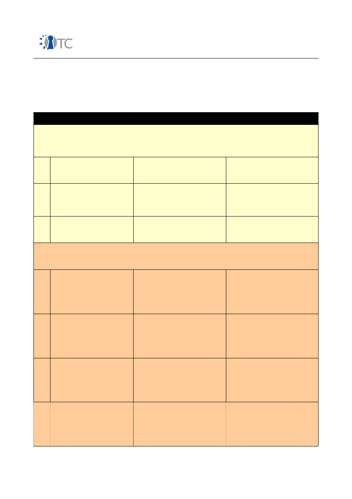
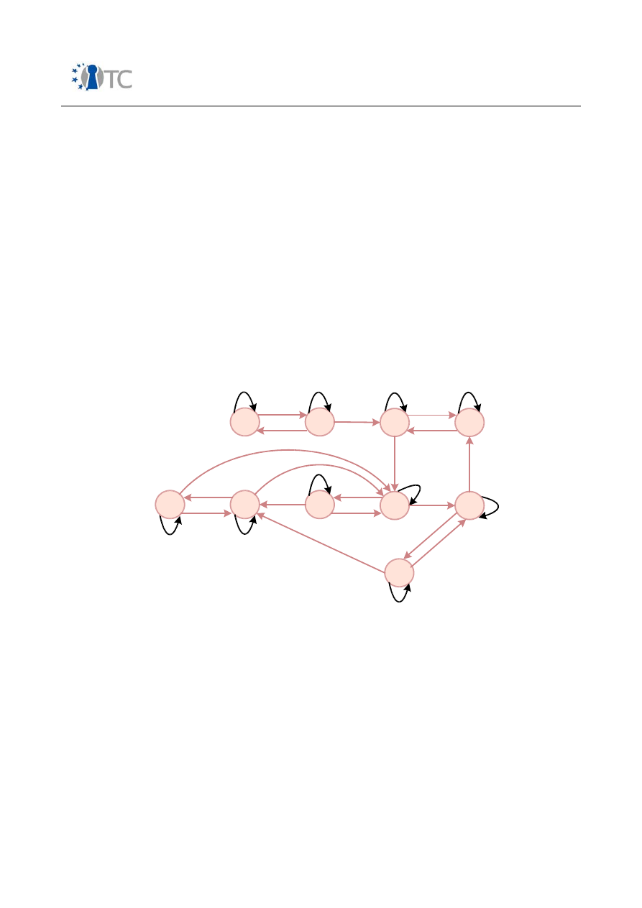

D07.1 V&V report #1: Security Requirements
definition, Target Selection, Methodology
Definition, First Security Testing and First
Formal Verification of the Target
Project number
IST-027635
Project acronym
Open_TC
Project title
Open Trusted Computing
Deliverable type
Report
Deliverable reference number
IST-027635/D07.1/1.1
Deliverable title
V&V report #1: Security Requirements
definition, Target Selection, Methodology
Definition, First Security Testing and First
Formal Verification of the Target
WP contributing to the deliverable
WP07
Due date
Oct 2006 - M12
Actual submission date
29 November 2006
Responsible Organisation
CEA
Authors
Pascal Cuoq, Roman Drahtmüller, Ivan
Evgeniev, Pete Herzog, Zoltan Hornak, Virgile
Prevosto, Armand Puccetti (eds.), Gergely
Toth, Ventcislav Trifonov.
Abstract
This deliverable is the main output of WP07
for the first yearly period, ie from November
2005 to October 2006. It describes the main
results and work in progress of all partners of
WP07, i.e. ISECOM, TUS, CEA, BME and SUSE
Keywords
Security Requirements definition,Target
selection, Methodology Definition, First
security testing, First formal verfication of
the target
V&V report #1: Security Requirements definition, Target Selection, Methodology
Definition, First Security Testing and First Formal Verification of the Target
1.1
Dissemination level
Public
Revision
1.1
Instrument
IP
Start date of the
project
1
st
November 2005
Thematic Priority
IST
Duration
42 months
If you need further information, please visit our website
www.opentc.net
or contact
the coordinator:
Technikon Forschungs-und Planungsgesellschaft mbH
Richard-Wagner-Strasse 7, 9500 Villach, AUSTRIA
Tel.+43 4242 23355 –0
Fax. +43 4242 23355 –77
Email
coordination@opentc.net
The information in this document is provided “as is”, and no guarantee
or warranty is given that the information is fit for any particular purpose.
The user thereof uses the information at its sole risk and liability.
OpenTC Deliverable 07.1
2/118

V&V report #1: Security Requirements definition, Target Selection, Methodology
Definition, First Security Testing and First Formal Verification of the Target
1.1
Table of Contents
1 Summary.....................................................................................................................8
2 Introduction.................................................................................................................9
2.1 Outline....................................................................................................................9
2.2 Structure of this report.........................................................................................11
3 Definition of targets...................................................................................................12
3.1 Selecting Targets..................................................................................................12
3.2 Future directions...................................................................................................12
4 Development of a security testing methodology.......................................................14
4.1 Overview...............................................................................................................14
4.2 Technical background...........................................................................................16
Security Testing Process...........................................................................................16
Table 1: Error Types..................................................................................................17
Operational Security Testing.......................................................................................19
Four Point Process.....................................................................................................19
Applying the Methodology..........................................................................................20
Auditor's Trifecta.......................................................................................................21
4.3 Process view.........................................................................................................23
4.4 Main results achieved...........................................................................................28
Security Metrics..........................................................................................................28
Applying Risk Assessment Values...............................................................................28
Operational Security...................................................................................................29
Controls.......................................................................................................................30
Security Limitations....................................................................................................31
Actual Security............................................................................................................33
4.5 On-going work and future directions.....................................................................33
5 Automated black-box and white box security testing................................................35
5.1 Overview...............................................................................................................35
5.2 Technical background...........................................................................................35
5.3 Process view.........................................................................................................37
5.4 Main results achieved...........................................................................................39
5.4.1 Automated test tool selection..........................................................................39
5.4.2 Automated test tool methodology adaptation for OpenTC...............................40
5.4.3 Training on OpenTC products...........................................................................45
5.4.4 Common Criteria training.................................................................................45
5.5 On-going work and future directions.....................................................................47
5.5.1 Testing of OpenTC software components.........................................................47
5.5.2 Research on test algorithms.............................................................................47
6 Development of a C code static analyser using AI.....................................................49
6.1 Overview...............................................................................................................49
6.2 Technical background...........................................................................................49
6.2.1 Static analysis versus testing...........................................................................49
6.2.2 State of the art.................................................................................................50
6.3 Process view.........................................................................................................52
6.3.1 Roadmap..........................................................................................................52
6.3.2 Achievements...................................................................................................53
6.4 Main results achieved...........................................................................................53
OpenTC Deliverable 07.1
3/118

V&V report #1: Security Requirements definition, Target Selection, Methodology
Definition, First Security Testing and First Formal Verification of the Target
1.1
6.4.1 Treatment of endianness and data representation issues................................53
6.4.2 Treatment of aliases.........................................................................................54
6.4.3 Localisation of the origin of over-approximations............................................55
6.5 On-going work and future directions.....................................................................55
7 Formal analysis of the XEN target.............................................................................56
7.1 Overview...............................................................................................................56
7.2 Technical background...........................................................................................56
7.3 Process view.........................................................................................................57
7.4 Main results achieved...........................................................................................61
7.5 On-going work and future directions.....................................................................66
8 Formal analysis of the TCP/IP package of the Linux kernel........................................67
8.1 Overview...............................................................................................................67
8.2 Technical background...........................................................................................67
8.3 Process view.........................................................................................................68
8.4 Main results achieved...........................................................................................72
8.5 On-going work and future directions.....................................................................72
9 Survey and state of the art of quality analysis tools .................................................73
9.1 Overview...............................................................................................................73
9.2 Technical background...........................................................................................74
9.3 Process view.........................................................................................................75
9.4 Main results achieved ..........................................................................................75
9.5 On-going work and future directions ....................................................................76
10 Statistics of Linux kernel bugs ................................................................................77
10.1 Overview ............................................................................................................77
10.2 Technical background ........................................................................................77
10.3 Process view ......................................................................................................77
10.4 Main results achieved ........................................................................................77
10.5 On-going work and future directions ..................................................................78
11 CC EAL5+ certification study..................................................................................79
11.1 Overview.............................................................................................................79
11.2 The Open Source Software development model and Common Criteria
Evaluations.................................................................................................................79
11.3 Derived consequences for the OpenTC consortium............................................82
11.4 Challenges..........................................................................................................84
11.5 Scope of the Evaluation, TOE and ST specification.............................................86
11.6 Caveats, Recommendations...............................................................................88
11.7 On-going work and future directions...................................................................89
12 References...............................................................................................................90
13 List of Abbreviations................................................................................................91
1 Appendix. Survey of code quality analysis and static analysis tools.........................94
1.1 Source Code Analysis Tools.................................................................................94
1.1.1 CodeSurfer from GrammaTech. (http://www.grammatech.com)......................94
1.1.2 CC Rider from Western Wares Llc. (http://www.westernwares.com)................94
1.1.3 Cleanscape C++Lint from Cleanscape
(http://www.cleanscape.net/products/cpp/index.html)..............................................94
1.1.4 Sourceaudit from FrontEndArt Ltd.
(http://www.frontendart.com/sourceaudit_notes.php)...............................................95
1.1.5 Telelogic Tau Logiscope from Telelogic (http://www.telelogic.com)................95
OpenTC Deliverable 07.1
4/118

V&V report #1: Security Requirements definition, Target Selection, Methodology
Definition, First Security Testing and First Formal Verification of the Target
1.1
1.1.6 Splint from Splint Co. (http://www.splint.org/)..................................................95
1.1.7 Understand for C++ from Scientific Toolworks Inc. (http://www.scitools.com/)
..................................................................................................................................96
1.1.8 CTC++:Test Coverage Analyzer fo C++ from Verifysoft GmbH.
(http://www.verifysoft.com/en.html).........................................................................96
1.1.9 QA C++ from QA Systems. (http://www.qa-systems.com/)..............................96
1.1.10 UNO from Spinroot (http://www.spinroot.com/uno)........................................97
1.1.11 Surveyor from Lexient Corp. (http://www.lexientcorp.com/)..........................97
1.1.12 CodeWisard from Parasoft (http://www.parasoft.com/)..................................97
1.2 Static Source Code Analyzers...............................................................................98
1.2.1 Coverity Prevent from Coverity Inc. (http://www.coverity.com/)......................98
1.2.2 K7 from Klocwork Inc. (http://www.klocwork.com/)..........................................98
1.2.3 Polyspace from Polyspace technologies (http://www.polyspace.com/).............98
2 Appendix. Linux errors.............................................................................................100
2.1 References: documents and specifications.........................................................100
2.2 Forums and mailing lists.....................................................................................100
2.3 Errors list.............................................................................................................101
3 Appendix. DoS SCN Sequence Diagrams.................................................................113
OpenTC Deliverable 07.1
5/118

V&V report #1: Security Requirements definition, Target Selection, Methodology
Definition, First Security Testing and First Formal Verification of the Target
1.1
List of figures
1. Figure: Methodology Application..............................................................................20
2. Figure: Test Modules................................................................................................24
3. Figure: Classification of programming bugs.............................................................36
4. Figure: Black-box scenario........................................................................................42
5. Figure: White-box scenario.......................................................................................44
6. Figure: Automaton A1...............................................................................................69
7. Figure: Automaton A2...............................................................................................69
8. Figure: Automaton A3...............................................................................................70
9. Figure: Automaton A4...............................................................................................70
10. Figure: Automaton A5.............................................................................................70
11. Figure: Automaton A6.............................................................................................71
12. Figure: Open Source Software (OSS) development process ..................................81
13. Figure: Development Funnel .................................................................................83
OpenTC Deliverable 07.1
6/118

V&V report #1: Security Requirements definition, Target Selection, Methodology
Definition, First Security Testing and First Formal Verification of the Target
1.1
List of Tables
Table 1: Error Types.....................................................................................................17
Table 2: Methodology Phases.......................................................................................25
Table 3: Actual Security................................................................................................29
Table 4: Calculating OPSEC..........................................................................................29
Table 5: Calculating Controls........................................................................................30
Table 6: Calculating Security Limitations......................................................................32
Table 7: Security Limitations Categories......................................................................33
Table 8: Formal Approaches using EventStudio............................................................67
Table 9: Comparison between CC EAL4 and EAL5........................................................84
OpenTC Deliverable 07.1
7/118

V&V report #1: Security Requirements definition, Target Selection, Methodology
Definition, First Security Testing and First Formal Verification of the Target
1.1
1 Summary
OpenTC sets out to develop trusted and secure computing systems based on Trusted
Computing hardware and Open Source Software. This deliverable provides the main
results of workpackage 07 dealing with support activities, i.e. methodology, testing,
verification and certification preparation. These results stem from various research
directions, and are directly related to the OS developments and their building blocks.
Some of the main results are the development and selection of testing and verification
tools, the definition of an Open Source Security testing Methodology.
OpenTC Deliverable 07.1
8/118

V&V report #1: Security Requirements definition, Target Selection, Methodology
Definition, First Security Testing and First Formal Verification of the Target
1.1
2 Introduction
This deliverable is the main output of WP07 for the first yearly period, i.e. from
November 2005 to October 2006. It describes the main results of that period as well
as work in progress of all partners of WP07, i.e. of BME, CEA, ISECOM, SUSE and TUS.
In this report we only present the research and development results for that period,
but do not address any project management issues, for which the reader is invited to
open the partners activities report.
2.1 Outline
The first year of OpenTC includes eight tasks, some of them being terminated and
some others are on-going.
The following is the list of all tasks included in WP07:
1. Definition of targets,
2. Development of a methodology for operational security and a security metrics,
3. Black box and white box security testing – tools development and testing
methodology,
4. Development of the PPC C code static analyser using AI,
5. Formal analysis of the XEN target,
6. Formal analysis of the TCP/IP package of the Linux kernel,
7. Survey of state of the art quality analysis and static analysis tools for C,
8. Statistics of Linux kernel bugs,
9. Study on CC EAL5+ certification feasibility.
WP07 has multiple objectives that can be classified as below:
●
To support the developments done on the OpenTC OS (including several
variants and versions): this includes classical testing, verification and
elaboration of a methodology.
●
Research on several fundamental parts, related to security and reliability: white
and black box testing and static analysis of large size targets such as XEN or the
Linux kernel, certifiability of open-source software at levels EAL5 and above,
etc.
The project started with some classical initialisation phases (hardware and software
setup, understanding of the project goals and of the roles of the partners, positioning
of the parters w.r.t. the WP and SWP goals described in the annex 1 of the contract,
survey of existing material, set up of tasks and of roles of each team member, etc).
OpenTC Deliverable 07.1
9/118

V&V report #1: Security Requirements definition, Target Selection, Methodology
Definition, First Security Testing and First Formal Verification of the Target
1.1
The definition of targets was envisioned as an early mandatory task, because it
channels most tasks, but remained incomplete for the first project year, as the OS
developers had no clear ideas on what the future OS will be precisely. Therefore, they
could only provide hints about components to address by WP07. These were: the L4
compatible hyper-visor Fiasco developed by TUD, the XEN hyper-visor developed by
XENSOURCE and, obviously, the last Linux kernels 2.6.15 and 2.6.16. Given the very
large size of these components, the partners concentrated on a subset of some of
them.
A methodology for ensuring a proper development and ensuring trust in the resulting
product, was another pre-requisite. This task was entrusted to ISECOM, who is
specialized in this area and deeply involved in open-source products. ISECOM first
formalised a set of security definitions and then set up a methodology for operational
security as well as means to calculate security metrics. Knowing that trust is an
ephemeral notion, with technical, human and organisation aspects, that measure
gives a value to the actual trust that can be put into a system. It does not only show
how one is prepared for threats but also how effective one is prepared against threats.
Testing and verification are the standard support activities usually part of the
development process of any critical software product, and are therefore tackled using
advanced testing and static analysis and methods by BME, TUS and CEA.
After a survey of existing automated testing tools, that led to the selection of the
Flinder tool, BME defined a testing framework, and an associated methodology
compliant with the CC. The security testing method considers black box as well as
white box testing. It innovates by considering that the ToE and the input generator
communicate via messages (perhaps over some network), the Flinder tool sitting as a
man in the middle between the two. Flinder is given the format of the messages (or of
the protocol) such that it can modify their content for black box testing purposes. The
internal form of the messages, sometimes grouped into packets, are used (and
modified) by the internal test logic (a Statechart) to drive the ToE. White box testing of
course needs the source code and annotates it to define test locations, where Flinder
connects to inject and recover data. After recompilation, testing goes as for black box
testing.
Static analysis differs by analysing some target code without actually running it, but
by building some model and proving properties on it. We distinguish two classes of
code: those amenable to a finite state model and those that can be turned into a flow-
chart model and deductive techniques applied on it. After a survey of existing static
analysis tools, TUS selected the Coverity tool for application on the target (see below).
The survey was limited to the commercial tools capable to analyse C code either at
the syntactical or at the semantic level. Among the many static analysis techniques,
abstract interpretation, sometimes combined with older techniques, appears to be the
most promising one for large applications, mainly because it builds and reasons on a
simplified model of the code (contrary to Hoare Logics) to extract simple properties
and errors. CEA is developing the PPC C code interpreter which has a new memory
model, and with a modular architecture, ready to accept and combine different
analyses (and domains) including Hoare analysers. As a first application, PPC has been
applied to the XEN core. Iteratively, this case study improves PPC along the XEN core
OpenTC Deliverable 07.1
10/118

V&V report #1: Security Requirements definition, Target Selection, Methodology
Definition, First Security Testing and First Formal Verification of the Target
1.1
analysis.
The certification of some piece of software such as the targets envisaged here, is not a
trivial job, especially when it hinders on habits of human developers or on
organisational or economic criteria. When the target at hand is OSS, then certification
may also get stuck because of the anarchic development process. In fact, an OSS
development process produces high quality code but using an under-deterministic
process, meaning that it is deterministic from the inside but seems non-deterministic
from the outside. SUSE has examined the relationship between the CC certification
and OSS, and evaluated the feasibility of the CC assurance criteria for level EAL5,
comparing it with criteria of the already achieved level EAL4. Given its knowledge of
Linux, SUSE re-centres the certifiability problem of Linux to the core problem, namely
the certifiability of the virtualisation layer (domain 0).
2.2 Structure of this report
This report is structured along the above mentioned tasks, presenting them in details
and giving the reader an insight into each technique and results as well as its
application to OpenTC.
Each task will be described, whenever possible, using the same model, follows:
–
Nature of the task and description of its aims and relationship with the original
plans of WP07 and its SWP: this introduces the task and binds it to the first
workplan (see annex 1 of the OpenTC contract).
–
Background: this contains basic technical elements for the reader to understand
the results.
–
Process view: this explains how the task was performed.
–
Main results achieved: this is the core part, highlighting the technical results.
–
On-going work during the second period of the project: this gives some
perspectives on what will to be done during the next project period and what
research directions will be taken for that time frame.
OpenTC Deliverable 07.1
11/118
V&V report #1: Security Requirements definition, Target Selection, Methodology
Definition, First Security Testing and First Formal Verification of the Target
1.1
3 Definition of targets
3.1 Selecting Targets
The understanding and definition of the analysis target was one of the first tasks that
cropped up during the project. The definition of the targets is critical as
●
It constraints the tools used to analyse them,
●
it is constrained by the efforts and time planed to analyse them,
●
its nature constraints the CC evaluation preparation,
●
its development process might differ and influence previous items, and
●
it binds WP07 to other project partners and their development plans.
Therefore discussions with the partners of WP04 have taken place in order to
understand what will be the OpenTC OS and what parts have to be considered by
WP07. Indeed, the developer are in charge and in control of the development process
and have a good understanding of the criticality of the modules being developed, to
take the right decision on the targets nature. TUD and CUCL being the authors of the
two first OpenTC OS including a virtualization layer, they were asked primarily. It
appeared that it was too early to decide upon which precise modules must be
analysed, but instead it seemed wise to consider the most critical existing
components: the core of XEN 3.0 final, L4/Fiasco V1.2 and Linux 2.16.15/16 kernel.
This broad definition of the targets has the disadvantage of leaving an important
quantity of code for analysis, and the advantage of leaving WP07 members the choice
of sub-components to analyse.
3.2 Future directions
During the project meeting in Zurich, 13 to 15 September 2006, the targets definition
subject was raised again. Discussions with WP03 and WP04 partners led to a narrower
definition of the targets:
–
With IFX
: a first version of the TSS stack has been released by IFX for testing
purposes. It is located
https://svn.opentc.net/Workpackage%2003/IFX_TSS_Stack/
.
According to IFX, this is a preliminary version, followed by an complete release end
of October. IFX proposes to provide its testing environment. One restriction applies:
found security deficits shall NOT be made public.
This is clearly a testing target for BME, as it is quite self-contained and this would
increase trust in the TSS for other partners.
–
With TUD
: Possibilities to analyse C++ parts of the OS developed in project Robin
have been discussed, but, as C++ verification techniques need maturing, this will
be re-discussed end of 2007. For instance, at CEA, some research is going on on
the static analysis of C++ code (not reported in this deliverable), that may become
applicable to L4.
–
With CUCL
: Several targets, part of XEN, are proposed by Steven Hand, namely
1. Main initialization function, __start_xen, for verification and testing
OpenTC Deliverable 07.1
12/118

V&V report #1: Security Requirements definition, Target Selection, Methodology
Definition, First Security Testing and First Formal Verification of the Target
1.1
purposes: this function shall not produce any error. It outputs an initial
state, to be stored and used below.
2. Hyper-calls: The system interface of an up and running XEN dom0 is
made of hyper-calls (see XEN interface manual), which are called in a
quite random order at run-time. Testing these functions is done via a
(CUCL internal) main function that invokes them randomly. Verification
shall explore these hyper-calls simultaneously. A priority has to be
assigned by CUCL to each HC.
3. Mini-OS: this is a minimal OS allowing a dom0 to run and to test it. It is
part of the XEN distribution (directory ../xen-3.0.x/extras/mini-os). It is
suggested to compile and get familiar with it, but test and verify it in a
later stage of the project.
XEN 3.0.3, to be released during weeks 38 or 39, 2006, is considered as the
target version, and CUCL expects no patches in the C code during the year after
release, to this might be considered as stable for WP07.
This is a verification target for TUS & CEA and a second testing target for BME.
The second project period will therefore concentrate on these updated targets. An
actions list was established in the meeting minutes, to remind partners of contributing
elements and dates.
OpenTC Deliverable 07.1
13/118

V&V report #1: Security Requirements definition, Target Selection, Methodology
Definition, First Security Testing and First Formal Verification of the Target
1.1
4 Development of a security testing methodology
4.1 Overview
The determination of the possibility and means of testing for and measuring trust as in
Trusted Computing means exploring the depths of security both philosophically and
scientifically. Therefore finding the quantification of trust in anything such as in
Trusted Computing means applying verification methods for integrity and all the
components of what it is that makes up trust. A methodology is required. The
Applied Verification for Integrity and Trust (AVIT)
is that methodology to
understand and relate in a scientific manner to the ephemeral concept of trust,
something we can do innately but which we have not yet been able to measure
without bias. In which case, it has not been possible to define a rule set for
determining trust without human input (i.e. machine generated trust has been no
better than random if not built to follow the rules of the entirely human trait of
prejudice).
AVIT has its roots in security testing. Security testing itself however is only a cousin to
trust testing. With security one can define the components of protection and control
and measure if those components are in place. Measuring the components requires
tests and those tests will also determine the reality and verity of the protection and
controls as to their limitations.
Many of the traits we currently apply to measurements, whether the length of a table
or the cubic volume of a house, allows for us to determine the validity of the object
being measured in regards to its function. For example, when we measure the length
of a table, we also determine that; 1. it is a table due to the function of a table, and 2.
that no part of that function as a table is untrue such that as a bowed or round surface
which could make it non-functional as a table. Therefore, security testing will measure
the verity of the function so as to allow the measurement of trust.
As objects for measurement or the type of measurement required gets more complex,
the obviousness of the function or limitations of that function are more obscured and
more difficult to realistically define. For example, to measure the cubic volume of
house appears simple enough because we can grasp the concept of a house, how it
functions, and when it does not function as a house. Or can we? Is a house without a
roof still a house? Does its volume then include the air above it and how far? What
needs to be missing from a house to not be a house? It's not uncommon to see a
living space and for what one person is his or her house and for another it is a cabin, a
tent, or a hole. Therefore we look at its operations: how is it being used or how does it
work? Under the operations premise, an object which performs the known functions of
a house is a house. Once we know it's a house we can measure its cubic volume
based on the known method of measuring cubic meters for the volume of a house.
Reality, however, still shows that even measuring the cubic meters of a house is not
an exact science and there is no universally accepted method for measuring such a
thing (for example the flexible term of “living space” which is measured differently
from area to area) although it's universally and commonly revealed in the sale of all
houses.
OpenTC Deliverable 07.1
14/118

V&V report #1: Security Requirements definition, Target Selection, Methodology
Definition, First Security Testing and First Formal Verification of the Target
1.1
With a complex object such as a computer, it absolutely requires the testing and
evaluating of its operations to security or its trustworthiness. Before the tests and
measurements can be done, we need to know something about a secure computer.
We need to define what it does and how it does it: its operations. For this we rely on
the security test and security metrics.
Defining trust for developing tests for Trusted Computing is more difficult. Since true
trusted computing does not yet exist, we cannot say how one operates. We cannot
say what is required to operate as a trusted computer. We cannot say how trust is
measured without bias. We can only approach this theoretically. However, theory
does not test or measure well except in theory. Yet, despite the obstacles, this is what
we intend to standardize.
The obstacles to trust begin with fears and uncertainties. If there is a chip, how will it
be used? If there is a software, will it take control? If everything is in place, how do I
know it's doing only what it's expected and intended to do if I can't verify for myself?
The three main obstacles are:
1. fears behind trustworthiness
2. the human problem with trustworthiness
3. the technical problem with trustworthiness
The next issue is public acceptance and the human problem with trust. More so than
that even is individual preference. Public acceptance may be something bought and
connived. But individual preference for trust is much more delicate and requires
convincing.
The third obstacle is the technical one. If we have the appropriate hardware in place
for trust, how can we be sure it is appropriate? If we need software for trust, can we
be assured the software operates correctly? Who determines how the hardware and
software interact and that what they accomplish can lead to trust as the conclusion?
Therefore the only appropriate solution is a public and open methodology that is
based on the questions we need answered to find trust and not on the current
research and implementations.
The AVIT methodology is based on that which the person can control for trust to first,
exist, and second, to be beneficial. From the three main obstacles to trustworthiness,
the first two are easiest to find control over by an individual. The third, technical
design and implementation, will require more as not even the average technically-
inclined individual will be able to ascertain trustworthiness without support. For this
reason, the AVIT methodology will focus on tests for the technical problem of
trustworthiness to overcome both the fears and the human problem:
●
Choice and finality of controls,
●
Openness of design and implementation,
●
Transparency of communication and action, and
●
Clarity and usability of operations.
OpenTC Deliverable 07.1
15/118

V&V report #1: Security Requirements definition, Target Selection, Methodology
Definition, First Security Testing and First Formal Verification of the Target
1.1
4.2 Technical background
The goal of AVIT requires first exploring the trusted computing theory and defining all
that which we need to know to measure trust and the operations of trusted computing.
It also requires the means for unbiased testing and measurements. To do this, we
needed to review what has already been done for security testing and for trusted
computing. We also needed to consider the components of both security and trust and
how they are developed in a rational and logical manner.
The process consists of the security audit and the components of opacity to create a
chain of trust according to the rules of trust which have been defined.
Security Testing Process
The security testing process is a discrete event test of a dynamic, stochastic system.
The target is a system, a collection of interacting and co-dependent processes, which
is also influenced by the stochastic environment it exists in. Being stochastic means
the behavior of events in a system cannot be determined because the next
environmental state can only be partially but not fully determined by the previous
state. The system contains a finite, possibly extremely large, number of variables and
each change in variable presents an event and a change in state. Since the
environment is stochastic, there is an element of randomness and there is no means
for predetermining with certainty how all the variables will affect the system state. A
discrete test examines these states within the dynamic system at particular time
intervals. Monitoring operations in a continuous manner, as opposed to a discrete
one, would provide far too much information to analyze. Nor may it even be possible.
Even continuous tests however, require tracking each state in reference to time in
order to be analyzed correctly.
A point of note is the extensive research available on change control for processes to
limit the amount of indeterminable events in a stochastic system. The auditor will
often attempt to exceed the constraints of change control and present “what if”
scenarios which the change control implementors may not have considered. A
thorough understanding of change control is essential for any auditor.
Unfortunately, auditors assume security testing is simple and often audit under what is
known as the “echo process” which requires agitating and then monitoring
emanations from the target for indicators of a particular state (secure or insecure,
vulnerable or protected, on or off, left or right). The echo process is of the cause and
effect type. The auditor makes the cause and analyzes the effect from the target. This
means of testing is very fast but is also highly prone to errors, some of which may be
devastating to the target. While the Rules of Engagement can help minimize damage
to the target in the echo process, it cannot help minimize the errors. We categorized
these errors as:
OpenTC Deliverable 07.1
16/118
V&V report #1: Security Requirements definition, Target Selection, Methodology
Definition, First Security Testing and First Formal Verification of the Target
1.1
Table 1: Error Types
1
False Positive
The target response indicates a particular state as
true although in reality the state is not true. A false
positive often occurs when the auditor's expectations
or assumptions of what indicates a particular state
does not hold to real-world conditions which are rarely
black and white.
2
False Negative
The target response indicates a particular state as not
true although in reality the state is true. A false
negative often occurs when the auditor's expectations
or assumptions about the target does not hold to real-
world conditions, the tools are the wrong type for the
test, the tools are misused, or the auditor lacks
experience. A false negative can be dangerous as it is
a misdiagnoses of a secure state when it does not
exist.
3
Gray Positive
The target response indicates a particular state as
true however the target is designed to respond to any
cause with this state whether it is or not. This type of
security through obscurity may be dangerous as the
illusion cannot be guaranteed to work the same for all
stimuli.
4
Gray Negative
The target response indicates a particular state as not
true however the target is designed to respond to any
cause with this state whether it is or not. This type of
security through obscurity may be dangerous as the
illusion cannot be guaranteed to work the same for all
stimuli.
5
Specter
The target response indicates a particular state as
either true or false although in reality the state cannot
be known. A specter often occurs when the auditor's
receives a response from an external stimulus that is
perceived to be from the target. A specter may be
either intentional of the target, an anomaly from
within the channel, or the result of carelessness
and/or inexperience from the auditor. One of the
most common problems in the echo process is the
assumption that the response is a result of the test.
Cause and effect testing in the real world cannot
achieve consistently reliable results since neither the
cause nor the effect can be properly isolated.
6
Indiscretion
The target response indicates a particular state as
either true or false but only during a particular time.
That time may or may not follow a pattern and if can't
be verified at a time when the state changes, it may
cause the auditor to not comprehend the other state.
An auditor may also determine that this is an anomaly
OpenTC Deliverable 07.1
17/118
V&V report #1: Security Requirements definition, Target Selection, Methodology
Definition, First Security Testing and First Formal Verification of the Target
1.1
or a problem with testing equipment especially if the
auditor failed to calibrate the equipment prior to the
test and perform appropriate logistics and controls.
An indiscretion can be dangerous as it may lead to a
false reporting of the state of security.
7
Entropy Error
The target response cannot accurately indicate a
particular state as either true or false due to a high
noise to signal ratio. Akin to the idea of losing a
flashlight beam in the sunlight, the auditor cannot
properly determine state until the noise is reduced.
This type of environmentally caused error rarely exists
in the lab however is a normal occurrence outside of
the lab in an uncontrolled environment. Entropy can
be dangerous if its effects cannot be countered.
8
Falsification
The target response indicates a particular state as
either true or false although in reality the state is
dependent upon largely unknown variables due to
target bias. This type of security through obscurity
may be dangerous as the bias will shift when tests
come from different vectors or employ different
techniques. It is also likely that the target is not aware
of the bias.
9
Sampling Error
The target is a biased sample of a larger system or a
larger number of possible states. This error normally
occurs when an authority influences the operational
state of the target for the duration of the test. This
may be through specific time constraints on the test
or a bias of testing only that which is designated as
“important” within a system. This type of error will
cause a misrepresentation of the overall operational
security.
10
Constraint
The limitations of human senses or equipment
capabilities indicates a particular state as either true
or false although the actual state is unknown. This
error is not caused by poor judgment or wrong
equipment choices rather it is a failure to recognize
imposed constraints or limitations.
OpenTC Deliverable 07.1
18/118

V&V report #1: Security Requirements definition, Target Selection, Methodology
Definition, First Security Testing and First Formal Verification of the Target
1.1
11
Propagation
The auditor does not make a particular test or has a
bias to ignore a particular result due to an presumed
outcome. This is often a blinding from experience or a
conformational bias. The test may be repeated many
times or the tools and equipment may be modified to
have the desired outcome. As the name implies, a
process which receives no feedback and the errors
remain unknown or ignored will propagate further
errors as the testing continues. Propagation errors
may be dangerous because the errors propagated
from early in testing may not be visible during an
analysis of conclusions. Furthermore, a study of the
entire test process is required to discover propagation
errors.
12
Human Error
The errors caused by lack of ability, experience, or
comprehension, is not one of bias and is always a
factor and always present regardless of methodology
or technique. Where an experienced auditor may
make propagation errors, one without experience is
more likely not to recognize human error, something
which experiences teaches us to recognize and
compensate for. Statistically, there is an indirect
relationship between experience and human error.
The less experience an auditor has, the greater the
amount of human error an audit will contain.
Operational Security Testing
Operational security test requires applying the four point process of testing, choosing
the correct type of test, recognizing the test channels and vectors, defining the scope
according to the correct index, and applying the methodology properly.
Four Point Process
The security test process in this methodology does not recommend the echo process
for reliable results. While the echo process may be used for certain, particular tests
where the error margin is small and the increased efficiency allows for time to be
moved to other time-intensive techniques, it is not recommended for tests outside of a
deterministic environment. However, the auditor must choose carefully when and
under what conditions to apply the echo process.
While many testing processes exist, the recomended security test pocess is one
designed for optimum efficiency, accuracy, and thoroughness to assure test validity
and minimize errors in uncontrolled and stochatic environments. It is optimized for
real-world test scenarios outside of the lab. While it also uses agitation, it differs from
the echo process in that it allows for determining more than one cause per effect and
more than one effect per cause. This test process has four phases which is also why
it's referred to as the Four Point Process.
OpenTC Deliverable 07.1
19/118
V&V report #1: Security Requirements definition, Target Selection, Methodology
Definition, First Security Testing and First Formal Verification of the Target
1.1
Phase 1
Passively collect data of normal operations to comprehend the target. This data does
not need to come from the target alone. The data can be collected from anywhere
and will be used to understand the interaction between the target and its
environment. This data is referred to as emanations.
Phase 2
Actively test operations by agitating operations. The auditor interacts directly with the
operations from different vectors and in varying degrees of frequency and intensity.
The frequency and intensity should both be within the normal baseline as a means of
discovery but also far beyond it as a means of stress.
Phase 3
Passively collect data from other sources interacting with the target as a result of the
test. Indirect data data sources include any type of resources used such as fuel,
energy, materials, man hours and the effected operators of the process or a particular
state such as workers or programs.
Phase 4
Collect imprints of the test from the target. The test itself will leave a trail within the
target. This trail may be in the form of messages, logs, emotions, thoughts, or tracks.
These imprints will show the trails which did not return to the tester and emanated
beyond the tester's monitoring or reach.
Applying the Methodology
1. Figure: Methodology Application
This security testing methodology has a solid base which may seem quite involved but
OpenTC Deliverable 07.1
20/118

V&V report #1: Security Requirements definition, Target Selection, Methodology
Definition, First Security Testing and First Formal Verification of the Target
1.1
it is actually simple in practice. It is designed as a flowchart, however unlike the
standard flowchart, the flow, represented by the arrows, may go back as well as
forward. In this way the flow is more integrated and while the beginning and the end
are clear, the audit has greater flexibility. The auditor creates a unique path through
the methodology based on the target, the type of test, the time allotted for the audit,
and the resources applied to the test. Since the path through the methodology may
be unique between auditors, it is important that the final audit report labels the
restrictions for use in result comparisons. The main reason for requiring this level of
flexibility in this methodology is because no methodology can accurately presume the
justifications for the operations of channel gateways in a target and their adequate
level of security. More directly, this methodology cannot presume a best practice for
conducting all audits as best practice is based on a specific configuration of
operations.
Best practice, or similar, is only best for some auditors, generally the originator of the
practice. Operations dictate how services should be offered and those services dictate
the requirements for operational security. Therefore a methodology that is invoked
differently for each audit and by each auditor can still have the same end result if the
auditor completes the methodology. This is also why one of the foundations of this
methodology is to record precisely what was not tested. By comparing what was
tested and the depth of the testing, with other tests, it is possible to measure
operational security (OPSEC) based on the test results.
Applying this methodology will therefore meet the auditor's goal to answer: (1) how do
current security operations work and (2) how do they work differently from how the
target responsible thinks they work? Appropriate answers to this will also ask the
target responsible the question, (3) how do they need to work? This is known as the
Auditor's Trifecta.
Auditor's Trifecta
1. How do current operations work?
The derived metrics can be applied to determine the problem areas within the scope
and which problems must be addressed. The metrics in this methodology are
designed to map the problems in different ways so as to show if the problem is a
general one or more specific, like an over-look or a mistake.
2. How do they work differently from how management thinks they work?
Access to policies or a risk assessment will map back to the different categories of the
metrics. The categories provide the current state values where a comparison can be
made with both an optimum state according to the policies and one according to
assessed threats.
3. How do they need to work?
Where the metrics show no gap between policy or risk assessment's optimum values
however the security test shows that there is indeed a protection problem regardless
of controls as implemented in policy, it is possible to clearly denote a problem. Often,
without even mapping to policy, a discrepency between the implemented controls and
the loss of protection is simply evident.
OpenTC Deliverable 07.1
21/118

V&V report #1: Security Requirements definition, Target Selection, Methodology
Definition, First Security Testing and First Formal Verification of the Target
1.1
The auditor's trifecta combined with the four point process provide a substantially
thorough application of this methodology.
1. Passively collect data of normal operations to comprehend the target.
2. Actively test operations by agitating operations beyond the normal baseline.
3. Analyze data received directly from the operations tested.
4. Analyze indirect data from resources and operators (i.e. workers, programs).
5. Correlate and reconcile intelligence from direct and indirect data test results.
6. Determine and reconcile errors.
7. Derive metrics from both normal and agitated operations.
8. Correlate and reconcile intelligence between normal and agitated operations to
determine an optimal level of protection and control.
9. Map the optimal state of operations to processes.
10.Create a gap analysis to determine what enhancements are needed for
processes governing necessary protection and controls to achieve the optimal
operational state from the current one.
OpenTC Deliverable 07.1
22/118

V&V report #1: Security Requirements definition, Target Selection, Methodology
Definition, First Security Testing and First Formal Verification of the Target
1.1
4.3 Process view
The development process for the methodology required both research of current study
in Trusted Computing and new developments, specifically gap research for what has
not yet been done.
The initial assessment required defining how operations explain function such as: How
is it being used? How does it work? We know that trusted computing is complex with
both a complex technology and a complex philosophy. What we don't know if trust is
rooted in risk assessment. Is trust just a matter of weighing risks? Is it threat
probability over possibility? To most people, we discovered that trust is about threat
possibility. Numbers and logic are obscured by the potential intensity of disaster and
the process needs to consider the human factor along with the logic.
The methodology will begin as a set of questions to be answered in the form of an
outline. The outline will be provided openly at ISECOM's website and a call for
volunteers and reviewers will be made publicly. The outline will begin under the Open
Methodology License which protects a person's Trade Secrets (a methodology is
considered a Trade Secret by law) in an open manner to foster development and use
in much the same way that the GPL protects copyright. Furthermore, the content
itself will be provided under the Common Criteria copyleft to facilitate research and
open dialog. Contributions are added to the outline and pass through an editorial
review board and then to the open document. Credit is not given as part of the
submission rather as part of the whole document. In this manner, we allow
researchers to provide information which may not be mainstream thought without
having to be afraid of repercussions. In cases of corporate reprisals, researchers may
remain anonymous as long as the information is not protected by the company as
some companies require extensive paperwork for an employee to assist such projects
even off-hours.
As researchers contribute their expertise in the various questions, the methodology
will grow. Verification will take place at ISECOM and with the partners of OpenTC to
assure facts are correct. Further public participation is advertised as the document
takes form and the transparent process is necessary to garner general public support
if not participation. The goal being a set of tests and tasks to assure trust not just for
OpenTC but as a living standard for all Trustworthiness open and closed. Therefore,
any individual or organization should be able to apply the tests and determine if it not
only is trustworthy but also how much so. To do this, we defined the security test
modules with appropriate definitions.
OpenTC Deliverable 07.1
23/118
V&V report #1: Security Requirements definition, Target Selection, Methodology
Definition, First Security Testing and First Formal Verification of the Target
1.1
2. Figure: Test Modules
To choose the appropriate test type, it is best to first understand how the modules are
designed to work. Depending on the thoroughness, business, time allotment, and
requirements of the audit, the auditor may want to schedule the details of the audit by
phase.
There are four phases in the execution of this methodology:
A. Regulatory Phase
B. Definitions Phase
C. Information Phase
D. Interactive Controls Test Phase
OpenTC Deliverable 07.1
24/118

V&V report #1: Security Requirements definition, Target Selection, Methodology
Definition, First Security Testing and First Formal Verification of the Target
1.1
Each phase lends to a different depth of the audit but no one phase is less important
than another in terms of Actual Security.
Table 2: Methodology Phases
Module
Description
Explanation
A. Regulatory Phase
Every trip begins with a direction. In the regulatory phase, the auditor begins the audit with an understanding of the
audit requirements, the scope, and constraints to the auditing of this scope. Often times, the test type is best
determined after this phase.
A.1
Posture Review
The review of the culture, rules, norms,
regulations, legislation, and policies
applicable to the target.
Know the scope and what tests must
be done. Required if the Information
Phase is to be properly conducted.
A.2
Logistics
The measurement of interaction
constraints such as distance, speed,
and fallibility to determine margins of
accuracy within the results.
Know the limitations of the audit itself.
This will minimize error and improve
efficiency.
A.3
Active Detection Verification
The verification of the practice and
breadth of interaction detection,
response, and response predictability.
Know the restrictions imposed on
interactive tests. This is required to
properly conduct Phases B and D.
B. Definitions Phase
The core of the basic security test requires knowing the security presence in relation to the scope and how
interactions with the targets convey to interactions with assets. This phase will define the scope.
B.4
Visibility Audit
The determination of the applicable
targets to be tested within the scope.
Visibility is regarded as “presence”
and not limited to human sight.
Know what targets are there and how
they interact with the scope if at all. A
dead or missing target is also an
unresponsive target. However an
unresponsive target is not necessarily a
missing target.
B.5
Controls Verification
The measurement of the use and
effectiveness of the process-based
(Class B) loss controls: non-repudiation,
confidentiality, privacy, integrity, and
alarm.
Most processes are defined in
response to a necessary interaction
and some remain long after that
interaction stops or has changed.
Knowing what process controls are in
place is a type of security archeology.
B.6
Trust Verification
The determination of trust relationships
from and between the targets. A trust
relationship exists wherever the target
accepts interaction freely and without
credentials.
Trusts for new processes are often very
limited where older processes have a
seemingly chaotic evolution to the
outsider. Knowing trust relationships
between targets will show the age or
value of the interaction.
B.7
Access Verification
The measurement of the breadth and
depth of interactive access points
within the target.
The access point is the main point of
any asset interaction. Verifying an
access point exists is one part of
determining its purpose. Full
verification requires knowing all there is
to know about the access point.
OpenTC Deliverable 07.1
25/118
V&V report #1: Security Requirements definition, Target Selection, Methodology
Definition, First Security Testing and First Formal Verification of the Target
1.1
Module
Description
Explanation
C. Information Phase
Much of security auditing is about the information that the auditor uncovers. In this phase, the various types of value
and detriment of misplaced and mismanaged information as an asset are brought to light.
C.8
Process Verification
The determination of the existence
and effectiveness of the record and
maintenance of existing actual
security levels and/or diligence
defined by the posture review.
Know the controllers and their routines
for the controls. Most processes will
have a defined set of rules however
actual operations reflect any
efficiency, laziness, or paranoia which
may redefine the rules. So it's not just
that the process is there but also how it
works.
C.9
Configuration Verification
The determination of the existence
and effectiveness of proper of security
mechanisms as defined by the posture
review.
Where tests on how interactions occur
explain the access point, the
operation of that point depends upon
the rules established for it and if those
rules are applied. Many regulations
require information regarding how
something is planned to work and this
is not always evident in the execution
of that work.
C.10
Property Validation
The measurement of the breadth and
depth in the use of illegal and/or
unlicensed intellectual property or
applications within the target.
Know the status of property ownership
rights.
C.11
Segregation Review
A determination of the levels of
personally identifiable information
defined by the posture review.
Know what privacy rights which apply
and to what extent the uncovered
personally identifiable information can
be classified based on these
requirements.
C.12
Exposure Verification
The search for freely available
information which describes indirect
visibility of targets or assets within the
chosen scope channel of the security
presence.
The word on the street has value.
Uncover information on targets and
assets from public sources including
that from the targets themselves.
C.13
Competitive Intelligence Scouting
The search for freely available
information, directly or indirectly,
which could harm or adversely affect
the target owner through external,
competitive means.
There may be more value in the
information from processes and
targets than the assets which they are
protecting. Uncover information that
by itself or in aggregate can influence
competitive business decisions.
D. Interactive Controls Test Phase
These tests are focused on penetration and disruption. This is often the final phase of a security test to assure
disruptions do not affect responses of less invasive tests and because the information for making these tests may not
be known until other phases have been carried through. The final module, D17, of Alert and Log Review, is required
to verify that prior test assumptions are true. Most security tests that do not include this phase may still need to run
an end review from the vector of the targets and assets to clarify disruptions that did not respond during standard
echo tests.
OpenTC Deliverable 07.1
26/118
V&V report #1: Security Requirements definition, Target Selection, Methodology
Definition, First Security Testing and First Formal Verification of the Target
1.1
Module
Description
Explanation
D.14
Quarantine Verification
The determination and measurement
of effective use of quarantine for all
access to and within the target.
Determine the effectiveness of
authentication and subjugation
controls in terms of black and white list
quarantines.
D.15
Privileges Audit
The mapping and measurement of the
impact of misuse of credentials and
privileges or the unauthorized
escalation of privilege to a higher level
privilege.
Determine the effectiveness of
authorization on authentication,
indemnification, and subjugation
controls in terms of depth and roles.
D.16
Survivability Validation
The determination and measurement
of the resistance of the target to
excessive or adverse changes.
Determine the effectiveness of
continuity and resistance controls
through the verification of denial of
service and denial of interactivity.
D.17
Alert and Log Review
A review of audit activities performed
with the true depth of those activities
as recorded by the target or from a
third-party.
Know what parts of the audit left a
usable and reliable trail.
OpenTC Deliverable 07.1
27/118

V&V report #1: Security Requirements definition, Target Selection, Methodology
Definition, First Security Testing and First Formal Verification of the Target
1.1
4.4 Main results achieved
Since true trusted computing does not yet exist, we cannot say how one operates. We
cannot say what is required to operate as a trusted computer. We cannot say how
trust is measured without bias. We can only approach this theoretically. However,
theory does not test or measure well except in theory. Yet this is what we intend to
standardize.
Security Metrics
The completion of a thorough security audit has the advantage of providing accurate
metrics on the state of security. The less thorough the audit means a less accurate
overall metric. Alternately, lesser skilled auditors and lesser experienced analysts will
also adversely affect the quality of the metric. Therefore, a successful metric of
security requires an audit which can be described as testing (measuring) from the
appropriate vectors required while accounting for inaccuracies and misrepresentations
in the test data and skills or experience of the security professionals performing the
audit. Faults in these requirements will result in lower quality measurements and false
security determinations.
This methodology refers to metrics as
Risk Assessment Values (RAVs)
. While not a
risk assessment in itself, an audit with this methodology and the RAVs will provide the
factual basis for a more accurate and more complete risk assessment.
Applying Risk Assessment Values
This methodology will define and quantify three areas within the scope which together
create the big picture defined as Actual Security as its relevance to the current and
real state of security. The big picture approach is to calculate separately as a hash,
each of the areas: Operations, Controls, and Limitations. The 3 hashes are combined
to form the fourth hash, Actual Security, to provide the big picture type overview and
a final metric for comparisons. Since RAVs are the minimalizing of relevant security
information, they are infinitely scalable. This allows for comparable values between
two or more scopes regardless of the target, vector, test type, or index where the
index is the method of how individual targets are calculated. This means with RAVs
that the security between a single target can be realistically compared with 10,000
targets.
One important rule to applying these metrics is that Actual Security can only be
calculated per scope. A change in channel, vector, or index is a new scope and a new
calculation for Actual Security. However, multiple scopes can be calculated together
to create one Actual Security that represents a fuller vision of operational security.
For example, the audit will be made of internet-facing servers from both the internet
side and from within the perimeter network which they reside. That is 2 vectors. The
first vector is indexed by IP address and contains 50 targets. The second vector is
indexed by MAC address and is 100 targets. Once each audit is completed and
metrics are counted for each of the 3 areas, they can be combined into one calculation
of 150 targets and the sums of each area. This will give a final Actual Security metric
OpenTC Deliverable 07.1
28/118
V&V report #1: Security Requirements definition, Target Selection, Methodology
Definition, First Security Testing and First Formal Verification of the Target
1.1
which is much more complete for that perimeter network then either would be alone.
Table 3: Actual Security
Value Types
Descriptions
Operations
The lack of security one must have to be interactive, useful, public, open, or available.
For example, limiting how a person buys goods or services from a store over a particular
channel, such as 1 door for going in and out, is a method of security within the store's
operations. Operations are defined by visibility, trusts, and accesses.
Controls
Impact and loss reduction controls. The assurance that the physical and information
assets as well as the channels themselves are protected from various types of invalid
interactions as defined by the channel. For example, insuring the store in the case of fire
is a control that does not prevent the inventory from getting damaged or stolen but will
pay out equivalent value for the loss. There are 10 controls. The first five controls are
Class A which control interactions. The five class B controls are relevant to controlling
procedures.
Limitations
This is the current state of perceived and known limits for channels, operations, and
controls as verified within the audit. For example, an old lock that is rusted and
crumbling used to secure the gates of the store at closing time has an imposed security
limitation where it is at a fraction of the protection strength necessary to delay or
withstand an attack. Determining that it is old and weak through visual verification in
this case is referred to as an identified limitation. Determining it is old and weak by
breaking it using 100 kg of force when a successful deterrent requires 1000 kg of force
shows a verified limitation.
Operational Security
To measure the security of operations (OPSEC) requires the measurements of
visibility, trust, and access from the scope. The number of targets in the scope that
can be determined to exist by direct interaction, indirect interaction, or passive
emanations is its visibility. As visibility is determined, its value represents the number
of targets in the scope. Trust is any non-authenticated interaction to any of the
targets. Access is the number of interaction points with each target. The sum of all
three is the OPSEC Delta, which is the total number of openings within operations and
represents the total amount of operational security decreased within the target.
Table 4: Calculating OPSEC
OPSEC Categories
Descriptions
Visibility
The number of targets in the scope according to the scope. Count all targets by index
only once and maintain the index consistently for all targets. It is generally unrealistic to
have more targets visible then are targets in the defined scope however it may be
possible due to vector bleeds where a target which is normally not visible from one
vector is visible due to a misconfiguration or anomaly.
Trust
Count only each target allowing for unauthenticated interaction according to the
scope.
Access
This is different from visibility where one is determining the number of existing targets.
Here the auditor must count each Access per unique interaction point per unique
probe.
OpenTC Deliverable 07.1
29/118

V&V report #1: Security Requirements definition, Target Selection, Methodology
Definition, First Security Testing and First Formal Verification of the Target
1.1
OPSEC Delta
Visibility + Trust + Access
The negative change in OPSEC protection.
Controls
Controls are the 10 loss protection categories in two categories, Class A (interactive)
and Class B (process). The Class A categories are authentication, indemnification,
subjugation, continuity, and resilience. The class B categories are non-repudiation,
confidentiality, privacy, integrity, and alarm.
Class A
●
Authentication is the control of interaction requiring having both credentials and
authorization where identification is required for obtaining both.
●
Indemnification is the control over the value of assets by law and/or insurance
to recoup the real and current value of the loss.
●
Subjugation is the locally sourced control over the protection and restrictions of
interactions by the asset responsible.
●
Continuity is the control over processes to maintain access to assets in the
events of corruption or failure.
●
Resilience is the control over security mechanisms to provide protection to
assets in the events of corruption or failure.
Class B
●
Non-repudiation prevents the source from denying its role in any interactivity
regardless whether or not access was obtained.
●
Confidentiality is the control for assuring an asset displayed or exchanged
between parties can be known outside of those parties.
●
Privacy is the control for the method of how an asset displayed or exchanged
between parties can be known outside of those parties.
●
Integrity is the control of methods and assets from undisclosed changes.
●
Alarm is the control of notification that OPSEC or any controls have failed, been
compromised, or circumvented.
Table 5: Calculating Controls
Loss Controls
Categories
Descriptions
Authentication
Count each instance of authentication required to gain access. This requires that
authorization and identification make up the process for the proper use of the
authentication mechanism.
Indemnification
Count each instance of methods used to exact liability and insure compensation for all
assets within the scope.
Subjugation
Count each instance for access or trust in the scope which strictly does not allow for
controls to follow user discretion or originate outside of itself. This is different from being a
security limitation in the target since it applies to the design or implementation of
controls.
OpenTC Deliverable 07.1
30/118
V&V report #1: Security Requirements definition, Target Selection, Methodology
Definition, First Security Testing and First Formal Verification of the Target
1.1
Continuity
Count each instance for access or trust in the scope which assures that no interruption in
interaction over the channel and vector can be caused even under situations of total
failure. Continuity is the umbrella term for characteristics such as survivability, load
balancing, and redundancy.
Resistance
Count each instance for access or trust in the scope that does not fail open and without
protection or provide new accesses upon a security failure. In common language, it is
said to “fail securely”.
Non-repudiation
Count each instance for the access or trust that provides a non-repudiation mechanism
for each interaction to provide assurance that the particular interaction did occur at a
particular time between the identified parties. Non-repudiation depends upon
identification and authorization to be properly established for it to be properly applied
without limitations.
Confidentiality
Count each instance for access or trust in the scope that provides the means to
maintain the content of interactions undisclosed between the interacting parties.
Privacy
Count each instance for access or trust in the scope that provides the means to
maintain the method of interactions undisclosed between the interacting parties. While
“being private” is a common expression, the phrase is a bad example of what privacy is
as a loss control because it includes elements of confidentiality. As a loss control, when
something is done “in private” it means that only “the doing” is private but the content
of the interaction may not be.
Integrity
Count each instance for access or trust in the scope which can assure that the
interaction process and access to assets has finality and cannot be corrupted, hanged,
continued, redirected, or reversed without it being known to the parties involved.
Integrity is a change control process.
Alarm
Count each instance for access or trust which has a record or makes a notification
when unauthorized and unintended porosity increases for the vector or restrictions and
controls are compromised or corrupted.
Controls Delta
Sum (all controls) *.1
The positive change over OPSEC protection. The 10 loss controls combined balance the
value of 1 OPSEC loss (access, visibility, or trust).
Security Limitations
The state of security in regard to known flaws and protection restrictions within the scope
are calculated as Limitations. To give appropriate values to each limitation type, they
must be categorized and classified. While any classification name or number can be
used, this methodology attempts to name them according to their effects on OPSEC and
Controls and does not regard them in a hierarchal format of severity. Five classifications
are designated to represent all types of limitations.
●
Vulnerability is a flaw or error that denies access to assets for authorized people or
processes, allows for privileged access to assets to unauthorized people or
processes, or allows unauthorized people or processes to hide assets or themselves
within the scope.
●
Weakness is a flaw or error that disrupts, reduces, abuses, or nullifies specifically the
effects of the interactivity controls authentication, indemnification, resistance,
subjugation, and continuity.
●
Concern is a flaw or error that disrupts, reduces, abuses, or nullifies the effects of the
OpenTC Deliverable 07.1
31/118

V&V report #1: Security Requirements definition, Target Selection, Methodology
Definition, First Security Testing and First Formal Verification of the Target
1.1
flow or execution of process controls non-repudiation, confidentiality, privacy,
integrity, and alarm.
●
Exposure is an unjustifiable action, flaw, or error that provides direct or indirect
visibility of targets or assets within the chosen scope channel of the security
presence.
●
Anomaly is any unidentifiable or unknown element which cannot be accounted
for in normal operatio
ns.
The concept that limitations are only limitations if they have no justification in business or
otherwise is false. A limitation is a limitation if it behaves in one of the limiting factors as
described here. A justification for a limitation is a risk decision and one that is either met
with a control of some kind even if that control is merely acceptance. Risk decisions that
accept the limitations as they are often come down to: the damage a limitation can do
does not justify the cost to fix or control the limitation, the limitation must be so according
to legislation, regulations, or policy, or a conclusion that the threat does not exist or is likely
for the particular limitation. Risk justifications do not enter in the RAV metrics and all
limitations should be counted as discovered regardless if best practice, common practice,
or legal practice denotes it as not an acceptable risk. For the metric to be a true
representation of the operational security of the scope, for the ability of future risk
assessments to be performed with the metric as a basis, and for proper controls to be used
to offset even those risks deemed necessary for legislative reasons, the auditor must report
the operational security state as it is.
Another concept that must be taken into consideration is one of managing flaws and
errors in an audit. An audit will often uncover more than one flaw per target. The auditor
is to report the flaws per target and not the weak targets. These flaws may be in the
protection measures and controls themselves diminishing actual security. Each flaw is to
be rated as to what occurs when the flaw is invoked even if that must be theoretical or of
limited execution to restrict actual damages. Theoretical categorization, where operation
could not take place, is a slippery slope and should really only be limited in the case of a
medium to high risk of actual damages or where recovery from damage is difficult or
requires a long time period. When categorizing the flaws, each flaw should be examined
and calculated in specific terms of operation at its most basic components. However, the
auditor should be sure never to report a “flaw within a flaw” where the flaws share the
same component and same operational effect.
Table 6: Calculating Security Limitations
Limitations Categories
Auditing and Examples
Vulnerability
Count separately each flaw or error that defies protections whereby a person or
process can access, deny access to others, or hide itself or assets within the scope.
In COMSEC data security, a vulnerability can be such things as a flaw in software that
allows an attacker to overwrite memory space to gain access, a computation flaw that
allows an attacker to lock the CPU into 100% usage, or an operating system that allows
enough data to be copied onto the disk until it itself can't operate anymore.
OpenTC Deliverable 07.1
32/118
V&V report #1: Security Requirements definition, Target Selection, Methodology
Definition, First Security Testing and First Formal Verification of the Target
1.1
Weakness
Count each flaw or error in the controls for interactivity: authentication, indemnification,
resistance, subjugation, and continuity.
In COMSEC data security, a weakness can be such things as login that allows unlimited
attempts or a web farm with round-robin DNS for load balancing although each system
has also a unique name for direct linking.
Concern
Count each flaw or error in process controls: non-repudiation, confidentiality, privacy,
integrity, and alarm.
In COMSEC data security, a concern can be the use of locally generated web server
certificates for HTTPS or log files which record only the transaction participants and not
the correct date and time of the transaction.
Exposure
Count each unjustifiable action, flaw, or error that provides direct or indirect visibility of
targets or assets within the chosen scope channel of the security presence.
In COMSEC data security, an exposure can be a descriptive and valid banner about a
service (disinformation banners are not exposures) or a ICMP echo reply from a host.
Anomaly
Count each unidentifiable or unknown element which cannot be accounted for in
normal operations, generally when the source or destination of the element cannot be
understood. An anomaly may be an earl sign of a security problem. Since unknowns
are elements which cannot be controlled for, a proper audit requires noting any and all
anomalies.
In COMSEC data security, an anomaly can be correct responses to a probe from a
different IP address than was probed or expected.
Actual Security
To measure the current state of operations with applied controls and discovered
limitations, a final calculation is required to define Actual Security. As implied by its
name this is the whole security value which combines the three values of operational
security, controls, and limitations to show the actual state of security.
The purpose of Actual Security is to condense the three combined values into a simple
metric value percentile that can be used to rate operational security effectiveness and
provide a method of comparison, scoring, and rating. This big picture approach is
effective because it does not simply show how one is prepared for threats but how
effective one's preparations are against threats.
Table 7: Security Limitations Categories
Security Limitations
Categories
Descriptions
Actual Delta
The actual security delta is the sum of Op Sec Delta and Loss Controls Delta and
subtracting the Security Limitations Delta. The Actual Delta is useful for comparing
products and solutions by previously estimating the change (delta) the product or
solution would make in the scope.
Actual Security (Total)
Actual security is the true (actual) state of security provided as a deduction of all three
sections and represented in a percentage where 100% represents a balance of controls
for interaction points to assets with no limitations.
OpenTC Deliverable 07.1
33/118

V&V report #1: Security Requirements definition, Target Selection, Methodology
Definition, First Security Testing and First Formal Verification of the Target
1.1
4.5 On-going work and future directions
With a set of internationally applicable security definitions, a methodology for
operational security and a means for calculating security metrics, the second phase of
this project is to create a functional trust metric. Current research and community
input has defined the 11 laws of trust:
1. Trust can go in single or multiple directions,
2. Trust can be symmetrical or asymmetrical
3. Trust requires transparency of process (as opposed to "belief")
4. Trust can be developed emotionally (feel) through historical consistency (maybe
integrity?)
5. Historical consistency cannot guarantee future trust
6. Trust can be built through offset of sufficient assurance such as reprisals, liens,
and penalties (insurance / leverage)
7. Trust can be built through offset of sufficient reward (gamble to win)
8. Trust can be furthered through chains of trusted elements (7 degrees)
9. Trust can be increased through sufficient safety and security (controls and
protections)
10.Trust can be rationalized through statistics
11.Trust is necessary when there is no other positive option.
Therefore, to deduce further, the rules to measure trust in a single asymmetrical
direction are where:
Trust = integrity, transparency, assurance, controls, protection, and win
The right means of assigning values to each of these variables in a positive or
negative way can give us a positive or negative value that allows us to adjust the
individual levels to be sufficient for trust. We need to be able to apply this as a user-
friendly means for showing the trust levels of a computer but it should be applicable
across the board to anything involving rational decision making regarding trust.
Another part of the process required for defining trust is measuring opacity. Opacity is
the opposite of transparency and at odds with trust. This part of the process became
clear when a very fundamental question had been asked from the community: “Can a
company like AMD or Infineon falsify the Trust model, add secret functionality to the
TPM or the BIOS for the sake of some DRM greed and would anyone of the masses
care if it doesn't effect their games, toys, chatting, or music? Does only the fringe
really care or are they just more paranoid?”
A Trusted Computer is made of many components and the development of the
hardware and software require many hands and that exposes development to many
agendas. It is not possible to detail the agendas of every person within development
and rule out sabotage 100%. While this may not be necessary to supply Trust
components to the general public, it may be necessary to assure in a formal manner
to one government that particular governments had no hand in the development. This
would require a Trust Index. Such an index would illuminate the chain of trust and
OpenTC Deliverable 07.1
34/118

V&V report #1: Security Requirements definition, Target Selection, Methodology
Definition, First Security Testing and First Formal Verification of the Target
1.1
provide a detailed overview for hardware, firmware, and software of all organizations
and their subcontractors involved in the development, their locations, and for multi-
nationals, the home office location.
Future developments will not only improve existing work but also build upon it in new
ways.
OpenTC Deliverable 07.1
35/118

V&V report #1: Security Requirements definition, Target Selection, Methodology
Definition, First Security Testing and First Formal Verification of the Target
1.1
5 Automated black-box and white box security testing
5.1 Overview
The main goal of the Budapest University of Technology and Economics (BME) in the
OpenTC project its to apply is expertise in security evaluation on the software
components developed within the project in order to increase the overall quality of the
developed modules.
For this main goal, BME has carried out the following main activities in accordance
with the DoW:
●
Study on appropriate test tools
in order to find out, which available tools
would be the most suitable for the OpenTC project.
●
Adaptation of a
test methodology
to the OpenTC project, i.e. how the selected
tools will be used within the project.
●
Common Criteria training
: an important objective of the OpenTC project is to
create software modules that can be certified up to Common Criteria (CC) EAL5
or more. Aim of BME is to carry out testing in a way that the results can be later
on used for an eventual CC evaluation & certification.
●
Finally, BME carried out
internal training on the OpenTC software
modules
(e.g. XEN, L4, TPM) in order to gain a general knowledge about the
components to be tested later on.
Due to the fact that the first modules to be tested are being released for testing
around the time of the writing of this deliverable, no actual testing has taken place
yet. Nevertheless, initial preparations have already been done in order to speed up the
testing once software modules will be available for testing, for more details about the
test process see Section 5.3
5.2 Technical background
The danger of security-relevant programming bugs is especially high, as vulnerabilities
based on these contribute to crucial problems encountered every day in the IT world,
such as:
●
exploitable security holes
,
●
automatic
intrusions
into critical systems and
●
spreading of
viruses
.
Based on the infected computers it is possible to
●
operate WEB servers
without the knowledge of the owner storing illegal
content,
●
spread spam
,
●
carry out
phishing
(i.e. obtain secret information, such as passwords to bank
accounts) or
●
commit credit card fraud
.
The problem is that almost any application can be susceptible to attacks and may be
vulnerable. However, it is a common misbelief that combating these vulnerabilities is
OpenTC Deliverable 07.1
36/118
V&V report #1: Security Requirements definition, Target Selection, Methodology
Definition, First Security Testing and First Formal Verification of the Target
1.1
impossible, since only a very small set of
typical security-relevant programming
bugs
is responsible for the vast majority of discovered and exploited vulnerabilities.
Looking at the global picture, programming bugs can be grouped in three sets (see
Figure 3):
●
programming bugs
, which affect functionality in general,
●
security-relevant programming bugs
that can, but do not necessarily
degrade the security properties of the system (we may also call them
“dangerous, but not necessarily exploitable” bugs and
●
exploitable security vulnerabilities
, where the programming bug can be
exploited and this can cause a security breach.
In practical terms we may call a system secure, if there are no exploitable security
flaws in it. However, to formally prove that the system is secure, we would have to
prove that it fully complies with its specifications, that is no programming bugs are in
the system. While it is hard to address the first goal directly by cheap, but satisfactory
testing or verification methods, on the other hand the formal verification is very
expensive and unnecessarily strict, since the security goals require only that there are
no exploitable flaws, and the functional correctness is not a necessity.
However, in case of most typical security-relevant programming bugs,
effective
testing methods
can be applied to reliably discover sources of these bugs. By
discovering and eliminating these dangerous (but not necessarily exploitable) bugs,
we can avoid the great majority of typical exploitable vulnerabilities.
The aim of the
automated testing
1
carried out in the sub-workpackage SWP07a is
exactly this: executing test cases aiming to identify typical security-relevant
programming bugs in the software packages developed within the OpenTC project and
provide the results to the developers in the form of Test Reports.
In SWP07a BME will carry out security testing on selected targets. This testing can be
1 Although the core goal of BME is to carry out automated testing (since this way a much
larger set of test cases can be executed than by manual means, e.g. tens of thousands
compared to just some tens), BME will also enhance the results of the automated test tool
by
manual
means as well, where necessary. This may include manual re-runs of special test
cases and manual customization of the test tool for special circumstances.
OpenTC Deliverable 07.1
37/118
3. Figure: Classification of programming bugs
V&V report #1: Security Requirements definition, Target Selection, Methodology
Definition, First Security Testing and First Formal Verification of the Target
1.1
executed basically in two modes, both of which will be used within the project:
●
In
black-box
mode only the binary of the ToE is available. This method is
preferable if a quick testing is required and the component is planned to be
released in binary form only.
●
In
white-box
mode the source-code and compilation environment of the ToE is
needed. This scenario enables a much deeper analysis since basically all parts
of the ToE can be subject to testing. This type of testing is advised if the
modules are planned to be released in source-code as well and when the
security level of the module is critical.
5.3 Process view
Disclosing security vulnerabilities always needs delicate handling and these usually
interfere with the interests of the ToE (Target of Evaluation) developers and may
potentially lead to the aforementioned types of exploits causing financial damage to
different entities. This is why the following approach to the test process has been
applied with the following two main cornerstones:
●
according to the
Description of Work
(DoW), all deliverables created in WP7
are public,
●
however, BME operates according to the
Code of Professional Ethics of
ISACA
2
and to well established security policies meaning that it reports to the
appropriate person only.
In order to achieve a result conforming to both of these – seemingly contradicting –
requirements, BME is following the below detailed approach:
Step 0) Preparation
: BME creates with the help of the ToE developer an
environment, in which the automated testing can be performed. This environment can
be set up after the ToE specification can be considered stable, but before the actual
software component is ready.
The main goal of this phase is to set up the environment in which the automated
testing can be carried out. During this phase usually configuration sets are being
worked out that will adapt the test framework to the actual ToE and optionally
software components will be customized/developed in order to optimally link the ToE
to the test framework.
It is important to emphasize that this preparation process is quite
time consuming
and usually is almost as long as the actual testing phase (although does not
necessarily need the same effort). However, since it can be started earlier than the
testing, huge amounts of time can be saved if the tester and the developer cooperate
during this phase.
Step 1) Test Plan
: BME creates (possibly based on requests from the ToE developer)
the Test Plan. Based on review, the accepted Test Plan will serve as the foundation of
2 See
http://www.isaca.org/Template.cfm?Section=CISA_Certification&Template=/ContentManage
ment/ContentDisplay.cfm&ContentID=20454 especially item 6.
OpenTC Deliverable 07.1
38/118
V&V report #1: Security Requirements definition, Target Selection, Methodology
Definition, First Security Testing and First Formal Verification of the Target
1.1
the actual testing. The Test Plan details the test cases that will be carried out during
the testing phase. Usually, the following cornerstones are specified in such a
document:
●
Security requirements (against which the testing will be carried out)
●
Test methodology
●
Test cases
○
Software components to be tested
○
Data structures to be tested
○
Test algorithms to be used
Step 2) Testing
: BME carries out the testing according to the accepted Test Plan with
the help of automated test tools. Testing is executed on a previously agreed version of
the ToE that had been provided by the developer.
Step 3) Reporting to the developer
: The full Test Report containing detailed
description of the findings will be delivered. This document is highly confidential.
For illustration purposes, a typical report from BME has the following rough
table of contents:
1. Executive summary
- Main findings, statistics, 1-3 pages for the management
2. Introduction
- Project overview, scope, document overview
3. Requirements
- List of security requirements (CIAxPreDeCo
3
) against the ToE
4. Test environment
- ToE identification
- Test methodology
- Test enviroment(s)
5) Tests
- Description of tests (objective, environment, conclusion)
6) Conclusion
7) References
Step 4) Developer review
: The developer reviews the findings and carries out fixes
to the ToE. A corrected ToE will be made available to BME.
Step 5) Regression testing
: BME carries our regression testing and creates an
update of the Test Report.
Note: step 4) and 5) are optimally carried out only once, but under special
circumstances or based on negotiations and requests, several iterations may be
possible.
Step 6) Final Test Report
: In the final Test Report the developer indicates, which
parts can be made public and which should be kept confidential. From the full Final
3 CIA x PreDeCo stands for Confidentiality, Integrity and Availability vs. Preventive, Detective
and Corrective. CIA represents the three main assets to be analyzed from security point of
view, whereas PreDeCo corresponds to the three main types of controls that achieve the CIA
properties.
OpenTC Deliverable 07.1
39/118

V&V report #1: Security Requirements definition, Target Selection, Methodology
Definition, First Security Testing and First Formal Verification of the Target
1.1
Test Report a deliverable of the project can be made (and made public), which
contains only those parts that the developer allowed to be published, i.e. BME will
leave out the requested parts from the public OpenTC deliverable.
Typical parts that could be published: test approach, list of tested modules, test
environment, test case statistics (i.e. number of test executed/failed/passed before
and after a bug fix), etc. Typical parts not to be disclosed would be detailed
descriptions of found (and potentially not corrected) bugs or analysis of example test
vectors leading to a detected vulnerability.
5.4 Main results achieved
This Section will detail the activities and their main results that BME has carried out as
part of the SWP07a in the first part of the project. The initial steps included the
selection of the automated test tool to be used, the adaptation of a test methodology
for OpenTC based on the tool and training on different areas (e.g. virtualization,
Common Criteria) related to the successful completion of security testing within the
project.
5.4.1 Automated test tool selection
In order to achieve the goal of carrying out automated testing within the OpenTC
project, BME has done a
study on the available automated testing tools
. The
main purpose of this study was to set up a common evaluation framework for these
tools in order to judge them objectively and being able to choose the most appropriate
one for the testing.
The evaluation framework for the automated testing tools consisted of the following
aspects:
●
Vendor information
: country, year established, primary business profile,
partners, number of patents, trademarks, academic reviews, awards.
This section gives a brief overview about the 'seriousness' of the vendor.
Usually proprietary systems did better in this regard than open-source
ones.
●
Main information about the tool
: test methodology type, black-box/white-
box testing, is the tool only for security or for functional testing as well.
It was important that the chosen tool supports both black-box and white-
box testing.
●
Business model & price
: cost of a standalone module, cost of additional
modules, possibility to customize the tool, availability of security testing service
by the vendor.
It was crucial that BME should be able to customize the tool if necessary
for testing.
●
Operating system
: Windows, Linux, Unix, BSD, Solaris, MacOS, ...
It was important that the chosen tool supports Linux, as the main targets
of the OpenTC project operate under Linux.
●
Software information
: user interface (graphical, command line, ...),
integration into other systems (e.g. bug-tracking), update service.
●
Reporting
: format of the report, method of showing the error, referencing the
OpenTC Deliverable 07.1
40/118
V&V report #1: Security Requirements definition, Target Selection, Methodology
Definition, First Security Testing and First Formal Verification of the Target
1.1
source of the error, intelligibility of the report.
●
Project work
: support for testing during development, support for team
development and regression testing.
Support for regression testing (see Section 6.3) was a crucial criteria as
our ultimate goal is not only detecting the security issues but also to
verify that they have been successfully corrected.
●
Rules & issues
: user-defined rules, OWASP top ten issues, SANS top twenty
issues.
Again, the support for user-defined rules was critical. Due to the nature of
the OpenTC project, ready-made solutions with minimal customization
support could not provide the best possible solution.
●
Vulnerability support
: list of vulnerabilities that the tool is capable of
detecting.
As part of this study, BME evaluated 78 tools according to the above described
evaluation criteria. Ultimately, the decision was to choose the tool called
Flinder
4
. In
the following Section a brief overview will be given on the test methodology that was
defined to be used in connection with Flinder.
The main reasons for Flinder after the evaluation of the 78 tools was the following:
●
Provided by a reputable vendor (SEARCH-LAB Ltd.) with experiences in security
evaluation and testing.
●
The tool supported both black-box and white-box testing.
●
The tool was provided to BME free of charge to be used within the OpenTC
project.
●
The tool supported Linux.
●
The tool supported regression testing and individual re-run of selected test
cases.
●
It is possible to create custom modules for special protocols, test algorithms or
adaptation to special test environments.
5.4.2 Automated test tool methodology adaptation for OpenTC
In this Section a brief overview will be given on the Flinder tool and then the
methodology to be used for testing will be introduced.
5.4.2.1 Introduction on Flinder
In traditional secure software engineering the emphasis was on formal methods (which
could prove the correctness of the applied techniques) and on extensive testing.
Flinder’s aim is to provide additional help in testing by utilizing a new approach for
test vector generation. In our concept the ToE is communicating with an Input
Generator via messages. The idea is that Flinder modifies these messages in a man-in-
the-middle way. Naturally, this communication can be network-based, but a simple
application processing files can also be handled this way.
4 For more information about the Flinder tool, see www.flinder.hu.
OpenTC Deliverable 07.1
41/118

V&V report #1: Security Requirements definition, Target Selection, Methodology
Definition, First Security Testing and First Formal Verification of the Target
1.1
In order to be able to modify the input messages Flinder needs to know the
format
descriptions
of the different messages. Based on the message format descriptions
Flinder transforms each message into a general internal format (MSDL). Test specific
modifications (so-called
Test Logic
) will work on this internal representation. It is also
possible that one test case consists of not just one request-response message
exchange, but a series of messages (i.e. execution of a
protocol
) is needed to drive
the ToE into the targeted state, and Flinder has to modify the content of a message
only then. For testing such protocols, format description of each protocol message and
the protocol's state chart need to be given. For this reason Flinder maintains a
Protocol Statechart (based on a UML
state machine
), which can describe the series
of messages between the Input Generator and the ToE.
So Flinder can understand protocol steps and modify messages between the Input
Generator and the ToE, aiming to reveal the typical security-relevant programming
bugs. Generic testing algorithms are then used, that can work on the internal
representation of parsed messages.
For making testing more efficient, Flinder is capable of looking for different bugs
concurrently
(e.g. by testing different buffers simultaneously). Furthermore, by
taking the responses of the ToE into account, Flinder can employ reactive testing to
better identify potential security bugs.
Based on the availability of the source code Flinder can be used in black-box or white-
box scenarios:
●
In the
black-box mode
the ToE is evaluated in its executable form and Flinder
supplies the input directly to it and draws conclusions based on successful or
abnormal reaction (e.g. OS level signals).
●
White-box testing
could be applied if the source code is available. This way
Flinder could inject the modified test vectors into the tested functions directly,
this way it could achieve a much bigger coverage and Flinder could be involved
in the internal (source code level) testing of a product.
5.4.2.2 Test methodology
The test methodology to be used in connection with the testing to be carried out with
the Flinder tool consists of two parts, one related to black-box testing and the other to
white-box testing.
During
black-box testing
Flinder tests the compiled and runnable executable of the
ToE (see Figure 4). As part of the testing the following tasks need to be carried out:
●
An
Input Generator (IG)
needs to be set up that is capable of driving the ToE
by sending it valid messages. This Input Generator is usually created during
functional testing and can be re-used by the security testing. The main
requirement is that there should be an easy way for Flinder to control this Input
Generator
●
Since Flinder operates as a man-in-the-middle, it has to intercept the messages
exchanged between the Input Generator and the ToE. For this purpose Flinder
OpenTC Deliverable 07.1
42/118
V&V report #1: Security Requirements definition, Target Selection, Methodology
Definition, First Security Testing and First Formal Verification of the Target
1.1
has two modules, the
Capturer
and the
Dispatcher
. For some generic
message exchange methods (e.g. file-exchange, TCP/IP network
communication) Flinder has ready-made modules for message interception, and
these need only be configured appropriately. However, in special cases, new
modules need to be developed.
●
Once the messages have been captured, Flinder has to parse them into its
internal structure (called MSDL), so that it can apply the testing on them. This is
the task of the
Parser
module, which needs the
message format descriptors
(MFDLs) for this purpose. These special XML documents need to be created for
all types of messages exchanged between the IG and the ToE. For standardized
format description languages (e.g. XML Schema, EBNF, ASN.1) there are
automatic means to deriving the MFDLs.
●
In order to be able to follow complex protocols consisting of several messages,
Flinder needs a P
rotocol Statechart
. This statechart is represented by an UML
state-machine, whose description can be fed into Flinder using the standardized
XMI language. Such an UML state machine can be created with the help of
various graphical tools
5
.
●
Finally, the
Test Logic
needs to be configured. Flinder offers various test
algorithms for testing purposes, these need to be set up adequately.
Additionally, is is also possible to create custom test modules, which can then
be added to the testing framework.
Once the above steps have been carried out, Flinder can be started and it will
automatically go through the defined test cases and produce the
test report
. In each
test case Flinder will carry out one special modification to a protocol message in order
5 There are several tools on the market that enable the creation of UML diagrams, one can
choose between non-commercial and professional tools as well.
OpenTC Deliverable 07.1
43/118
4. Figure: Black-box scenario

V&V report #1: Security Requirements definition, Target Selection, Methodology
Definition, First Security Testing and First Formal Verification of the Target
1.1
to identify a type of security vulnerability in the input handling of the ToE. Based on
the reactions of the tested module, Flinder will make a verdict automatically, whether
the test case
passed
(i.e. the ToE behaved as was anticipated),
failed
(the ToE mis-
behaved) or was
inconclusive
(i.e. Flinder could not decide – in such cases manual
testing could be carried out to come to a conclusion).
On the other hand, the main goal of the
white-box testing
is to inject the test
vectors generated by Flinder into the internal state of the ToE. For this purpose the
source-code of the ToE is needed, which will be modified (see Figure 5 for a brief
overview).
White-box testing involves several of the above mentioned steps in the following way:
●
First the source-code of the ToE needs to be
annotated
by showing Flinder
which data structures need to be testing. Although Flinder could be instructed
to test all data structures, in general this would be too much and also a waste of
time, thus usually the testers point Flinder to those parts of the source-code
that need to be tested from security point of view.
●
In order for Flinder to be able to carry out testing, again
message format
descriptors
(MFDLs) need to be created. These can again be derived
automatically from the type definitions of the source-code.
●
Similarly to the black-box testing, a
statechart
also needs to be created
showing the possible sequences of the messages reaching Flinder.
●
Once the source-code has been annotated, Flinder automatically modifies it by
adding so called
hooks
into it. These hooks have the purpose of transferring
the selected data structure to Flinder and receiving back the test vector from
Flinder. In other words, the hooks basically change the tested variables by filling
them with the test vector generated by Flinder.
●
After the modification of the source-code, the ToE needs to be
recompiled
.
●
Finally, the Flinder framework needs to be
configured
just the same way as in
black-box mode.
OpenTC Deliverable 07.1
44/118
V&V report #1: Security Requirements definition, Target Selection, Methodology
Definition, First Security Testing and First Formal Verification of the Target
1.1
After all the steps described above have been carried out, Flinder executes the ToE
binary repeatedly injecting the consecutive test vectors at each test case. Similarly to
the black-box scenario, during the white-box operation Flinder will automatically
create the
test report
containing the verdicts of the test cases.
It is important to note that during the test execution Flinder
logs all messages
that it
has created or modified, so that the developers can easily find the bug that has led to
the security problem detected by Flinder.
Notes on the usage of Flinder in the
OpenTC project
:
●
BME intends to use the test framework created for functional testing by the
partners as the Input Generator for Flinder.
●
During the project, BME will be responsible for creating the message format
descriptors (MFDLs) and the protocol statecharts for the testing processes.
●
BME intends to use the file- and network-capturing modules of Flinder for black-
box testing (e.g. for the Trusted Software Stack) and the hook-injection
technique for white-box testing (e.g. for Xen and L4).
●
The ready-made test algorithms of Flinder will all be used, but BME intends to
research and develop new test algorithms as well that can take the specialities
of the OpenTC project into account.
●
Besides the automatically generated test report, BME intends to provide an
OpenTC Deliverable 07.1
45/118
5. Figure: White-box scenario

V&V report #1: Security Requirements definition, Target Selection, Methodology
Definition, First Security Testing and First Formal Verification of the Target
1.1
analysis of the results of Flinder to the partners. This means that BME will try to
group the test cases manually into categories – usually Flinder discovers the
same bug several times (e.g. an integer overflow might be detected in several
test cases). This grouping can greatly increase the speed of correcting the bugs.
5.4.3 Training on OpenTC products
The area in which OpenTC is carrying out research and developing its software
modules is a relatively special part of the IT spectrum and needs special training.
Having realized this, BME has carried out internal training on the technologies utilized
within the project in order to be able to provide professional, state-of-the-art testing
services to the other consortium members.
The following areas were covered:
●
Trusted Computing
: the specifications of the Trusted Computing Group (TCG)
lay the foundation on which the project is being built. Thus, it is essential that
the project members are familiar with the concepts and methodologies defined
by the TCG.
As the first target for testing is in this area, i.e. the Trusted Software Stack (see
Section ), knowledge from this field is essential for the testing.
●
Virtualization
: in the OpenTC architecture virtualization plays an important
role. Different software components (such as Xen and L4) are actively
developed within the project for this purpose.
Since the next targets are planned to be the Xen an L4 virtualization layers, being
trained and up-to-date in this field is also critical.
5.4.4 Common Criteria training
An important goal of the OpenTC project is to create software components that could
be certified up to Common Criteria EAL5 or more. In order to help in the certification
process of the developed software modules, BME plans to create test reports that
could be reused later on during the evaluation & certification.
For this purpose, BME has started an internal training on the Common Criteria
standards and evaluation methodology. The main areas covered can be found in the
list below:
●
Literary research
●
Position of CC among the IT security standards
●
History of CC
●
Overview of the core documents of CC
●
Introduction to the CC core documents, CC part I. (Introduction and
General Model)
●
Introduction to the CC core documents, CC part II. (Security functional
requirements)
OpenTC Deliverable 07.1
46/118

V&V report #1: Security Requirements definition, Target Selection, Methodology
Definition, First Security Testing and First Formal Verification of the Target
1.1
●
Introduction to the CC core documents, CC part III. (Security assurance
requirements)
●
Introduction to the CC core documents, CCRA
●
Overview on CC-supporting documents
●
Overview on the most important schemes for security evaluation and
certification of IT products
●
National scheme initiative
●
CC databases
●
CC Tools
●
Overview on the materials of the CC conferences
●
CC-based system evaluations
●
CC methodology (CEM)
●
CEM part I. (Introduction and General Model)
●
CEM part II. (Evaluation Methodology)
●
General evaluator tasks
●
Evaluating protection profiles
●
Evaluating security targets
●
Guidelines for sampling
●
Guidelines for consistent evaluation
●
Guidelines for evaluating consistency
●
Guidelines for managing dependencies
●
Guidelines for visiting developer premises (v2.1, v2.3, v3.0)
●
Guidelines for determining the limits of the TOE
●
Guidelines and threats for determining protection (FPT) requirements
●
Guidelines for determining function strength and vulnerability
assessment
●
Guidelines for determining general vulnerabilities
●
Vulnerability assessment according to v3.0
●
Evaluation of the development process (v2.1, v2.3)
●
Guidelines for evaluating documents (v2.1, v2.3)
●
Evaluating life-cycle support (v2.1, v2.3)
●
Evaluating configuration management (v2.1, v2.3)
●
Evaluating delivery and operation (v2.1, v2.3)
●
Evaluating testing (v2.1, v2.3)
●
Evaluating vulnerability assessment (v2.1, v2.3)
●
Planned changes to the evaluation methodology (v3.0)
●
Overview of an evaluation at assurance level EAL2
●
Overview of an evaluation at assurance level EAL3
●
Overview of an evaluation at assurance level EAL4
Additionally, BME has taken part on the
7
th
International Common Criteria
Conference
. During the three-day event members of BME could
●
listen to presentations about the experiences gained from actual evaluations of
different products (summarizing dos and don'ts concerning CC),
●
get briefed about the upcoming version of Common Criteria (v3.0) being a
major revision of the standard incorporating the experiences of the last 5 years
of evaluation and
●
make personal contacts to representatives of various national schemes,
OpenTC Deliverable 07.1
47/118

V&V report #1: Security Requirements definition, Target Selection, Methodology
Definition, First Security Testing and First Formal Verification of the Target
1.1
personnel of evaluation facilities and other product developers.
5.5 On-going work and future directions
The actual and future work can be divided into two main directions:
●
Carrying out actual testing according to the test process definition (see Section
) and
●
Carrying out research and development on test algorithms suitable for the
OpenTC project in order to provide a state-of-the-art test framework to the
consortium.
5.5.1 Testing of OpenTC software components
The main goal of BME and of the SWP07a is to carry out testing on software
components created by the OpenTC project. For this purpose BME intends to use the
automated security testing tool Flinder (see Sections 5.4.1 and 5.4.2).
Due to the scheduling of the development process, as of the writing of this deliverable
no modules have finished the testing process, thus no reporting about the results can
be done yet. So, we can only list the modules that are in the process or will shortly be
tested:
●
The first target for testing is the
TCG Software Stack (TSS)
developed by the
partner Infineon (IFX). This stack is responsible for providing a layer to access
the functions of the Trusted Platform Module (TPM).
As this software component operates on input potentially obtained from
untrusted sources, the emphasis of the testing will be on input validation, i.e.
that under no circumstances should external input crash the module or modify
its behaviour in a way that compromises security. For this module, BME will
mostly use black-box testing.
●
Later targets for testing are planned to be the parts of
Xen and L4
developed
within the project.
The emphasis of the testing will be put on the internal data structures. It is
crucial that these lower layers of the platform perform adequate checking of
internal structures in order to avoid system compromise. In this case BME
intends to use white-box testing, in order to be able to inject maliciously crafted
data structures into the internal of these modules and observe the fail-safe
mechanisms implemented in the tested components.
5.5.2 Research on test algorithms
Although BME could choose a test framework that incorporates the most crucial
aspects of the testing requirements, the chosen solution is nevertheless not perfect,
thus further research and development needs to be carried out in order to provide test
results to the developers that are valuable for them and that substantially contribute
to improve security.
OpenTC Deliverable 07.1
48/118

V&V report #1: Security Requirements definition, Target Selection, Methodology
Definition, First Security Testing and First Formal Verification of the Target
1.1
The following activities are planned for the next period in this regard:
●
Due to the nature of components tested (e.g. kernel modules, drivers), during
testing it is natural that the devices on which the tests run, may crash.
However, since the main advantage of the automated testing is to carry out
tests in masses over a relatively short time, it is neither effective, nor desirable
to manually restart the devices in such cases. Research will be carried out in
this area, i.e. how to
automatically restart/reboot the devices
in cases,
when they have crashed due to the testing.
●
The selected test framework supports test algorithms for the most common
security bugs. BME will carry out research, whether there are
yet unsupported
types of bugs
that could be detected by the test framework and will
implement the necessary test suites within the test framework to effectively
detect those during the automated testing.
OpenTC Deliverable 07.1
49/118

V&V report #1: Security Requirements definition, Target Selection, Methodology
Definition, First Security Testing and First Formal Verification of the Target
1.1
6 Development of a C code static analyser using AI
6.1 Overview
This subtask is concerned with the development of the PPC C static analyser for the
purpose of analysing selected targets within the OpenTC project.
At the current level of advancement of static analysis techniques, it has not yet been
shown to be possible to realise a truly generic static analyser that could be applied to
a wide range of programs and give useful results in every case. However, appreciable
successes have been attained in cases where specificities of the code to analyse were
known in advance, and where the choices between the various available techniques,
and the technical choices within the chosen technique, could be made with respect to
the targeted code and properties to verify.
It is in this context that the development of a static analyser for the C language is
included in the Work Package 7. This static analyser will be tuned to the
characteristics of the targets written in C.
6.2 Technical background
6.2.1 Static analysis versus testing
Static analysis
is the art of predicting the behaviour of programs without actually
executing them. It is therefore different from
testing
, both in terms of requirements
and in terms of of results that can be obtained. Testing requires that binaries are
available, either
directly or through the application of a compiler (which then must also be available).
Testing furthermore requires the architecture to run the binaries on to be available.
Static analysis, on the other hand, works at the source code level, and thus the source
code must be provided. It does not require binaries (the static analysis of binaries
without source code is possible but extremely difficult). It does not require an actual
architecture (on which
to run the target program on) to be available, even though
some information about the target architecture may need to be provided to the
analyser.
Currently, static analysis techniques are principally used for the detecting the
possibility of run-time errors in the target program, although they are also successful
in the verification of functional specifications for a given implementation. Their use for
the verification of security properties is currently not as developed as these two.
The cost of static analysis is typically higher than that of testing: its application
requires more expertise, but it can, in theory, provide stronger properties than can be
obtained by testing. Typically, static analysis aims at
proving
that the target program
does not go wrong and does what is specified, whereas all that can be claimed
through testing is that the target program does not go wrong on the selected inputs
OpenTC Deliverable 07.1
50/118

V&V report #1: Security Requirements definition, Target Selection, Methodology
Definition, First Security Testing and First Formal Verification of the Target
1.1
that have been submitted to it.
The techniques of testing and of static analysis are complementary, and, when aiming
for the highest level of confidence in the target program, a sound approach is to apply
both.
6.2.2 State of the art
The field of static analysis of program has been an active research theme for several
decades, but it is just nowadays becoming practical enough for applications. As is
typical in this case, a great number of tools are available, each with their own
strengths and weaknesses. The tools listed here are only a sample.
6.2.2.1 Tools based on abstract interpretation
Abstract Interpretation is a static analysis technique that provide results by
executing an abstract version of the analysed program. The operations made in the
abstract program reflect those made in the actual program.
The abstract program operates on abstract values, which are coarser than the actual
values, but on which the computations are simpler. These executions in the abstract
world can therefore express results for entire classes of input values at once. One
factor in making these
abstract executions fast is the approximation that takes place in loops, which allow
the analysis in finite time of programs whose execution does not terminate. However,
in practice, the abstract executions can still be very costly in time and in space,
especially if the chosen abstractions do not fit the analysed program well. This cost
can become the limiting factor in the use of abstract interpretation techniques.
Several verification tools for C programs based on the techniques of abstract
interpretation are available.
Polyspace Verifier
Polyspace Technologies
distribute the tool
Polyspace Verifier
, which uses advanced
abstract interpretation techniques to detect potential run-time errors in C, C++ and
Ada programs.
The design choice of this tool was to make it as automatic as possible. This makes the
tool simple to use when the analysed program is within its target, but on the other
hand, it makes it difficult to eliminate false alarms that do not reflect actual problems
but are due to the approximations made by the tool.
All operations in the code are checked for runtime error and colored according to the
risk of error. If an error will occur whatever the operating conditions, the operation is
colored in red. If PolySpace Verifier has been able to prove that no error will ever
occur, the operation is colored in green. If PolySpace Verifier has been unable to prove
the absence or presence of runtime error or if an error occurs only for some specific
OpenTC Deliverable 07.1
51/118

V&V report #1: Security Requirements definition, Target Selection, Methodology
Definition, First Security Testing and First Formal Verification of the Target
1.1
calling contexts, the operation is colored in orange. In C, errors detected by PolySpace
Verifier include read access to non-initialized data, out-of-bounds array access,
overflows/underflows, dangerous type conversions, illegally dereferenced pointers,
division by zero and other arithmetic errors and access conflicts on shared data. In
C++, PolySpace Verifier also detects dynamic errors related to object programming
and inheritance and errors related to exception handling.
Astrée
Another tool based on abstract interpretation, Astrée, was designed to display as few
false alarms as possible, but this could only be achieved through strongly adapting the
analyser to the target programs within a specialized domain. The domain for which
Astrée has been developed is that of the flight control software embedded in the A340
and A380 aircrafts.
6.2.2.2 Tools based on Hoare semantics
Caveat
One of the uses of the tool Caveat, developed at CEA, is also to find run-time errors:
non-initialized pointers, non-respect of array length and divisions by zero. For each
function, the tool computes a weakest precondition based on some pre- and post-
conditions (this is the basis of the Hoare logic), which represent the exact relationship
between variables and that must be respected in order to avoid such errors. If the
weakest precondition is not true, meaning run-time errors are possible, the condition
is then propagated towards calling functions to verify if it might be respected there.
The advantage of the method is to give an exact result of the possibility of occurrence
of such errors. The drawback is that it is sometimes necessary to manually provide
loop invariants which make the process less automatic. In those cases, the user can
give as hypotheses, additional information for trying to prove the presence or absence
of those errors; then, in turn, it must be proved that those hypotheses are met. This
makes the process interactive and it allows to understand the origin of errors.
Caduceus
Caduceus is an academic tool developed at the LRI laboratory of the University of Paris
11. It is based on Hoare semantics and offers the possibility to send the proof
obligations that have been generated to a choice of automatic theorem provers, each
of which can be more or less adapted to the program being analysed. Indeed, the
properties generated by Hoare semantics reflect what the program is doing, and,
taking a simplistic example, a theorem prover that is efficient for arithmetic properties
is best suited for proving a program that rely on implicit arithmetic theorems.
6.2.2.3 Tools based on model-checking methods
The SLAM tool developed at Microsoft Research has been used with success for the
verification of device drivers. The BLAST tool, developed at Berkeley, also gives good
OpenTC Deliverable 07.1
52/118

V&V report #1: Security Requirements definition, Target Selection, Methodology
Definition, First Security Testing and First Formal Verification of the Target
1.1
results for low-level system code.
Both use a technique called
predicate abstraction
to reduce the verification of
properties of C program to the following sub-problems:
•
Automatically finding a proof for a number of (relatively) simple theorems, using
available techniques, and even tools, produced in the field of automatic
theorem proving.
•
Verifying reachability properties of a finite state system, for which techniques
have been refined over the years in the field of model checking.
6.3 Process view
6.3.1 Roadmap
6.3.1.1 Development of an analysis based on abstract interpretation.
This analysis is able to understand the C constructs that appear in the target code.
This analysis provides some guarantees (for instance, such-and-such statements are
never the cause of a run-time error) and correct information about the run-time
behaviour of the program.
This analysis also generates assertions, that correspond to error conditions that it was
not able to eliminate by itself. These assertions need to be verified by other means, to
ensure that the entire verification process is correct.
6.3.1.2 Development of a program prover based on Hoare semantics
The program prover can take advantage of hints coming from the abstract
interpretation analyser, and it can be used to prove the assertions that were
generated by it. A dependency tracking system between properties prevents "circular
reasoning" where an assumption would be used to prove itself.
The most useful hints coming from the abstract interpretation analyser are those
indicating the absence of aliasing, concerning programs that use pointers,. Hoare-style
analysis without such an information is notoriously difficult. When an oracle is
available and is able to exclude some of the aliasing cases, it is much easier to avoid
the combinatorial explosion that usually prevent the use of Hoare semantics for
programs with aliases to verify real-world programs with pointers.
The assertions that were generated by the abstract interpretation analyser can
correspond to an actual problem in the target code. They can also be false alarms
caused by approximations. Approximations, and therefore false alarms, are an integral
OpenTC Deliverable 07.1
53/118

V&V report #1: Security Requirements definition, Target Selection, Methodology
Definition, First Security Testing and First Formal Verification of the Target
1.1
part of any analysis by abstract interpretation.
Hoare semantics is the perfect tool to lift these false alarms, since Hoare semantics
can be made as precise as necessary (it is said to be "Cook-complete"). In other
words, there are no intrinsic approximations in Hoare semantics that would inherently
prevent some false alarms to be removed, even though it may require too much work
from the user and from the automatic theorem prover.
6.3.2 Achievements
At this point, work has progressed mostly on point 1) of the roadmap, with several
difficult C constructs having been identified in the XEN code and given a proper
treatment in the abstract interpretation analyser. Some of these constructs were
expected beforehand (low-level management of the memory, especially with explicit
access to page tables, handling the translation of virtual addresses into physical
addresses). Some were found by trying the analyser on the target. Because it does not
yet handle all the necessary C constructs, the analyser eventually degenerates (i.e.
becomes too imprecise to be useful). However, the results provided before the
degeneration can be enough to track the problematic construct and locate it in the
source code, at which point it becomes possible to study how the construct should be
handled by the analyser or find another way to circumvent the problem. The method
used to improve the precision of the analyser on the targets of the OpenTC project is
to iterate the try-trace-improve work process, going further and further in the
analysed code.
6.4 Main results achieved
6.4.1 Treatment of endianness and data representation issues
The analyser developed at CEA understands the low-level representation of data and
is able to predict what a value of a structured type will look like if accessed after a cast
to another structured type, or through a different field of a union type.
Here is an example of the kind of program we are talking about:
struct S {
char a; char b; char c; char d;
};
struct S G;
void init()
{
*(int*)&G = 0;
}
OpenTC Deliverable 07.1
54/118

V&V report #1: Security Requirements definition, Target Selection, Methodology
Definition, First Security Testing and First Formal Verification of the Target
1.1
The function
init
initializes the four fields of the structure
G
with just one assignment.
This kind of construct, that works only because the programmer is aware of properties
of the architecture on which the program will be run, is very common in operating
systems such as XEN. Some information about the size of types and the alignment
policy is needed to handle such an example. This information, as well as anything else
that depends on the pair compiler/architecture, is stored in a configuration file, and
the analysis is made with respect to that description.
6.4.2 Treatment of aliases
In a program with aliasing, the possibility has to be considered for each variable of
being accessed through a pointer manipulation. Consider the following program:
int x,y,A,B,*p;
int f(int c)
{
x = 0;
y = 1;
p = c ? &x : &y;
*p = 2;
x = 3;
A = *p;
x = 4;
B = *p;
}
Correctness
The minimum requirement for an analyser for programs with aliasing is correctness: in
this example, the analyser has to be able to determine that the value of y at the end
of this function is either 1 or 2. An analyser that would conclude that the value of y is
1, because the variable y doesn't seem to be accessed later on in the function would
be incorrect: the variable y can in fact be accessed through p, and the results given by
the analyser would not necessarily hold at execution.
An incorrect analyser cannot help to gain confidence in the analysed program, since it
can not be trusted itself.
Points-to relations
OpenTC Deliverable 07.1
55/118

V&V report #1: Security Requirements definition, Target Selection, Methodology
Definition, First Security Testing and First Formal Verification of the Target
1.1
A static analyser can be correct in the presence of aliasing without necessarily being
very precise. For instance, a naïve analyser may provide the set
{1, 2, 3}
as possible
values for
A
at the end of the above function. Using point-to relations, a more precise
analyser would be able to provide the optimal answer for the values taken by variables
A ({2, 3})
and
B({2, 4})
.
It was discovered though the method highlighted in 7.3 that XEN made use of
constructs similar to the example above. Points-to relations were therefore
implemented in the analyser, so as to make it able for instance to give the optimal
results on this example.
6.4.3 Localisation of the origin of over-approximations
The method described in above requires the user of the analyser to explore the source
code, in order to go back in the analysed program from the point of degeneration to
the point where the construct that is not understood by the analyser lies. This process
can be quite long and may require a lot of expertise.
An assistance to the localisation in the target program of the construct, whose support
needs to be improved, has been added to the analyser. This is done by annotating
each value that is approximated with a reference to the location in the analysed
program where the approximation took place. With this information, the user, when
deciphering the results dumped by the analyser at the moment where it was
degenerating, can jump backwards in the analysed program from approximation site
to approximation site and locate the original cause of the precision loss much faster.
6.5 On-going work and future directions
For the next two years, the work on the static analyser itself will continue to include all
adaptations necessary for the treatment of the constructs encountered during the
analysis of XEN or any other verification target.
New developments will take place to provide the necessary techniques to lift the
assertions generated during the abstract interpretation phase. The original intention
was to develop a module based on Hoare semantics for this purpose, and some
preliminary work has taken place in this direction. However, in the light of the good
results obtained since the year 2002 by predicate abstraction-based tools, the use of
such techniques might be considered.
Future work on the abstract interpreter include: the generalisation of abstract
interpretation to context-free function calls, that could allow it to emit relevant
informations about library code, and possibly enabling the verification of parts of the
TSS.
OpenTC Deliverable 07.1
56/118

V&V report #1: Security Requirements definition, Target Selection, Methodology
Definition, First Security Testing and First Formal Verification of the Target
1.1
7 Formal analysis of the XEN target
7.1 Overview
XEN is the para-virtualisation software layer distributed by Xensource. XEN 3.0.1 is
one of the WP07 targets for evaluation and was therefore considered as a good
candidate example for using PPC on a large-sized application.
XEN had the advantages of being self-contained, quite easy to compile and
apprehend. Also, it was possible to play with the executable version on various
architectures (x86-32 and x86-64 platforms were used in our case, but ia64 is also
supported), to get familiar with its functioning. Further, a large community of users
exists, proving the maturity of the code and the growing importance of such a product
in production environments.
XEN has the disadvantages of being a very complex code, that cannot be compiled
into a binary version without any pre-existing Linux host, nor without compiling a
Linux kernel. Also, very few documentation exists, especially about its internals. Code
has little comments. User manuals appear progressively with the XEN Wiki and at
several places where it has been used.
When we decided to consider this example, XEN V2.6 was available and V3.0.1 rapidly
followed it. We decided to stick to the later version for some time. Indeed, we had and
still have no easy mechanism to move the changes done on a given version to a newer
one.
7.2 Technical background
PPC is not the first AI-based static analyser for the C programming language as several
prototypes of the same nature are already running, such as the Polyspace code
analyser [1], the Absint static analysers [4], the ASTREE analyser prototype [2] or the
Coverity analysis engine [3]. PPC is another AI-based analyser, with many
improvements w.r.t. the C static analysers we had in-house: it has an enhanced
memory-model (see above) and a better model of the code capable to plug-in other
analysers (new abstract domains that cooperate with each other and already used
ones, Hoare Logics-based analysers). Most of the other products are based on AI and
are often tuned towards specific applications (such as Airbus C&C for ASTREE). This is
understandable as a precise AI of a piece of code requires knowledge about the data
structures and algorithms involved in the code, that require sometimes models by
specific abstract domains which are the ground stones of the interpreter (see above).
Few of these tools have analysed general purpose Operating Systems, since these are
really complex applications and that were probably considered as less critical than
other embedded applications (most of the tools ad pages describe testimonies about
their use for such systems essentially). Also, open-source OS are intensively tested
before being released, but not formally analysed. The Coverity analyser is the
exception, as it was geared since its prototyping stage, towards analysing OS, with a
quite pragmatic approach, consisting in finding by any means (i.e. by using every
possible formal technique) the maximum of bugs contained in the Linux kernel. PPC
OpenTC Deliverable 07.1
57/118

V&V report #1: Security Requirements definition, Target Selection, Methodology
Definition, First Security Testing and First Formal Verification of the Target
1.1
takes another approach, as described in sections above.
7.3 Process view
The analysis of the XEN 3.0.1 target has spent approximately 10 months, with no
particular methodology. We decided to use PPC since its early stages of development
and follow its updates very regularly, to satisfy the project timeline. A tight interaction
with the in-house (and in-project) developers made it possible to understand how to
use PPC efficiently as well as to understand partially the functioning of the XEN core.
With the limited efforts at our disposal, we setup the following goal: traverse
completely the initialization function (see file
.../xen-3.0.1/xen/arch/x86/setup.c
) and
consign what the analyser produces. Increasing the precision of the analyser comes in
a later stage, once we are sure to traverse that function and have identified the
obstacles. No WP are employed in PPC yet, but research is going on as to the addition
of WP calculus whilst capitalizing with existing WP-based tools (CAVEAT, see [9] for its
industrial use and [10] for its home page).
Trying to structure the steps done so far (the analysis being unfinished at the time of
writing), we can distinguish the following ones:
●
Installation and testing of XEN
: first a fresh installation of Ubuntu Breezy
Badger (5.10) on some x86_32 machine (Intel P4) was done, followed by the
installation of the latest version of XEN 2.6 (the compilation taking quite a few
time), some testing with some simple Linux DomU.
●
Understanding of the XEN compilation process
to find out how source files
were compiled and which options and includes were used. This is useful for the
setup of the static analyser, in order to use the same context as during
compilation.
●
Finding the main function of XEN, that is invoked during boot: it is
__start_xen
located
in
file
setup.c
and
its
signature
is
void
__init
__start_xen(multiboot_info_t
*mbi)
●
Providing the main function with adequate data: obviously we had to provide it
with some
multi_boot_info_t
struct, whose content is a-priori unknown. Therefore,
we patched the source code to print on the console the actual content of that
structure. A main stub function was added to the XEN source code, to start the
above function properly with the right context. Notice that we only knew (and
still imperfectly know) this context, made of initialized global variables,
constants, sometimes structured.
●
Addition of a main function: this function contains the known (or guessed)
context and feeds the
__start_xen
function with the values gathered before.
●
Enrichment of the context
with new data, as the analysis progresses.
OpenTC Deliverable 07.1
58/118

V&V report #1: Security Requirements definition, Target Selection, Methodology
Definition, First Security Testing and First Formal Verification of the Target
1.1
●
Porting to an x86_64 target
: during a WPL meeting it was noted that the
target architecture of the OpenTC OS was primarily an x86_64 architecture, so
we decided to move to that architecture. This required to redo most of the
previous tasks. This port coincides with a host hardware update (Intel P4 HT
with EMT64 instructions set).
●
Stripping of the code
: XEN 3.0.1 consists of 151 KLOC of C and 14 KLOC of
assembly (all architectures included). The useful parts, namely the core of XEN,
consists of 30 KLOC, assembly code included. For our purpose, the code of the
XEN core is located in one files hierarchy,
xen
, and does not require any files
outside of this directory. Some useless files have been stripped too.
●
Replacement of the assembly code of XEN
: PPC being unable to analyse
assembly code, we decided to replace it by equivalent C code. Equivalence
means functionally identical or approximated. Many low-level aspects are lost in
this manual translation process, such as the memory base addresses of
variables, the precise size of certain tables, the alignment,... An exception
concerns the spinlocks: PPC does not deal with concurrency and therefore does
not generate properties describing it. The assembly functions written in
spinlock.h
have therefore only been coarsely modelled.
●
Configuration of data types size: PPC has a configuration file,
machdep.ml
where
the size (in bytes) of each basic data type is defined, for a given architecture.
This file must be adequate for the x86_64 architecture.
type mach = {
version_major: int; (* Major version number *)
version_minor: int; (* Minor version number *)
version: string; (* version number *)
underscore_name: bool; (* If assembly names have leading underscore *)
sizeof_short: int; (* Size of "short" *)
sizeof_int: int; (* Size of "int" *)
sizeof_long: int ; (* Size of "long" *)
sizeof_longlong: int; (* Size of "long long" *)
sizeof_ptr: int; (* Size of pointers *)
sizeof_enum: int; (* Size of enum types *)
sizeof_float: int; (* Size of float types *)
sizeof_double: int; (* Size of double types *)
enum_are_signed: bool; (* sign of enum types *)
sizeof_longdouble: int; (* Size of "long double" *)
OpenTC Deliverable 07.1
59/118

V&V report #1: Security Requirements definition, Target Selection, Methodology
Definition, First Security Testing and First Formal Verification of the Target
1.1
sizeof_sizeof: int; (* Size of "sizeof(T)" *)
sizeof_wchar: int; (* Size of "wchar_t" *)
sizeof_void: int; (* Size of "void" *)
sizeof_fun: int; (* Size of function *)
alignof_longlong: int; (* Alignment of "long long" *)
alignof_long: int; (* Alignment of "long" *)
alignof_short: int; (* Alignment of "short" *)
alignof_int: int; (* Alignment of "int" *)
alignof_enum: int; (* Alignment of "enum" *)
alignof_float: int; (* Alignment of "float" *)
alignof_ptr: int; (* Alignment of "void *" *)
alignof_double: int; (* Alignment of "double" *)
alignof_longdouble: int; (* Alignment of "long double" *)
alignof_str: int; (* Alignment of strings *)
alignof_fun: int; (* Alignment of function *)
char_is_unsigned: bool; (* Whether "char" is unsigned *)
const_string_literals: bool; (* Whether string literals have const chars *)
little_endian: bool; (* whether the machine is little endian *)
}
let gcc = {
(* Generated by code in cil/src/machdep.c *)
version_major = 4;
version_minor = 0;
version = "4.0.3 (Ubuntu 4.0.3-1ubuntu5)";
sizeof_short = 2;
sizeof_int = 4;
sizeof_long = 8;
sizeof_longlong = 8;
sizeof_ptr = 8;
sizeof_enum = 4;
sizeof_float = 4;
sizeof_double = 8;
enum_are_signed = true;
OpenTC Deliverable 07.1
60/118

V&V report #1: Security Requirements definition, Target Selection, Methodology
Definition, First Security Testing and First Formal Verification of the Target
1.1
sizeof_longdouble = 16;
sizeof_wchar = 4;
sizeof_sizeof = 8;
sizeof_void = 1;
sizeof_fun = 1;
alignof_short = 2;
alignof_int = 4;
alignof_long = 8;
alignof_longlong = 8;
alignof_ptr = 8;
alignof_enum = 4;
alignof_float = 4;
alignof_double = 8;
alignof_longdouble = 16;
alignof_str = 1;
alignof_fun = 1;
char_is_unsigned = false;
const_string_literals = true;
little_endian = true;
underscore_name = false ;
}
let hasMSVC = false
let msvc = {
(* Generated by code in cil/src/machdep.c *)
version_major = 4;
version_minor = 0;
version = "4.0.3 (Ubuntu 4.0.3-1ubuntu5)";
sizeof_short = 2;
sizeof_int = 4;
sizeof_long = 8;
sizeof_longlong = 8;
sizeof_ptr = 8;
sizeof_enum = 4;
OpenTC Deliverable 07.1
61/118

V&V report #1: Security Requirements definition, Target Selection, Methodology
Definition, First Security Testing and First Formal Verification of the Target
1.1
sizeof_float = 4;
sizeof_double = 8;
enum_are_signed = true;
sizeof_longdouble = 16;
sizeof_wchar = 4;
sizeof_sizeof = 8;
sizeof_void = 1;
sizeof_fun = 1;
alignof_short = 2;
alignof_int = 4;
alignof_long = 8;
alignof_longlong = 8;
alignof_ptr = 8;
alignof_enum = 4;
alignof_float = 4;
alignof_double = 8;
alignof_longdouble = 16;
alignof_str = 1;
alignof_fun = 1;
char_is_unsigned = false;
const_string_literals = true;
little_endian = true;
underscore_name = true ;
}
let gccHas__builtin_va_list = true
let __thread_is_keyword = true
●
Iterating with the static analyser
: this is the most time-consuming task, as
we iterate with the analyser until the main function is entirely traversed. This is
tough as several unexpected obstacles have been (and will be) encountered in
the C code: tricky C constructs, casts and transformations of pointers,... We may
help the analyser by
○
Adding options and parameters to unroll loops (increased precision), specify
constant address ranges, define specific symbols (
-DNDEBUG -D__x86_64__
-D__GNU__
)
○
Tracing the analysis, by printing out local variables and expressions, or even
OpenTC Deliverable 07.1
62/118

V&V report #1: Security Requirements definition, Target Selection, Methodology
Definition, First Security Testing and First Formal Verification of the Target
1.1
printing out the entire state (global variables)
○
Simplifying the code: when the analyser diverges and therefore stops the
analysis, we allow ourselves to change the source code in a limited manner:
replacing tricky code by something equivalent, removing the code if it does
not impact on the results (e.g. print outs, traces, debugging infos)
●
Keeping track
of all anomalies and changes done to the code, to make the
process reproducible and for porting them to newer versions of XEN
●
Feed-back
to the PPC developers through internal bug tracking system.
During the second project period we will produce some report with a synthesis of the
anomalies and bugs found.
7.4 Main results achieved
The application of PPC to XEN was something novel for us, and the results of this
analysis are of two kinds: obstacles encountered and anomalies found. Reporting the
former might be valuable for any further analysis, warning it about issues that will
eventually be encountered. The later is part of the essential results of the analysis, as
it allows the increase the reliability of XEN.
8.4.1 Obstacles
encountered
Let's get into the details of the obstacles encountered during the above process.
1. The main obstacle is the
absence of internal documentation
concerning
XEN: there is abundance of web pages explaining the installation and
configuration of XEN, but there is almost nothing about its internal structure.
Some high-level documents are [13], [14] and [15]. A valuable source of
information w.r.t. the code are the mailing lists of Xensource.
Due to this obstacle, we were frequently led to guess the specification of some
functions, which remains a time-consuming activity.
2.
Presence of assembly code
: PPC simply warns the user of the presence of
assembly code and skips it right away. This is a first approximation, that
assumes that such code does nothing, just to keep the analysis going. ?? As
noted above, when such code is encountered (the interpreter prints a warning),
it is replaced by simpler, approximated C code. We have replaced such code in
files .
../xen-3.0.1/xen/include/asm-x86/{bitops.h, config.h, Scurrent.h, io.h, mm.h,
processor.h, spinlock.h, string.h, vmx_vlapic.h}
. Some variables of the assembly
code, such as
cpu0_stack
and
cr3
, are not part of the global C variables and
therefore added to the main function. These variables are however scattered
over the entire code, which makes it difficult to identify them in one step.
3.
Mixed C and assembly code
: some files are made purely of assembly code,
OpenTC Deliverable 07.1
63/118

V&V report #1: Security Requirements definition, Target Selection, Methodology
Definition, First Security Testing and First Formal Verification of the Target
1.1
such as those located in .
../xen-3.0.1/xen/include/asm-x86/x86_64
, but sometimes
assembly code is mixed up with the C code, for instance, using macros. An
example is function
get_cpu_info
of file
current.h
, whose original code is:
static inline struct cpu_info *get_cpu_info(void)
{
struct cpu_info *cpu_info;
__asm__ ( "and %%"__OP"sp,%0; or %2,%0"
: "=r" (cpu_info)
: "0" (~(STACK_SIZE-1)), "i" (STACK_SIZE-
sizeof(struct cpu_info))
);
return cpu_info;
}
and that is replaced by two static variables (initialized with ad-hoc values) and a
new function:
cpu_user_regs_t CEA_cpu_regs = {
0, /* r15 */
0, /* r14 */
0, /* r13 */
0, /* r12 */
{ 0 },
{ 0 },
0, /* r11 */
0, /* r10 */
0, /* r9 */
0, /* r8 */
{ 0 },
{ 0 },
{ 0 },
{ 0 },
{ 0 },
0, /* error_code */
OpenTC Deliverable 07.1
64/118

V&V report #1: Security Requirements definition, Target Selection, Methodology
Definition, First Security Testing and First Formal Verification of the Target
1.1
0, /* entry_vector */
{ 0 },
0, /* cs */
0, /* _pad0[1] */
0, /* saved_upcall_mask */
{0,0,0}, /* _pad1[3] */
{ 0 },
{ 0 },
0, /* ss */
{0,0,0}, /* _pad2[3] */
0, /* es */
{0,0,0}, /* _pad3[3] */
0, /* ds */
{0,0,0}, /* _pad4[3] */
0, /* fs */
{0,0,0},/* _pad5[3] */
0, /* gs */
{0,0,0}, /* _pad6[3] */
};
struct cpu_info CEA_cpu_info = { CEA_cpu_regs, 0 };
struct cpu_info *get_cpu_info(void)
{
return &CEA_cpu_info;
}
4.
Unhandled macros
:
va_start, va_args and va_copy
are not handled as they are
internal to gcc and therefore not known to the interpreter.
5.
Pointers to/from integers
: as we deal with OS code, it is normal to deal with
many kinds of pointers. But the C language allows easy casts, especially
between pointers (references) and integers. This confuses the interpreter, who
does not know when pointers calculated from integers are valid.
6.
Data alignments
: these are not kept currently.
OpenTC Deliverable 07.1
65/118

V&V report #1: Security Requirements definition, Target Selection, Methodology
Definition, First Security Testing and First Formal Verification of the Target
1.1
7.
__builtin_expect pragma
: this is an optimization feature and is deleted as the
analyser does not recognize it.
8.4.2
Anomalies
Most anomalies raised by the interpreter are warnings, who refer to unspecified
behaviors.
●
Over-allocation
of tables: in function
sanitize_e820_map
elements of static table
change_point_list
above index 254 are never initialized nor used.
●
Inadequate typing of pointers
: the fields
cmdline
,
mmap_addr
and
mods_addr
of type multiboot_info_t:
typedef struct {
u32 flags;
u32 mem_lower;
u32 mem_upper;
u32 boot_device;
u32 cmdline;
u32 mods_count;
u32 mods_addr;
union {
aout_symbol_table_t aout_sym;
elf_section_header_table_t elf_sec;
} u;
u32 mmap_length;
u32 mmap_addr;
} multiboot_info_t;
For an x86_64 architecture it is apparent that these fields have to be
represented on 64 bits as they are pointers. Developers remarked that these
fields are not defined by XEN but by the Linux kernel.
●
Strings
: numerous “
out of bounds access
” warnings when handling strings, i.e.
when moving through them. These relate to the following lines of file
common/string.c:
54
while ((*dest++ = *src++) != '\0')
225
for(; *s != (char) c; ++s)
OpenTC Deliverable 07.1
66/118

V&V report #1: Security Requirements definition, Target Selection, Methodology
Definition, First Security Testing and First Formal Verification of the Target
1.1
if (*s == '\0')
204
__res = (cs[recount] - ct[recount]);
if (!*cs) return __res;
167
__res = *cs - *ct++;
168
if (__res != 0 || !*cs++)
369
*xs++ = c;
415
*tmp++ = *s++;
439
*tmp++ = *s++;
446
*--tmp = *--s;
These warnings
a-priori
mean that the analyser is not sure whether the string
variables (indexes) always lie within the bounds. Therefore, it issues a proof
obligation associated to each location
valid(v)
where
v
is the string variable concerned. Proof obligations shall be discharged
(by another proof with more details about the code, for instance, using pre- and
post-conditions).
●
Potential invalid pointer accesses
:
○
in file e820.c, several warnings “
out of bounds access
” on expressions
change_point[chgidx])->pbios)->addr
,
change_point[i-1]->pbios)->addr
and
change_point[i]->pbios)->addr
are raised. These concern the reference, whose
existence is not certain for the analyser. Therefore, it generates a proof
obligation:
valid(&((change_point[chgidx])->pbios)->addr)
○
in file e820.c, the same warning is produced about expressions
overlap_list[i]
and
overlap_list[overlap_entries-1]
when accessing elements of the array
overlap_list
declared in e820.c. The cause is often an over-approximations of
the index expression, for instance when i belongs to
[-128,127]
.
Corresponding proof obligations are generated
valid(&overlap_list[i])
valid(&overlap_list[overlap_entries-1])
valid(&overlap_list[overlap_entries++])
OpenTC Deliverable 07.1
67/118

V&V report #1: Security Requirements definition, Target Selection, Methodology
Definition, First Security Testing and First Formal Verification of the Target
1.1
○
In the same file accesses to the expression
(overlap_list[i])->type
is noted,
issuing a proof obligation:
valid(&(overlap_list[i])->type)
○
Likewise for the sub-fields of
biosmap
in function
copy_e820_map
produce a
warning, therefore some proof obligations about their validity:
valid(&biosmap->addr)
valid(&biosmap->size)
valid(&biosmap->type)
○
Likewise in files
e820.c
and
setup.c
, concerning the sub-fields of sub-elements
of
e820
, with associated proof obligations:
valid(&e820.map[i].addr)
valid(&e820.map[i].size)
valid(&e820.map[i].type)
●
Sometimes,
semantic warnings
are raised, when return statements are
missing within functions or when return statements are present but not
required, i.e. when a function returns void (in
drivers/char/ns16550.c
,
drivers/char/console.c
(see below),
common/schedule.c
,
arch/x86/traps.c
) or fall-
through functions (in
arch/x86/vmx_platform.c
,
arch/x86/vmx_platform.c)
, i.e.
functions that declare a return argument but sometimes return nothing.
static void __serial_rx(char c, struct cpu_user_regs *regs)
{
if ( xen_rx )
return handle_keypress(c, regs);
...
●
Constrained shifts: Some shift operations may not be done with a valid second
argument; therefore PPC generates a proof obligation to enforce the validity of
that argument. This occurs in
○
.../xen-3.0.1/xen/common/page_alloc.c:133:
alloc_bitmap[curr_idx] &= -(1UL<<end_off) | ((1UL<<start_off)-1)
Warning: invalid shift: assert ((end_off >= 0) && (end_off < 64))
OpenTC Deliverable 07.1
68/118

V&V report #1: Security Requirements definition, Target Selection, Methodology
Definition, First Security Testing and First Formal Verification of the Target
1.1
○
.../xen-3.0.1/xen/common/page_alloc.c:133:
alloc_bitmap[curr_idx] &= -(1UL<<end_off) | ((1UL<<start_off)-1)
Warning: invalid shift: assert ((start_off >= 0) && (start_off < 64))
○
.../xen-3.0.1/xen/common/page_alloc.c:137:
alloc_bitmap[curr_idx] &= (1UL<<start_off)-1
Warning: invalid shift: assert ((start_off >= 0) && (start_off < 64))
○
.../xen-3.0.1/xen/common/page_alloc.c:139:
alloc_bitmap[curr_idx] &= -(1UL<<end_off)
Warning: invalid shift: assert ((end_off >= 0) && (end_off < 64))
As before, it remains to be proven that the
start_off
and
end_off
belong to the
interval
[0,63]
.
●
Invalid cast of pointer
: on line 69 of file
.../xen-3.0.1/xen/arch/x86/x86_64/mm.c
we have the following expression
if ( !(l4e_get_flags(*pl4e) & _PAGE_PRESENT) )
that is equivalent to the following one after pre-processing:
if ( !(((((int)(((*pl4e).l4) >> 40) & ~0xFFF) | ((int)((*pl4e).l4) & 0xFFF))) & 0x001U) )
The sizeof
int
being 4 bytes and a pointer being 8 bytes wide on x86_64, it is
incorrect to do such casts.
●
7.5 On-going work and future directions
For the second project year it is decided to support the development activities more
closely than during the first year, because these developments of the OpenTC OS have
progressed. The formal analysis task therefore targets the most recent version of XEN,
namely V3.0.3. Indeed, According to CUCL, this target is the most valuable one for
both WP. Its analysis brings feed-back to CUCL to improve this latest version of XEN
and is a fine target for WP07 as it considered as stable for 1 year, it has some support
(the developers mailing list) and it is already a known component by the SWP07b
team.
During the second year it is envisaged to analyse with PPC:
OpenTC Deliverable 07.1
69/118

V&V report #1: Security Requirements definition, Target Selection, Methodology
Definition, First Security Testing and First Formal Verification of the Target
1.1
●
The main initialisation function (i.e. the same entry as in version 3.0.1),
recovering as much as possible of the work done so far (depending on the
source code of the new version),
●
The main hyper-calls [7] (a classification has to be established by CUCL in order
to set their priority in terms of static analysis).
As already explained in the section above on PPC, we will continue refining the PPC
analyser, and continue using the latest version on that target.
Furthermore, the PPC analyser will be enhanced in the following directions: it will
handle complex C constructs, more predefined functions (several ones are not yet
handled satisfactorily, namely those of strings, and some functions have been
voluntarily left out until they are encountered during an analysis (for instance
strchr
)),
etc. See the section above on PPC for details.
OpenTC Deliverable 07.1
70/118
V&V report #1: Security Requirements definition, Target Selection, Methodology
Definition, First Security Testing and First Formal Verification of the Target
1.1
8 Formal analysis of the TCP/IP package of the Linux
kernel
8.1 Overview
The aim of this task was to build an automata model of the functionality of TCP/IP
stack of Linux that enables future analyses of specific implementations done under the
OpenTC project.
The idea is to prepare a model that does not repeat testing model ran from mostly
presented security tools available on the market.
This gives us different points of view on the possible security problems in the TCP
stack implementations.
Describing the behaviour of TCP/IP communication stack is based over following
assumptions:
●
Failures are possible to be described via Poisson's distribution;
●
System (stack) behaviour can be described via Deterministic / Non-
deterministic Finite State Machine;
●
System behaviour after failure is possible to be described by 3 states:
State 1: Normal (Operational) state
State 2: Dangerous State
State 3: Protected State.
8.2 Technical background
This analysis is based on the following starting knowledge:
Basic knowledge of communication structures and Linux TCP stack functionality.
Advanced knowledge of automata model used in the area of tele-communication
technology.
First we try to find a method to describe the TCP/IP stack as a discrete system. One
possible way was to use UML/SDL model. Another way was to describe this system
via some software tools allowing to make simulations of the model produced.
The third way, chosen for current research, is to use a product, such as
EventStudio (author EventHelix.com) with following possibilities
(
www.eventhelix.com
)
:
Table 8: Formal Approaches using EventStudio
Approach by using EventStudio
Enter your specifications in a simple and intuitive text format (FDL). Automatically
generate the diagrams.
OpenTC Deliverable 07.1
71/118
V&V report #1: Security Requirements definition, Target Selection, Methodology
Definition, First Security Testing and First Formal Verification of the Target
1.1
Approach by using EventStudio
EventStudio automatically takes care of layout and page level formatting. Larger
diagrams are automatically scaled to standard paper sizes.
EventStudio generates neat, legible and well organized diagrams even in most
demanding and complex designs.
With a single input file, you can generate a wide variety of documents.
With a single input file, you can generate a wide variety of documents.
EventStudio automatically generates documents for success and failure scenarios
8.3 Process view
From the reliability point of view we have following possibility states:
State 1: Normal (Operational) state
State 2: Dangerous State
State 3: Protected State
Definition 1
: A Normal State is an automaton state in which FM has a preliminary
defined system behaviour, that is some
behaviour described in the documentation.
Definition 2
: A Dangerous State is each automaton state in which FM continues
current functionality in opposition to the preliminary defined system behaviour.
Example: In a 10-states counter let (S5->A->S6) be the transition from State 5 to
State 6 using some input signal A. In all other cases (detected fault) the automata
needs to use a transition form S5 to S1. In case of undetected fault (single fault) or of
a chain of undetected faults (which can be described as a second FM, working in
parallel with the first FM over one alphabet) we might have a transition (S5->B->S6).
This means that the FM works (counts) using a transition table (designed to ensure a
preliminary system behaviour) but that this work is sometimes wrong (dangerous).
Definition 3
: A Protected State is each automaton state in which FM stops working
and this state is preliminary defined.
The Final state is a functional state in which FM recognizes a functional word that
belongs to the automaton's grammar (language). In the case of fail-safe automaton
design, we use an additional state as protected one as an obligation. Each detected
fault needs to lead the automaton to some relevant protected state. In this state the
automaton does not recognize the functional words and the term “final state” is not
relevant.
Our idea is shown on the following example:
Here is described a Mealy automaton. Top labels are used to describe the state index
and the bottom labels are used to describe FM output for current state.
Consider the FM A1, described by the state diagram below:
OpenTC Deliverable 07.1
72/118
V&V report #1: Security Requirements definition, Target Selection, Methodology
Definition, First Security Testing and First Formal Verification of the Target
1.1
6. Figure: Automaton A1
and its corresponding regular expression:
{
}
{
}
{
}
{
}
(1)
c
c
c
b
a
b
a
b
a
b
c
a
E
∨
∨
∨
∨
∨
=
A dangerous state of an automaton is a state in which the FM recognizes words of
some language L={a,b,c} based on a new expression
'
E
and
E
E
≠
'
, where
'
E
is a
new regular expression, describing the FM's behaviour after fault (unprotected change
from recognisable language L1 to new recognisable language L2 not defined in the
preliminary system behaviour).
A Protected State of an automaton is a state in which FM does not recognize words
from some language L={a,b,c} based on a new expression
'
E
and
E
E
≠
'
.
Here is demonstrated possible automaton's trajectory generated after failures in the
automaton's structure:
7. Figure: Automaton A2
A2 is FM's state transition diagram after a fault in automaton A1. In this case the fault
is after the second {b} FM changes state 3 to state 2 (unprotected state transition
leading to dangerous identification of word {b{a}b{a}b{a}c{a}c{a}c}).
And
OpenTC Deliverable 07.1
73/118
1
1
2
0
3
0
4
0
b
c
b
b
c
c
a,c
a
a
a,b
1
1
2
0
3
0
b
c
b
b,c
a,c
a
a
V&V report #1: Security Requirements definition, Target Selection, Methodology
Definition, First Security Testing and First Formal Verification of the Target
1.1
8. Figure: Automaton A3
Dangerous trajectory is:
9. Figure: Automaton A4
Where the term trajectory means a path (i.e. a sequence of states). On the figure A3
is shown that FM recognizes input words in state (2,3,4) (see Mealy output signal). This
means that the counting process is working but the automaton recognizes not only the
word {bbbccc}. Words {b{a}c, b{a}b{a}c{a}c} also lead to output signal 1.
The following pictures give some ideas on how to find all dangerous words for each
failure:
10. Figure: Automaton A5
A5 shows the product of the functional automata A1 and one of possible fault
automata A4 (dangerous). This produces a new automaton A5 (composite automaton).
States (1,2) and (1,3) produce outputs 1,1 which means that in this case we have
OpenTC Deliverable 07.1
74/118
1
1
2
0
3
0
4
0
b
c
b
b,c
c
a,c
a
a
a,b
1
0
2
1
3
1
4
1
b
c
b
b
c
c
a,c
a
a
a,b
1,1
10
2,2
01
3,3
01
2,4
01
b
c
b
b
c
a,c
a
a
3,4
01
b
b
a
2,3
01
1,3
11
a
a
b
b
c
c
1,2
11
a
c
c
c
b

V&V report #1: Security Requirements definition, Target Selection, Methodology
Definition, First Security Testing and First Formal Verification of the Target
1.1
dangerous behaviour – A1 works as A4.
And
The regular expression giving dangerous word is
{
}
{
}
{
}
(2)
)
(
)
(
c
e
c
e
b
a
b
a
b
a
Eb
E
dangerous
∨
∨
∨
∨
∨
=
Mode limitation and problems:
Major Limitation: the preliminary system (Automaton) behaviour must be defined
before the definition of protected and dangerous automaton states.
Problem: the state explosion is a problem and needs to be solved via automata
decomposition (separating source code into small parts).
11.
Figure: Automaton A6
The analysis of both diagrams produces the following regular expression as a
description of all dangerous words (leads from multiplication between A1 and A4):
{
}
{
}
{
}
(2)
)
(
)
(
c
e
c
e
b
a
b
a
b
a
Eb
E
dangerous
∨
∨
∨
∨
∨
=
Possible automata failures are:
- software errors
- injected errors during normal operation form third party software/ malicious
software
OpenTC Deliverable 07.1
75/118
1,1
10
2,2
01
3,3
4,4
b
c
b
b
c
a,c
a
a
a,b
01
01
3,1
00
4,2
01
4,3
c
b
b
a
a
01
c
a
b
a
3,2
01
b
c
3,1
00
4,1
00
c
a
c
c
a
b
b
c

V&V report #1: Security Requirements definition, Target Selection, Methodology
Definition, First Security Testing and First Formal Verification of the Target
1.1
When an error occurs it is possible that some words belonging to
E
dangerouse
were
used. In this case TCP FM will work in dangerous state.
To describe the possible states, words and failures and investigate possible
interactions, the following method is proposed:
1. Design formal model (description) using EventStudio.
2. Generate documentation (formal specification) for this design.
3. A decomposition of the produced design is then made. The decomposition
produces all minimal automata (MFA) for the TCP stack.
4. For each MFA define the sets of Normal, Dangerous and Protected states.
5. The automata behaviour is simulated using some other software tools (such as
Mathematica, Maxima and Matlab)
6. When the final version of TCP stack is provided, model made in step 1 will be
corrected and this procedure will be re-executed.
8.4 Main results achieved
Results of implementation of EventStudio for building Automata models of UDP and IP.
Analyses cover:
●
IP receive
●
IP send
●
UDP receive
●
UDP send
●
Integrated diagram
Full sequence diagrams and corresponding automata diagrams are presented in
Appendix C.
8.5 On-going work and future directions
Current status of this task is “Finished after theoretical analyses”. Additional research
will take place if there are requests from other workpackages. Next steps of analyses
are possible only after definition of system's behaviour according to the above
theoretical explanation.
OpenTC Deliverable 07.1
76/118

V&V report #1: Security Requirements definition, Target Selection, Methodology
Definition, First Security Testing and First Formal Verification of the Target
1.1
9 Survey and state of the art of quality analysis tools
9.1 Overview
The aim of this task was to obtain overview on available tools oriented to two different
types of analyses:
●
Quality analyses tools – This type of tools are oriented mainly towards the
following tasks:
○
Building call trees (control flow)
○
Finding all references to a variable or function
○
Checking for conformance of the code to the standard(s) of the
language in use
○
Occasionally providing features like usage before initialisation, access
to dynamically allocated memory after its release.. These features are
normally part of static code analysers.
○
Reverse engineering support on the basis of the classes hierarchy
and UML class diagrams
○
metrics of different kinds – number of statements and variables,
cyclomatic complexity, unreachable code, suspicious assignments,
returns ignored and similar.
●
Static code analysers – these tools are mostly tools that identify constructs that
affect the program's behaviour
New generations of these tools include analyses
that can be called “dynamic” analyses – memory allocation/reallocation/release,
memory leaks, concurrency and parallelism analyses, etc. Static analyses tools,
oriented to object languages, like C++ and Java, can understand things like
data abstraction, inheritance, templates, exception handling.
This task takes part in parallel with the development of the PPC tool by CEA. The idea
is to have more than one analysis tool based on different approaches and thus – to
enlarge possibilities to find different types of errors in the code under inspection.
Orientation for this investigation were the following features of the quality analysis
tools:
●
conformance to C/C++ standards
●
reverse engineering support
●
unreachable code finder
●
uninitialised variables usage
●
call-tree build
●
variable access viewer
●
metrics
●
documentation
and features of the static code analyses tools:
●
loops mis-control – one loop runs less than planned or one loop more.
●
null pointer dereference, use after free, double free – this means usage of
primarily initialised by NULL pointer, usage of a pointer after releasing the data
OpenTC Deliverable 07.1
77/118

V&V report #1: Security Requirements definition, Target Selection, Methodology
Definition, First Security Testing and First Formal Verification of the Target
1.1
referenced by it in memory, attempt to release memory that is already
released.
●
unreachable code caused by logical errors – part of the code that are out of the
executable path (for instance, because parts of
if
statement is always true).
●
uninitialized variables – usage of a variable without being initialised leads to
unpredictable behaviour because it is possible to start with values out of the
operational map
●
memory leaks – loosing constant (like re-initialisation of a pointer keeping the
address of still allocated memory block)
●
file handle leaks – usage of released/not initialised file handles
●
security vulnerabilities (e.g. buffer overflows, missing/insufficient validation of
malicious data and string input, etc.)
●
documentation.
9.2 Technical background
This survey is based on two points:
●
Usage of widespread materials from the Internet, IEEE computer society, ACM
computer society
●
A long experience of the evaluators in the area of large-scale software project,
production of OS kernels, near to 20 years academic experience in the area of
programming languages (mainly C family and 8-,16-,32-bit architecture and
related assembly languages)
Now there are two main type of tools available – static analyses tools and quality
analysers, as mentioned above. Classification of static analyses tools (from technology
exploited) is presented in §6.2.
Basically available tools are based on model-checking (PolySpace is an exception).
Selecting a tool amongst those found on the market is a hard task. A deep survey can
be based on the following points:
–
underlying technology
–
support of structured (C) or structured and OO languages (C/C++ and other)
–
number of the types of errors looked for
–
number of coding rules checked
–
references from leading industry, academia and scientific societies
–
support
–
price.
The most referenced tools now are
Coverity, Klocwork
and
CodeSonar.
Coverity
is different form most other tools available on the market. Started as
academic work now it is shown as a market leader for Unix/Linux environment.
The paper “Source code analyses breaks new ground” by Jon Udell in
InfoWorld,
29.Oct.2004
analyses trends in source code analysis and why this has to be combined
with well-known testing methodologies.
OpenTC Deliverable 07.1
78/118

V&V report #1: Security Requirements definition, Target Selection, Methodology
Definition, First Security Testing and First Formal Verification of the Target
1.1
9.3 Process view
This task has been started with search in the Internet. The work of Scott Meyers and
Martin Claus “A First Look at C++ Program Analysers” in 1997, February issue of
DDJ
directed us to some tools and companies and more important – to some additional
understanding of selection process. On the net were found few materials containing
statistics and links to code analysers. After a preliminary observation, the next step
was to download some trial versions that were available and to run them.
This process has shown that most tools have no fully-functional trial version or among
other possibilities – a demo version with built-in demo source for analyses, or a demo
version with limited functionality, or a time-limited full version (with blocked
documentation and history features) obtained after negotiations with the sales team
of the respective company.
Companies presenting the company-based full versions for open source projects
pretend to work basically with the main development team only and this is reflected in
our survey.
Next, a conversations with some persons from IEEE computer society and ACM
computer society, involved deeper in this material, than us took place. This was done
by a series of e-mails and as a result we received additional directions for
investigation. For instance, we were directed to
Coverity
and
Klocwork
too.
The decision of what quality analyser to select among the available source quality
analysers was harder. Many tools have similar functionality. The final decision was
based on the support form the respective companies, the availability of full-scale trials
and, last but not least, the prices.
9.4 Main results achieved
The resulting survey (without any pretensions to be finalised not to cover all available
tools) is presented in appendix
1
.
After the presentation of the results and after collaboration with respective production
companies the following tools were selected:
●
quality analyser –
Surveyor
by Lexient Corp. or
C++Test
from Parasoft.
Currently, Surveyor has no free-of-charge corporate version. However,
Parasoft presented free-of-charge time-limited remote access to corporate site for
analyses.
●
static code analyser -
Coverity Prevent
by Coverity Co.
or
K7
by Klockwork Co.
Both tools are referred qualitatively as the best ones in the following criteria:
●
number of real errors found,
●
minimal number of false positives,
●
wide range of platforms and compiler covered,
●
very good scalability,
●
good productivity.
OpenTC Deliverable 07.1
79/118

V&V report #1: Security Requirements definition, Target Selection, Methodology
Definition, First Security Testing and First Formal Verification of the Target
1.1
The final result depends also on the price and negotiations with the respective
companies are taking place.
In addition to these tools, another tool from was selected for the next
verification/validation activities, namely the
CTesK
tool of the Russian Academy of
Science. This tool is part of the Formal Specification Analyses Toolkit but it exploits a
mixed approach : it works on built in the code pre- and post- conditions and defined
coverage criteria. Based on this, CTesK builds an automata-based model for testing
and runs tests for conformance checks. A copy of this tool was obtained for free under
the Open Source License form and installed for first steps of learning. References for
this tool are from Intel, Microsoft and other leading companies. The main reasons for
obtaining CTesK tool are its zero price and its very good references.
No special kind of investigation was done for Formal Specification Analyses Tools.
9.5 On-going work and future directions
The final step of this work is obtaining both some quality analyses tool and some static
analyses tool. As a first step Parasoft's tool will be used for free on the corporate site.
Klockwork does not offer access to the corporate site for teams that are not a primary
source of a project.
Coverity presents this feature and until now the TU Sofia group negotiates to obtain a
license for free-of-charge analyses on the corporate site.
Negotiations for obtaining best prices offers are continuing as well.
The final choice of which tool to use, will be done in November 2006.
After establishing the analysis environment (with the Parasoft tool) the TU Sofia group
will continue with the verification process of the available code of XEN (after release of
version 3.0.3).
The total size of XEN being too big for analyses form only one group. This reason leads
to the decision to start with most important parts of it as described in §6 .
OpenTC Deliverable 07.1
80/118

V&V report #1: Security Requirements definition, Target Selection, Methodology
Definition, First Security Testing and First Formal Verification of the Target
1.1
10 Statistics of Linux kernel bugs
10.1 Overview
Code in approximate size of millions of lines cannot be bug free in any case.
Some of the bugs are causing disastrous errors. The survey on known (fixed or not)
errors that can produce mainly security flaws, deadlocks and resource access
problems was the main target of this task.
This investigation was not planned as a full and exhaustive one. Its idea stems from
the spiral model of development/implementation. This investigation is necessary step
in the evolution process of software. Running Linux on top of XEN/L4 needs another
overview of dangerous (for security and stability) errors. These errors, grouped
appropriately , can help implementation teams to eliminate known errors, to minimize
the possibilities to input new bugs and to make testing directions clearer for these
types of errors.
This investigation looks for the following types of errors:
1) asymmetry in different Linux versions
2) errors in drivers and hardware access
3) errors in control over processes and threads
4) errors in memory allocation/manipulation functions
5) errors in call trees leading to unpredictable interpretation of data.
10.2 Technical background
The work is based on Internet investigation for declared errors. Most of the errors are
presented “as is” after relating them to more than one source.
In the list presented below, each error is presented with an explanation of its nature,
its sources (forums, bug lists, etc.) and of the source code of the error.
All investigations were oriented to Linux kernel version 2.6.16 and 2.6.17.
10.3 Process view
The process of the investigation is based on the search on the net in the forums and
list. First step is not-ordered search. Any bug that looks to be part of one of the groups
shown above is checked and the source of that bug looks harmful or dangerous this
bug becomes a member of list for future search in the net. If it is presented in more
than one forum or list and if there are no declared patches or too many patches this
error is directed to the reporting list.
This investigation is not and cannot be exhaustive but all errors in the list below are
shown as potentially serious for the system operation or its functionality.
10.4 Main results achieved
The results of this investigation are presented in appendix 2.
OpenTC Deliverable 07.1
81/118
V&V report #1: Security Requirements definition, Target Selection, Methodology
Definition, First Security Testing and First Formal Verification of the Target
1.1
References: (documents & specifications)
http://www.opengroup.org/onlinepubs/009695399/
http://linux.about.com/od/commands/l/blcmd.htm
http://www.die.net/doc/linux/man/
http://fxr.watson.org/fxr/ident?v=DFBSD
http://www.gelato.unsw.edu.au/lxr/ident?a=i386
Linux Device Drivers, 2nd Edition, Alessandro Rubini & Jonathan Corbet, O’Relly,
2001, 0-59600-008-1
Forums:
http://www.security.nnov.ru/
http://www.opennet.ru/base/linux/index__.html
http://www.uwsg.iu.edu/hypermail/linux/kernel/
http://www.jikos.cz/jikos/
http://www.linux.ie/lists/pipermail/ilug/
http://lkml.org/
http://oss.sgi.com/archives/
http://lists.openwall.net/linux-kernel/
http://search.gmane.org/?query=Linux+bug&author=&group=&sort=date&DEFAULT
OP=and&xP=linux.bug.&xFILTERS=--A
http://archives.devshed.com/forums/linux-97/
10.5 On-going work and future directions
The next steps of this investigation are re-oriented to report bugs of XEN and its
interoperability with Linux. We will not invest the same efforts in this process as we
did in the investigation reported here. Only messages that point to errors looking
“very dangerous” will be subject of attempts to repeat them. This will include attempts
to find more than one message about the errors mentioned here. Repetition of such
bugs will lead us to report to the implementation team.
OpenTC Deliverable 07.1
82/118

V&V report #1: Security Requirements definition, Target Selection, Methodology
Definition, First Security Testing and First Formal Verification of the Target
1.1
11 CC EAL5+ certification study
11.1 Overview
The value gained with an EAL5 certificate is expected to open markets that depend on
assurance greater than traditional medium assurance in middle systems. This
document describes the initial assessment of the effort necessary to perform a
Common Criteria EAL5 evaluation on the deliverables from the OpenTC consortium.
The realizations described here are based on the experiences that SUSE has gathered
with the first Common Criteria Evaluations of Open Source Technology based middle
systems, in particular the SUSE Linux Enterprise Server versions 8 and 9, under the
requirements of the Controlled Access Protection Profile (CAPP) at Evaluation
Assurance Levels 2, 3 and 4 with augmentations (Flaw Remediation, Life Cycle
Management) in 2002 until recently.
11.2 The Open Source Software development model and
Common Criteria Evaluations
Before the actual issuing of the first EAL2 certificate, which was made as a proof of
concept evaluation three months before the CAPP-EAL3+ evaluation was finished, the
security community was under the belief that Open Source Software (OSS) based
Operating Systems could not be evaluated under the methodology of the Common
Criteria, for the following set of reasons: (The term “Linux” usually describes the Linux
kernel, the core part of the system that interacts with the hardware of the system with
hardware drivers, file system subsystems, networking subsystems and much more. In
this document, “Linux” refers to the entire Operating System, unless the “Linux
Kernel” is mentioned explicitly.)
1) Linux is a very large collection of software from the complete range of the software
stack: The basic Operating System (=> O/S) (Linux kernel with drivers and various
subsystems, several library layers, Operating System software, Systems
Management Software), middleware (Servers, Clients for many protocols), desktop
software (windowing systems with applications including office applications,
browsers) and application software. The system is composed of software packages
using the RPM (Red Hat Package manager) format in SUSE and Red Hat systems,
and other formats in other distributions. The package is the finest granularity at
which a Linux system is being described, because cross-dependencies between
software entities are resolved using the semantics of the package. Many thousand
developers are loosely organized in groups for the development and for flaw
remediation of their software. The commitment to develop and maintain the
software and to help integrating it with other software is usually done on a
voluntary basis and is generally not guaranteed.
2) While many of the OSS development teams or individuals have informally defined
roles for development and maintenance processes, the processes in question are
not documented.
3) Many different development practices and processes such as acceptance
OpenTC Deliverable 07.1
83/118

V&V report #1: Security Requirements definition, Target Selection, Methodology
Definition, First Security Testing and First Formal Verification of the Target
1.1
procedures, integrity measures for the configuration management systems are
present; as a consequence, all of the packages that are contained in an evaluated
configuration of a system as defined in the Security Target (ST) need to be
evaluated separately with respect to their development processes.
4) Very similar to the software development process, Configuration Management (CM)
(infrastructure, CM integrity protection, acceptance procedures) are different in
every OSS team, despite the use of commonly found CM frameworks such as CVS or
subversion.
OSS enthusiasts download the source code of many OSS packages from the
development team's websites and compile a custom system on their own. For those
without the necessary in-depth expertise, or without the necessary resources, the
Linux distributors supply the markets with ready-to-deploy so-called Linux
distributions, adopted to the use of the respective system. (Note: The Common
Criteria special term “distributor” that refers to the vendor of the Target of Evaluation
(TOE) is not directly related to the collect, enhance, integrate, distribute and maintain
functions of OSS distributors or distributions. This may easily lead to
misunderstandings.) The Linux distributors hereby deliver an essential value to the
OSS community and the industry; without the integration done by the distributors,
commercial success in the IT markets and acceptance by both enterprise and personal
users would not have been possible over the past years.
For a security evaluation following the Common Criteria ISO standard, the integration
delivered by the distributor is equally important. Through the use of one single
process for each product and project planning, configuration management, change
and acceptance management, error tracking, quality assurance and product testing,
the distributor maps all of the relevant processes in use by many thousand developers
in the OSS community into one single process that is seamlessly integrated with the
other involved processes. These processes are well documented and, with the
evidence that can be collected from the lively process, evaluable very similarly to
traditional evaluations that are not related to the OSS development model.
Changes to the source code are either motivated by fixes to existing and identified
flaws, security relevant or not, by adaptations of required functionalities that were not
present formerly (note: These changes might result in new versions of the software in
question, issued by the OSS community team.), or by adoptions necessary for the
integration of the software. In combination with change logs that each package must
provide prior to the acceptance to the CM system, the central bug tracking
infrastructure as well as a central feature tracking tool holds all relevant information to
allow for retroactive investigation of the history of each software package. This
development model involves an unusually high volume of communication between the
distributor and the individual contributors via email, forums and the bug tracking
infrastructure, but it has proven to be very scalable.
OSS implies that the software's source code is openly available.,: Most development
environments protect the source code contained against both read and write access.
The source code availability of OSS makes read access to the Configuration
Management engine where the source code is archived and binary packages are built
from unnecessary; instead, protection against unauthorized modifications (write
access to the CM infrastructure) is in the focus of the evaluation. These attributes of
the OSS nature have contributed strongly to keeping to an aggressive and also
challenging schedule during the evaluations.
OpenTC Deliverable 07.1
84/118
V&V report #1: Security Requirements definition, Target Selection, Methodology
Definition, First Security Testing and First Formal Verification of the Target
1.1
12. Figure: Open Source Software (OSS) development process
Legend
The colored circles represent development teams in the cloud; colored grey represents
the OSS community. The double arrows indicate interaction and communication into
both directions, representing the actual design, development and flaw remidiation
work.
For abbrevations see the glossary at the end of this document.
CERT: Computer Emergency Response Team, worldwide network of educational or
governmental offices to register and react to security related incidents.
OpenTC Deliverable 07.1
85/118
Development related,
regular bug handling
Security related,
vulnerability handling

V&V report #1: Security Requirements definition, Target Selection, Methodology
Definition, First Security Testing and First Formal Verification of the Target
1.1
11.3 Derived consequences for the OpenTC consortium
For the OpenTC consortium and its efforts to assess the requirements to be able to go
through an EAL5 evaluation, the integrator's role in the development process is
equally meaningful. Developers of all contributors may maintain their source code
working trees in own repositories under their own control. At regular intervals, the
contributions need to be submitted to the integrator. Based on the snapshot packages
generated by the integrator, quality assurance and testing can be performed, and the
results of both flaw remidiation and other programming work can be verified for
correctness and completeness.
CM infrastructure and associated procedures for the acceptance of modifications of
the code are in place with each team. Not all software that is in use at sites of the
OpenTC consortium will be disclosed to other members of the consortium, especially
the integrator. For each of the stand-alone CM sites, an individual evaluation of the
site and the CM infrastructure with its procedures must be performed. The first proof-
of-concept demonstrator created by the consortium serves as a descriptive example,
when it was decided to use the Damn Small Linux (DSL) Linux distribution as the code
base for the client and the proxy of the banking transaction Trusted Computing use
case. At EAL5, development tools coverage is required for the CM (See Table 1
below), in addition to the source code of the actual TOE. This coverage means that all
development tools are being maintained in a CM framework, and the same
requirements that apply for code to be maintained in the CM apply to the development
tools, too.
Patents and, more generally, intellectual property (IP) have heated debates about OSS
over the last years, and did not stop before the OpenTC members. IP as such is not the
problem, but rather the heterogeneous understanding and the handling of it, for
economic or even philosophic reasons. Since the (Common Criteria) evaluator can
argue that the treatment of IP needs to be done in the consortium, either a generic
solution to this problem is required, or all possible IP conflicts are being identified and
resolved. More guidance on unified processes is clearly desirable.
OpenTC Deliverable 07.1
86/118
V&V report #1: Security Requirements definition, Target Selection, Methodology
Definition, First Security Testing and First Formal Verification of the Target
1.1
13. Figure: Development Funnel
Development funnel: Software and innovation move from below upwards, and the
refinement achieved by the processes on the right hand side results in products
named on the left hand side. Both the work done on the right and the results of that
work on the left tend to become more abstract upwards.
For abbrevations, see the glossary at the end of this document.
OpenTC Deliverable 07.1
87/118
V&V report #1: Security Requirements definition, Target Selection, Methodology
Definition, First Security Testing and First Formal Verification of the Target
1.1
11.4 Challenges
Table 9: Comparison between CC EAL4 and EAL5
Assurance
Class
Component for EAL4
Component for EAL5
ACM:
Configuration
Management
ACM_AUT.1: Partial automation
./.
ACM_CAP.4: Generation Support and
Acceptance Procedures
./.
ACM_SCP.2: Problem Tracking CM coverage
ACM_SCP.3: Development tools coverage
ADO: Delivery
and Operation
ADO__DEL.2: Detection of Modification
./.
ADO_IGS.1: Installation, generation, Start-up
Procedures
./.
ADV:
Development
ADV_FSP.2: Fully defined external interfaces
ADV_FSP.3: Semi-formal Functional
Specification
ADV_HLD.2: Security enforcing HLD
ADV_HLD.3: Semi-formal HLD
ADV_IMP.1: Subset of the implementation of
the TSF
ADV_IMP.2: Implementation of the TSF
ADV_LLD.1: Descriptive LLD
./.
ADV_RCR.1: Informal Correspondence
Demonstration
ADV_RCR.2: Semi-formal Correspondence
demonstration
ADV_SPM.1: Informal TOE Security Policy
Model
ADV_SPM.2: Formal TOE Security Policy Model
ADV_INT.1: Modularity
AGD: Guidance
Documents
AGD_ADM.1: Admin guidance
./.
AGD_USR.1: User guidance
./.
ALC: Life Cycle
Support
ALC_DVS.1: identification of security
measures
./.
ALC_LCD.1: Developer defined Life Cycle
Model
ALC_LCD.2: Standardized Life Cycle Model
ALC_TAT.1: Well-defined development tools
ALC_TAT.2: Compliance with Implementation
Standards
ATE: Tests
ATE_COV.2: Analysis of Coverage
./.
ATE_DPT.1: High Level Design testing
ATE_DPT.2: LLD testing
ATE_FUN.1: Functional testing
./.
ATE_IND.1: Independent testing
./.
OpenTC Deliverable 07.1
88/118
V&V report #1: Security Requirements definition, Target Selection, Methodology
Definition, First Security Testing and First Formal Verification of the Target
1.1
Assurance
Class
Component for EAL4
Component for EAL5
AVA:
Vulnerability
Assessment
AVA_MSU.2: Validation of Analysis
./.
AVA_SOF.1: Strength of Function
./.
AVA_VLA.2: Independent Vulnerability
Analysis
AVA_VLA.3: Moderately resistant
AVA_CCA.1: Covert Channel Analysis
The table above lists the individual requirements of EAL4 against EAL5. Items
marked
red
in the EAL4 column impose special limitations that will be discussed as follows.
Items marked “.-.” in the EAL5 column are identical to those for EAL4; by
consequence, the items explicitly listed in the EAL5 column target explicit differences
from EAL4 going to EAL5.
Common Criteria Evaluations are being done on customer demand and ensure
competitive advantages in the marketplaces. While it is obvious that it is beneficial to
have the product(s), the product's documentation and the processes involved in
developing and maintaining the products in proper shape for the business continuity
that would be derived from the infrastructural and procedural sanity in a company,
scientific approaches to security often do not directly translate into revenue generated
with the products. This specifically accounts for producing High- or Low-Level design
documentation for interfaces, the analysis of the strength-of-function of password
algorithms, or the development of test cases for the independent testing piece of the
tests class. As a consequence, as well as for reasons not directly related to
competitive advantage and not to be discussed in this paper, this material (used for
requirements in SUSE's past evaluations
marked red
in the above table) has not been
published by the sponsor or the evaluator in the evaluations with SUSE on SUSE
products in the past. If the role of the sponsor and the role of the distributor is not
unified in one company, intellectual property may be barred from access by the
distributor. In particular, the Low Level Design Documentation that shall cover the
security relevant structure of the Linux kernel's design, is not available on a public
domain basis, and represents a major piece of work, in the range of 1-3 PY. It should
be noted that all required Design documentation is allowed to be compiled from all
imaginable sources, including (printed) books, web pages from the internet,
presentations by developers and alike.
ACM_SCP.3
(Development tools coverage) requires that the development tools for
the development of the system are contained and managed by a Configuration
Management facility that is part of the evaluation. Linux is an operating system that
comes with all development tools necessary to not only produce software that runs on
Linux, but also to develop on the system itself. A state-of-art Linux installation with the
appropriate packages installed is capable of compiling and rebuilding its packages and
therefore itself from the sources. Therefore, if CM infrastructure exists in a Linux
distributor's development environment, it should be expected that it also contains the
development tools for the product, including the software used for bug- and feature-
OpenTC Deliverable 07.1
89/118

V&V report #1: Security Requirements definition, Target Selection, Methodology
Definition, First Security Testing and First Formal Verification of the Target
1.1
tracking.
At SUSE, all products are being developed and built by themselves using transitive
building schemes in a fully automated, isolated building environment.
ADV_SPM.2
(Formal TOE Security Policy Model),
ADV_FSP.3
(Semi-formal Functional
Specification) and ADV_INT.1 (Modularity) impose major hurdles for a system that is
implemented already. The objective is to specify and design the system using semi-
formal methods and modular design attributes before any implementation starts, and
then implement the system according to a previously defined plan. Modularity would
mean that security decisions are made in layers or modules that are not cross-
dependent: Each layer in the design must function with all layers above (dependency
is downwards) removed. For this consideration, it does not matter what kind of
functionality is left if layers are being removed. Modularity helps to shield (non-
modular) parts of the TOE that the user has controlled access to from the TSFs and/or
TSFIs so that the user cannot adversely affect the TSF. It is clear that a pure, stand-
alone Linux system cannot comply to this requirement: Even though Linux has
loadable modules, their purpose is reducing memory and CPU footprints. The
architectural design approach of modularity like described above is not implemented,
and every Linux kernel module can access all memory that is in use by other modules
or the main entity. For example, if the Discretionary Access Control (DAC) TSF were
implemented as a module, another module could bypass the enforcement by
accessing the data structures directly, or by deviating the execution path around the
DAC module. By consequence, modularity for security policy enforcement needs to
correspond to protecting these modules against circumvention and alteration –
otherwise, enforcement cannot be granted. Therefore, the Linux kernel is often
referred to as a monolithic kernel. What the design and development method is
concerned, Linux is engineered with an Open Source Development model which, to a
large and non-negligible degree, resembles an evolutionary process rather than an
structured design process. Often, ideas are implemented faster than a debate about
design principles takes, and rapid prototyping with extensive bug-fixing rounds
(“stabilisation”) is believed to be more effective than other methods – even the
awareness that simply starting programming represents a development method is not
present. Design approaches such as a micro-kernel architecture have been
consciously avoided to allow for greater performance and functionality that would
have been obstructed with a layered design. We learn that Linux' readiness for private
and enterprise server and desktop use does not come with any implications about the
intrinsic security architecture. This imposes a hard stop for all efforts to evaluate
(pure) Linux systems at Evaluation Assurance Levels beyond 4 where compliance to
ADV_INT.1 is required.
With the Xen and L4 virtualization and security kernel approaches, the Linux kernel
with its served user land processes is running like an application on the Xen/L4 kernel.
This sheds new light on the dependability of the system as a whole and the feasibility
of Common Criteria evaluations higher than EAL4.
OpenTC Deliverable 07.1
90/118

V&V report #1: Security Requirements definition, Target Selection, Methodology
Definition, First Security Testing and First Formal Verification of the Target
1.1
11.5 Scope of the Evaluation, TOE and ST specification
Modern IT is suffering from complexity of operating systems and software in general,
which introduces errors into the implementation, resulting in a low degree of
resistance against hostile attacks against the system. Poor design and implementation
methods as well as the use of unsuitable programming languages have contributed to
numerous security hazards like malware (viruses, worms) or vulnerability classes like
overflows (buffer overflows, integer overflows), format string bugs or double free()
errors. A system is considered trusted if has the ability to behave like its design
describes, thus to do, what it is expected to. (As a corolary, this implies that the said
system does not do anything else than what it is expected to do.) Trust (as in Trusted
Computing) refers to an IT system's fitness to serve a specific purpose and does not
originate from the user. Improvements to security and therefore trust in existing IT
systems can be achieved by re-implementing all software using proper design, sound
implementation methods and well-structured tools (including programming
languages). In our real world, this is not really an option for obvious reasons.
Therefore, isolating software in a system that is known to behave like expected for a
specific purpose from software that does not seems to be a viable alternative. The
trust that a system implementing domain isolation can generate is directly related to
the strength of the isolation functions. (Note: Modern Linux systems allow an
administrator to confine applications and servers – preferrably those exposing an
attack surface beyond the TSF boundary – to their least privilege set for their intended
purpose using rules that describe in a white-list fashion which resources the
application is granted to access. Implementations are AppArmor, and SELinux, both
Linux Security Modules (LSM). However, these operating system security features
either suffer from great complexity, resulting in a contradiction to the improved
security objective, or the defined boundary only protects a software entity from a
specific attacker, thus making too many non-generic assumptions.)
The OpenTC project has captured this paradigm and is seeking solutions to the
demand for trusted domain separation in virtualization, implemented in Xen and L4.
From this objective, it should be clear that not the security properties of the Linux
system running in Domain 0 (“Dom0”) are of interest, but those of the two chosen
virtualization engines with the focus on their isolation SFR-enforcing parts: Integrity,
privacy, availability and accountability of the framework shall be realized by domain
isolation. The Common Criteria requires that SFRs that are critical for the TOE are
assigned, so that, by consequence, design and implementation for those SFRs can
receive stricter metrics for modularity; modular, semi-formal design requirements as
outlined above (only) apply to the TSF with a boundary as defined by the ST (in lack of
a PP).
In turn, we see that explicitly excluding parts of the stack (consisting of virtualization
layer, Linux kernel and user land software) from the TOE specification that are not
directly necessary for the domain isolation SFR will tremendously reduce the effort for
an evaluation at EAL5, or will even make it possible in the first place. As a result of the
concentration on the isolation functions of Xen and L4, functional complexity is
reduced, leading to a more concise Functional Specification (FSP) document.
It should be noted that the exposure of the Linux system (mainly in Domain0) to
attacks from anywhere outside of the TOE has implications on the systems
OpenTC Deliverable 07.1
91/118
V&V report #1: Security Requirements definition, Target Selection, Methodology
Definition, First Security Testing and First Formal Verification of the Target
1.1
administrative interface of the virtualization engine and may therefore influence its
domain isolation properties. This aspect is handled in Section E).
OpenTC Deliverable 07.1
92/118

V&V report #1: Security Requirements definition, Target Selection, Methodology
Definition, First Security Testing and First Formal Verification of the Target
1.1
11.6 Caveats, Recommendations
The following recommendations shall ease the specification of the ST, the FSP and
therefore the evaluation as a whole. It is assumed that the Linux kernel running in Xen
Domain0 and its userland processes do not contain any of the TSF. Similar
assumptions are valid for the L4 architecture where they apply. The design and
implementation of both the Xen and the L4 kernels may be affected.
–
Creation and deletion of guest domains: The creation and the deletion of guest
domains in Xen shall not interfere with any other domain, nor shall it interfere with
the isolation enforcement or the I/O subsystems of Xen.
–
I/O: Integrity and privacy requirements for I/O from the virtual guest domain's
viewpoint are very hard to tackle with the dom0 Linux system explicitly excluded
from the TSF. Network packets and hard disk blocks can be discarded, altered or
forged on their way to and from the guest that they belong to. Again, it is a choice
to have such considerations neglected or respected as requirements in the ST and
the FSP. Through the use of encryption of all I/O traffic, though, the virtual guest
can guarantee privacy and integrity at its own discretion while it can trust and rely
on the virtualization engine's SFR-enforcement (isolation) to safeguard its secrets.
–
Memory protection needs special care and investigation. Hardware data transfers
directly to memory must be reliably contained to intended memory areas.
–
Availability: The two requirements above apply to a Xen Domain0 as much as to any
other domain. As the Linux kernel in Domain0 serves the other domains with I/O
resources (virtual hardware), the resources consumed by other domains become
void, if it dies. Therefore, it is not wise to rely on those resources, and claiming or
requiring their availability adds a great deal of complexity to the scope of the
evaluation.
–
Start-time vs. Run-Time for limited function set: Functionality of both Xen and L4
needs to be constrained to those functions that do not put the guest at a risk
outside of the scope of Xen or L4 for exposure to modification, deletion or
disclosure. A compile-time, boot-time or run-time switch may be suitable to
implement this, with a climbing difficulty level for the implementation. Example:
Live-Migration of Xen guests to different hardware and therefore also different
virtualization engines transfers the authority to safeguard the guest's integrity to
another entity that may not be part of the TOE.
–
SOF: Strength of Function evaluation is required for encryption in the TSFs. It may
be wise to avoid encryption in the TOE for this reason.
–
Design and implementation: It is known that both the Xen and the L4 developers
are committed to high quality standards. Nevertheless, academic design and
implementation methods may strongly irritate developers that are used to be
measured by effectiveness or performance. Testing and maintenance costs can
however benefit from rather non-academic methods.
–
LLD, HLD: Documentation for (and to support) Low and High Level Design,
Functional Specification, Correspondence, the policy model and other requirements
are expected to remain non-existent. Those documentations may take years to
compile; among all known and possibly unknown risks for an EAL5 evaluation,
documentation is likely to be the greatest.
OpenTC Deliverable 07.1
93/118

V&V report #1: Security Requirements definition, Target Selection, Methodology
Definition, First Security Testing and First Formal Verification of the Target
1.1
11.7 On-going work and future directions
Creating awareness among the OpenTC consortium members about the important
nature of formal working methods is clearly desirable, though possibly challenging.
Experience with the planning for working with more formal methodologies is not
present on a widespread basis. Understanding security principles gains new contexts
with the requirements of EAL5 and higher assurance Common Criteria security
evaluations.
Multiple components are not investigated yet, and their status is unknown due to
undecided design criteria or the lack of a solution that will be maintained like a
commercial product. An example for this is ADC_LCD.2. Future work will, among issues
mentioned above, have to investigate how (semi-) formal design approaches can be
re-engineered out of already existing technology, and if the development teams are
willing to alter the design of their solution to be able to comply to the requirements as
imposed by the Common Criteria, should such modifications be required.
OpenTC Deliverable 07.1
94/118
V&V report #1: Security Requirements definition, Target Selection, Methodology
Definition, First Security Testing and First Formal Verification of the Target
1.1
12 References
Abstract Interpretation
[1] Polyspace analyser. See
http://www.polyspace.com/products.htm
.
[2] ASTREE. See
http://www.astree.ens.fr/
.
[3] Coverity. See
http://www.coverity.com/products
.
[4] Absint. See
http://www.absint.com/products.htm
.
[5] Patrick Cousot and Radhia Cousot. Abstract Interpretation: A Unified Lattice Model
for Static Analysis of Programs by Construction or Approximation of Fixpoints. POPL,
1977.
[6] Thomas Ball and Rupak Majumdar and Todd D. Millstein and Sriram K. Rajamani.
Automatic Predicate Abstraction of {C} Programs. {SIGPLAN} Conference on
Programming Language Design and Implementation, 2001.
[7] SLAM. See
http://research.microsoft.com/slam/.
|8] BLAST. See
http://mtc.epfl.ch/software-tools/blast/.
Hoare logics
[9] Airbus Industries. Deploying formal methods. ASE 2004, Linz, Austria.
[10] CAVEAT Home Page at CEA-LIST.
http://www-
list.cea.fr/labos/gb/LSL/caveat/index.html
[11] C. A. R. Hoare. An axiomatic basis for computer programming. CACM, Vol. 12,
n°7, 1969.
[12] Caduceus. See
http://why.lri.fr/caduceus/
Operating Systems
[13] I. Pratt et al. XEN 3.0 and the Art of Virtualization.
[14] J. Nakajima et al. X86-64 XenLinux: Architecture, implementation and
optimizations.
[15] XEN Interface manual. Internal documentation included in the XEN 3.0.1
distribution. © 2002-2005 The Xen Team, University of Cambridge.
[16] XEN user's manual. Internal documentation included in the XEN 3.0.1 distribution.
© 2002-2005 The Xen Team, University of Cambridge.
OpenTC Deliverable 07.1
95/118
V&V report #1: Security Requirements definition, Target Selection, Methodology
Definition, First Security Testing and First Formal Verification of the Target
1.1
13 List of Abbreviations
Listing of term definitions and abbreviations used in the overview documents and
architectural design specification (IT expressions and terms from the application
domain).
Abbreviation
Explanation
ADV
(Assurance Class) – Development
AI
Abstract Interpretation
API
Application Programming Interface
AVIT
Applied Verification for Integrity and trust
BM
Budapest university of technology and Economics
CAPP
Common Criteria Protection Profile
CC
Common Criteria
CM
Configuration Management
CUCL
University of Cambridge Computer laboratory
C&C
Command and Control
CEM
CC Methodology
CERT
Computer Emergency Response Team
CM
Configuration Management
CV
Configuration Verification
DHCP
Dynamic Host Configuration Protocol
DoW
Description of Work
EAL
Evaluation Assurance Level
EBNF
Extended BNF (Bachus-Naur Form)
Flinder
Automatic Security Testing Tool
GUI
Graphical User Interface
HLD
High Level Design
IG
Input Generator
IHV
Independent Hardware vendor
ISV
Independent Software vendor
ISECOM
Institute for Security and Open Methodologies
KLOC
Thousands of lines of code
LLD
Low Level Design
LSM
Linux Security Module
MAC
Medium Access Control
MFDL
Message Format Descriptor (of Flinder)
MSDL
Message Format (of Flinder)
OPSEC
Operational Security
OS
Operating System
OSS
open Source Software
PC
Personal Computer
PIN
Personal Identification Number
RAV
Risk Assessment Value
ST
Security Target
SW
Software
SWP
Sub-Workpackage
TCG
Trusted Computing Group
ToE
Target of Evaluation
OpenTC Deliverable 07.1
96/118
V&V report #1: Security Requirements definition, Target Selection, Methodology
Definition, First Security Testing and First Formal Verification of the Target
1.1
TSF
TOE Security Functions
TSFR
TSF Requirement
TSPI
TSP-Interface
TSS
Trusted Software Stack
TUS
Technical University Sofia
UML
Unified Modelling Language
VM
Virtual Machine
VMM
Virtual Machine Monitor also known as hypervisor
WP
Workpackage
XEN
Acronym (standing for stranger/foreigner) of the
virtualization layer developed by Xensource Inc.
XML
Extensible Markup Language
OpenTC Deliverable 07.1
97/118

V&V report #1: Security Requirements definition, Target Selection, Methodology
Definition, First Security Testing and First Formal Verification of the Target
1.1
APPENDICES
OpenTC Deliverable 07.1
98/118
V&V report #1: Security Requirements definition, Target Selection, Methodology
Definition, First Security Testing and First Formal Verification of the Target
1.1
1 Appendix. Survey of code quality analysis and static
analysis tools
1.1
Source Code Analysis Tools
1.1.1 CodeSurfer from GrammaTech. (
http://www.grammatech.com
)
Main features of this tool are:
1.
Call Graphs – builds and displays call trees
2.
Pointer Analysis - Display the variables a pointer can point to; Display the
pointers that can point to a variable; Navigate from an indirect function
call site to the targets of the call.
3.
Variables modified/referred analysis - For any function, display all the
variables it modifies; For any function, display all the variables it uses
4.
Metrics - cyclomatic complexity and other metrics
5.
Language analyses
(C/C++)
6.
Multi-platform and compilers supported
ASA Security Analyzer
is additional tool from GrammTech oriented to buffer
overrun detection in C programs. It can be used as an extension to main
analysis tools.
1.1.2 CC Rider from Western Wares Llc.
(
http://www.westernwares.com
)
Main features of this tool are:
•
Language analyses for C/C++
•
Call Graphs – builds and displays call trees
•
multi-platform and compilers supported
•
supports conditional compilation
1.1.3 Cleanscape C++Lint from Cleanscape
(
http://www.cleanscape.net/products/cpp/index.html
)
Main features of this tool are:
OpenTC Deliverable 07.1
99/118
V&V report #1: Security Requirements definition, Target Selection, Methodology
Definition, First Security Testing and First Formal Verification of the Target
1.1
•
Call Graphs – builds and displays call trees
•
Data tracking and data-flow analyses, uninitialized variables usage
•
Metrics - cyclomatic complexity and other metrics
•
Language analyses and additional strong type checking for C.
•
multi-platform and compilers supported
•
MISRA and MISRA-2 rules compliance checks
.
(www.misra.org.uk)
1.1.4 Sourceaudit from FrontEndArt Ltd.
(
http://www.frontendart.com/sourceaudit_notes.php
)
Main features of this tool are:
•
Specially designed for the reverse engineering process
•
UML presentation of system structure and UML class view
•
C/C++ coding rules compliance checks dependent of installed rules
package
1.1.5 Telelogic Tau Logiscope from Telelogic
(
http://www.telelogic.com
)
Main features of this tool are:
•
Mostly this tool is oriented to test coverage criteria checks and
compliance to DO-178B document testing objectives.
•
C/C++ coding rules compliance checks
•
Possibly unreachable code finding
•
UNIX/Linux environment
1.1.6 Splint from Splint Co. (
http://www.splint.org/
)
Main features of this tool are:
•
Oriented to C language
•
Buffer overflow
OpenTC Deliverable 07.1
100/118
V&V report #1: Security Requirements definition, Target Selection, Methodology
Definition, First Security Testing and First Formal Verification of the Target
1.1
•
Pointers usage mismatches
•
Memory allocation/de-allocation errors
•
lint
functionality
1.1.7 Understand for C++ from Scientific Toolworks Inc.
(
http://www.scitools.com/
)
Main features of this tool are:
•
C/C++ coding rules compliance checks
•
Call and relations tree building – includes different types of filtering: root
entries, end points and other.
•
Class-hierarchy builder
•
Code metrics of different types
•
Multi-platform support
1.1.8 CTC++:Test Coverage Analyzer fo C++ from Verifysoft GmbH.
(
http://www.verifysoft.com/en.html
)
Main features of this tool are:
•
Mostly this tool is oriented to test coverage criteria checks and
compliance to DO-178B document testing objectives (levels A,B,C), incl.
•
function coverage
•
decision coverage
•
condition coverage
•
Program bottlenecks finder (includes static and run-time test/measures)
•
Mostly oriented to Windows-based IDEs and embedded solutions builders
1.1.9 QA C++ from QA Systems. (
http://www.qa-systems.com/
)
Main features of this tool are:
•
C/C++ coding rules compliance checks and standard violations
•
Call and relations tree building
OpenTC Deliverable 07.1
101/118
V&V report #1: Security Requirements definition, Target Selection, Methodology
Definition, First Security Testing and First Formal Verification of the Target
1.1
•
Class-hierarchy builder
•
Code metrics of different types
•
Multi-platform support and different IDEs integration
1.1.10 UNO from Spinroot (
http://www.spinroot.com/uno
)
Main features of this tool are:
•
Use of uninitialized variable,
•
Nil-pointer references
•
Out-of-bounds array indexing
1.1.11 Surveyor from Lexient Corp. (
http://www.lexientcorp.com/
)
Main features of this tool are:
•
C/C++ coding rules compliance checks and languages standards
violations
•
Call and relations tree building
•
Class-hierarchy builder
•
UML class view
•
Code metrics of different types
•
Multi-platform support and different IDEs integration
1.1.12 CodeWisard from Parasoft (
http://www.parasoft.com/
)
Main features of this tool are:
•
C/C++ coding rules compliance checks and standard violations
•
Call tree building
•
Class-hierarchy builder
•
Identifies potential problems when porting from 32- to 64-bit
architectures
•
Coverage analyses
•
Multi-platform support and different IDEs integration
OpenTC Deliverable 07.1
102/118
V&V report #1: Security Requirements definition, Target Selection, Methodology
Definition, First Security Testing and First Formal Verification of the Target
1.1
1.2 Static Source Code Analyzers
1.2.1 Coverity Prevent from Coverity Inc. (
http://www.coverity.com/
)
Main features of this tool are:
•
Mostly automated – doesn’t need manual testing or code changes
•
Oriented to OS kernels analyses and checks
•
Quality defects finder
•
Security flaws finder
•
Data flow analyses
•
Concurrency analyses
•
Multi-platform, multi-environment applicable.
•
Many others.
1.2.2 K7 from Klocwork Inc. (
http://www.klocwork.com/
)
Main features of this tool are:
•
Quality defects finder
- the same – No information
•
Security flaws finder
•
Data flow analyses
•
Memory allocation/de-allocation control
•
Out-of-boundary array access
•
Metrics of different types
•
Multi-platform, multi-environment applicable.
•
Many other
1.2.3 Polyspace from Polyspace technologies
(
http://www.polyspace.com/
)
Main features of this tool are:
•
Quality defects finder
•
Non-initialized data access
OpenTC Deliverable 07.1
103/118
V&V report #1: Security Requirements definition, Target Selection, Methodology
Definition, First Security Testing and First Formal Verification of the Target
1.1
•
Out-of-boundary array access
•
Overflow/underflow
•
Illegal pointer operations
•
Access conflicts on shared data
•
Dead code detection
•
MISRA -compliance check
•
Languages analyzed are C, C++ and Ada
Note on t
he C/C++ coding rules
: All tools, presented in this survey, which
declare coding rules checking, refer to the following rules:
●
Scott Meyers' rules in “Effective C++”
●
MISRA, MISRA-2 rules
OpenTC Deliverable 07.1
104/118
V&V report #1: Security Requirements definition, Target Selection, Methodology
Definition, First Security Testing and First Formal Verification of the Target
1.1
2 Appendix. Linux errors
2.1 References: documents and specifications
1.
Documentation for Linux functions’ specifications:
http://www.opengroup.org/onlinepubs/009695399/
specification of a standard interface for an operating system according to
the IEEE and the Open Group (defines in particular POSIX conformance).
http://linux.about.com/od/commands/l/blcmd.htm
online index of linux manual (man) pages, including in particular the
documentation of system calls.
http://www.die.net/doc/linux/man/
similar as above, with a more comprehensive list of man pages.
2. Linux Kernel Cross References (kernel source code with hyper-links to the
definition of the functions, structures, macros, etc. and various search
capabilities).
http://lxr.linux.no/ident
http://www.gelato.unsw.edu.au/lxr/ident?a=i386
http://sosdg.org/~coywolf/lxr/ident
http://lisa.cs.uni-potsdam.de/lxr/ident
3. Documentation for Linux Device Drivers
Linux Device Drivers, 2nd Edition, Alessandro Rubini and Jonathan
Corbet, O’Reilly, 2001, 0-59600-008-1
2.2 Forums and mailing lists
Errors in linux kernel are widely discussed in newsgroups, mailing lists and
other online forums. Among them, one can cite:
http://www.security.nnov.ru/
http://www.opennet.ru/base/linux/index__.html
http://www.uwsg.iu.edu/hypermail/linux/kernel/
http://www.jikos.cz/jikos/
http://www.linux.ie/lists/pipermail/ilug/
OpenTC Deliverable 07.1
105/118
V&V report #1: Security Requirements definition, Target Selection, Methodology
Definition, First Security Testing and First Formal Verification of the Target
1.1
http://lkml.org/
(the official mailing list for linux kernel discussions)
http://oss.sgi.com/archives/
http://lists.openwall.net/linux-kernel/
http://search.gmane.org/?query=Linux+bug&author=&group=&sort=dat
e&DEFAULTOP=and&xP=linux.bug.&xFILTERS=--A
http://archives.devshed.com/forums/linux-97/
Errors presented in the list below have been selected as representative of
possible major sources of errors in an operating system. It does not pretend to
be comprehensive but presents TUS team's views on general programming
errors leading to long debug period. It can happen that the errors mentioned in
one and the same group are taken from different versions / implementations
of kernel or drivers because the main goal is to point out errors that are
basically dangerous, and not to do a security audit on a particular version of
the linux kernel.
Some links to older versions are included because related errors are still
present in the kernel. Some of them are still under heavy discussion in various
places on the internet, and the links provided here try to reflect to different
point of view on these subjects.
Errors related to driver initialisation, I/O operations, insertion and deletion of
drivers in the system's lists, etc. are included because they were one of the
major problems for MS Windows and have to be avoided here as much as
possible.
We can divide the bugs listed below in the following major categories:
1. Version differences and incompatibilities – platform based and release
based
2. Errors in drivers
3. General programming errors and bad style programming leading to
unpredictable behaviour
4. Non-processing of return codes leading to unhandled situations
5. Non-consistent definition of macros (without and with parameters)
6. Inconsistency in error codes for function from one group (family) – leading
to lack of portability / changeability after program modifications
7. Memory allocation and access errors
OpenTC Deliverable 07.1
106/118
V&V report #1: Security Requirements definition, Target Selection, Methodology
Definition, First Security Testing and First Formal Verification of the Target
1.1
2.3 Errors list
•
There is an asymmetry between 32- and 64-bit versions of LINUX kernels.
Example: in 64-bit version are missing
enter_idle()
callbacks from some
of the functions and the "direct" interrupt handlers. (category 1).
http://comments.gmane.org/gmane.linux.kernel/453893
http://article.gmane.org/gmane.linux.kernel/442433/
http://uwsg.iu.edu/hypermail/linux/kernel/0608.3/1328.html
•
Errors in PCI device library: In some context
pci_release_device()
has to
be invoked before
pci_disable_device()
. In other case
pci_release_device()
cannot release allocated resources, but this isn’t
specially asked from standard. As a result - many patches in a forums:
(categories 2 - 6)
http://hanoi.cronyx.ru/forum/?t=2267&action=answer&page=1
http://www.kernel.nc.orc.ru/pub/linux/kernel/people/akpm/patches/2.6/2.
6.17/2.6.17-mm2/broken-out/detaching-fbcon-remove-calls-to-
pci_disable_device.patch
http://article.gmane.org/gmane.linux.kernel/233691
•
Different behaviour in block transfer mode: in some cases transfer
from/to floppy drive directly uses global variables in kernel space and
bypasses security checks: (category 3)
static struct block_device_operations floppy_fops
(
http://www.gelato.unsw.edu.au/lxr/source/drivers/acorn/block/fd1772.c?
a=i386#L1502
)
•
PThreads
implementation and behaviour errors: (category 3)
o
pthread_mutex_timedlock()
changes priority and sequence of tasks
in the critical region;
http://sources.redhat.com/ml/pthreads-win32/2003/msg00034.html
o
Timeout bugs:
http://www.ussg.iu.edu/hypermail/linux/kernel/0610.0/0053.html
•
Errors in drivers: (category 2)
o
drivers/char/tpm/tpm.c, drivers/char/tpm/tpm_atmel.c,
drivers/char/tpm/tpm_nsc.c : sysfs & driver module error
http://www.ussg.iu.edu/hypermail/linux/kernel/0610.0/1217.html
http://article.gmane.org/gmane.linux.kernel/316809
o
Warnings generated by
gcc
that lead to possible errors
Examples:
OpenTC Deliverable 07.1
107/118
V&V report #1: Security Requirements definition, Target Selection, Methodology
Definition, First Security Testing and First Formal Verification of the Target
1.1
z
drivers/atm/zatm.c
:919: warning: ‘
pcr’
may be used uninitialized in this
function
If
alloc_shaper()
argument 'unlimited' is true, then
pcr
is never
assigned a value. However, the caller of
alloc_shaper()
always tests
the
pcr
value, regardless of whether or not 'unlimited' is true.
http://article.gmane.org/gmane.linux.kernel/404964
http://www.gelato.unsw.edu.au/lxr/source/drivers/atm/zatm.c?a=i3
86#L1385
http://www.uwsg.iu.edu/hypermail/linux/kernel/0610.0/0090.html
z
d
rivers/atm/ambassador.c
:1049: warning: ‘
tx_rate_bits
’ may be used
uninitialized in this function
The variable is accessed before the
make_rate()
error code is
checked, thus accessing an uninitialized value.
http://www.uwsg.iu.edu/hypermail/linux/kernel/0610.0/0074.html
z
drivers/scsi/ips.c:7123: warning: ‘index’ may be used uninitialized in this
function
ips_register_scsi() and ips_free() may be called on an
uninitialized 'index', if the preceding functions fail.
http://article.gmane.org/gmane.linux.kernel/404972
http://linux.derkeiler.com/Mailing-Lists/Kernel/2004-12/4661.html
•
Not processed
error codes
returned by functions or returned negative
values as error codes (but not macro). Only error codes defined by
macros are checked (category 4).
Example 1:
__sq_alloc_mapping()
o
Definition
(
http://lxr.linux.no/source/arch/sh/kernel/cpu/sh4/sq.c?v=2.6.18#L7
2
)
static struct sq_mapping * __sq_alloc_mapping( ………. )
{
…
if (virt + size > SQ_ADDRMAX)
return ERR_PTR(-ENOSPC);
...
}
o
Execution
(
http://lxr.linux.no/source/arch/sh/kernel/cpu/sh4/sq.c?v=2.6.18#L3
OpenTC Deliverable 07.1
108/118
V&V report #1: Security Requirements definition, Target Selection, Methodology
Definition, First Security Testing and First Formal Verification of the Target
1.1
79
)
map = __sq_alloc_mapping(vma->vm_start, offset, size, "Userspace");
if (io_remap_pfn_range(vma, map->sq_addr, map->addr >> PAGE_SHIFT,
size, vma->vm_page_prot))
return -EAGAIN;
Example 2
:
clock_rate_calc()
- error code (-1) is not checked and directly
input to the macros (and to the port from it).
o
Definition
(
http://www.gelato.unsw.edu.au/lxr/source/drivers/net/wan/pc300_
drv.c?a=i386#L2833
)
static int clock_rate_calc(uclong rate, uclong clock, int *br_io)
{
int br, tc;
int br_pwr, error;
if (rate == 0)
return (0);
…..
if (error < -10 || error > 10)
return (-1);
else
return (tc);
} else {
return (-1);
}
}
à
Execution
(
http://www.gelato.unsw.edu.au/lxr/source/drivers/net/wan/pc300_drv.c?a=i386#L29
45
)
/* Calculate the clkrate parameters */
tmc = clock_rate_calc(clkrate, card->hw.clock, &br);
cpc_writeb(scabase + M_REG(TMCT, ch), tmc);
à
Macros definition
(
http://www.gelato.unsw.edu.au/lxr/source/drivers/net/wan/pc300.h?a=i386#L163
)
#define cpc_writeb(port,val) (*(volatile ucchar *)(port) = (ucchar)(val))
OpenTC Deliverable 07.1
109/118
V&V report #1: Security Requirements definition, Target Selection, Methodology
Definition, First Security Testing and First Formal Verification of the Target
1.1
Example 3:
make_pages_present()
à
Definition
(
http://www.gelato.unsw.edu.au/lxr/source/mm/L2364
)
int make_pages_present(unsigned long addr, unsigned long end)
{
int ret, len, write;
struct vm_area_struct * vma;
vma = find_vma(current->mm, addr);
if (!vma)
return -1;
. . . .
ret = get_user_pages(current, current->mm, addr,
len, write, 0, NULL, NULL);
if (ret < 0)
return ret;
return ret == len ? 0 : -1;
}
à
Execution without checking error codes:
(
http://www.gelato.unsw.edu.au/lxr/source/mm/mmap.c?a=i386#L1129
)
make_pages_present(addr, addr + len);
(
http://www.gelato.unsw.edu.au/lxr/source/mm/mmap.c?a=i386#L1561
)
make_pages_present(addr, prev->vm_end);
à
Execution with checking errors defined as macros
(
http://www.gelato.unsw.edu.au/lxr/source/mm/mlock.c?a=i386#L62
)
if (newflags & VM_LOCKED) {
pages = -pages;
if (!(newflags & VM_IO))
ret = make_pages_present(start, end);
}
vma->vm_mm->locked_vm -= pages;
out:
if (ret == -ENOMEM)
ret = -EAGAIN;
OpenTC Deliverable 07.1
110/118
V&V report #1: Security Requirements definition, Target Selection, Methodology
Definition, First Security Testing and First Formal Verification of the Target
1.1
return ret;
à
Definition of macro (
errno-base.h
)
#define ENOMEM 12
/* Out of memory */
•
Return codes of function families types (category 4)
…
create
…
(),
…
register
…
(), …add…()
are not processed in general.
Examples
:
o
sysfs_create_link()
A definition
(
http://www.gelato.unsw.edu.au/lxr/source/drivers/base/bus.c
?a=i386#L382
int sysfs_create_link(struct kobject * kobj, struct kobject * target, const char *
name)
{
int error = 0;
. . . . .
return error;
}
•
An execution
(
http://www.gelato.unsw.edu.au/lxr/source/drivers/base/bus.c?a=i386#
L379
)
sysfs_create_link(&bus->devices.kobj, &dev->kobj, dev->bus_id);
sysfs_create_link(&dev->kobj, &dev->bus->subsys.kset.kobj,
"bus"
);
o
sysfs_create_group()
A definition
(
http://www.gelato.unsw.edu.au/lxr/source/arch/s390/kernel/s
etup.c?a=i386#L845
int sysfs_create_group(struct kobject * kobj,
const struct attribute_group * grp)
{
int error;
...
error = sysfs_create_subdir(kobj,grp->name,&dir);
if (error) return error;
OpenTC Deliverable 07.1
111/118
V&V report #1: Security Requirements definition, Target Selection, Methodology
Definition, First Security Testing and First Formal Verification of the Target
1.1
...
if ((error = create_files(dir,grp))) {
...
return error;
}
An execution
(
http://www.gelato.unsw.edu.au/lxr/source/arch/s390/kernel/L
845
)
case ipl_type_ccw:
sysfs_create_group(&ipl_subsys.kset.kobj, &ipl_ccw_attr_group);
o
driver_register()
A definition
(
http://www.gelato.unsw.edu.au/lxr/source/drivers/base/drive
r.c?a=i386#L172
)
int driver_register(struct device_driver * drv)
{
. . .
return bus_add_driver(drv);
}
An execution
(
http://www.gelato.unsw.edu.au/lxr/source/drivers/char/tpm/L
300
)
driver_register(&nsc_drv);
•
A definition of a bus_add_driver() function
(
http://www.gelato.unsw.edu.au/lxr/source/drivers/base/bus.c?a=i386#L465
)
int bus_add_driver(struct device_driver * drv)
{
int error = 0;
. . .
OpenTC Deliverable 07.1
112/118
V&V report #1: Security Requirements definition, Target Selection, Methodology
Definition, First Security Testing and First Formal Verification of the Target
1.1
if (bus) {
. . .
error = kobject_set_name(&drv->kobj,
"%s"
, drv->name);
if (error) {
. . .
return error;
}
. . .
if ((error = kobject_register(&drv->kobj))) {
. . .
return error;
}
. . .
}
return error;
}
Cascade using with same vulnerability
(
http://www.gelato.unsw.edu.au/lxr/source/drivers/macintosh/smu.c?a=i386#
L641
)
static int __init smu_init_sysfs(void)
{
of_register_driver(&smu_of_platform_driver);
return 0;
}
(
http://www.gelato.unsw.edu.au/lxr/source/arch/powerpc/kernel/of_device.c?
a=i386#L148
)
int of_register_driver(struct of_platform_driver *drv)
{
. . .
return driver_register(&drv->driver);
}
•
Functions adding devices or resources don’t return codes for status of
requested action - they are declared as
void
. (categories 4 - 6)
o
static void add_device(struct slgt_info *info)
(
http://www.gelato.unsw.edu.au/lxr/source/drivers/char/synclink_gt.
c?a=i386#L3245
)
OpenTC Deliverable 07.1
113/118
V&V report #1: Security Requirements definition, Target Selection, Methodology
Definition, First Security Testing and First Formal Verification of the Target
1.1
o
void add_device(SLMP_INFO *info)
(
http://www.gelato.unsw.edu.au/lxr/source/drivers/char/synclinkmp.
c?a=i386#L3744
)
vs.
o
static acpi_status __init add_device(void)
(
http://www.gelato.unsw.edu.au/lxr/source/drivers/acpi/toshiba_acpi.c?a=i386#L480
)
o
static struct block2mtd_dev * add_device(char *devname, int erase_size)
(
http://www.gelato.unsw.edu.au/lxr/source/drivers/mtd/devices/block2mtd.c?a=i386
#L288
)
•
In general checks for invalid or empty memory pointers are done by
if ( !ptr ) …
but
upon failure
different functions return different values (category 5)
o
(void *)0
Example: Upon failure the function
malloc()
returns a null
pointer
(
http://www.opengroup.org/onlinepubs/009695399/functions/mall
oc.html
;)
and this macro is defined as
#define NULL ((void *)0)
o
(void *)-1
Example
: The function
mmap()
returns a pointer and the
MAP_FAILED shall be defined to indicate a failure from the
mmap
()
function.
(
http://www.opengroup.org/onlinepubs/009695399/functions/mmap
.html
)
and this macro is defined in
sys/mman.h as
#define MAP_FAILED ((void *)-1)
(
http://lkml.org/lkml/2005/1/26/222
)
•
Memory leaks (category 7)
OpenTC Deliverable 07.1
114/118
V&V report #1: Security Requirements definition, Target Selection, Methodology
Definition, First Security Testing and First Formal Verification of the Target
1.1
http://www.uwsg.iu.edu/hypermail/linux/kernel/0605.1/0008.html
http://www.linux.ie/lists/pipermail/ilug/2002-August/048985.html
http://www.ussg.iu.edu/hypermail/linux/kernel/0610.0/1195.html
•
Errors when resizing of allocated objects (memory, tables and other)
takes part: in case of not available enough big memory block function
returns failure code and source block is released without being copied
(category 7).
•
In header files some ‘
size_t
’ functions’ parameters are declared as ‘
int
’
(category 3).
•
In group of similar functions some of them have different error codes
from another (category 6).
Example
:
do_mmap()
and
do_mmap2
().
Function
do_mmap()
returns unsigned long, but function
do_mmap2()
returns long.
•
In memory/string transfer and manipulation functions with pointers for
Src
and
Dest
parameters, behaviour is undefined in cases (category 7):
o
pointed areas are overlapped
o
parameters point to the same area
o
pointers are equal to NULL
Example:
Function
strcpy()
(
http://www.gelato.unsw.edu.au/lxr/source/lib/string.c?a=i386#L70
)
char *strcpy(char *
dest
, const char *src)
{
char *tmp = dest;
while ((*dest++ = *src++) !=
'\0'
)
/* nothing */
;
return tmp;
}
Function
strncpy():
(
http://www.gelato.unsw.edu.au/lxr/source/lib/string.c?a=i386#L95
)
OpenTC Deliverable 07.1
115/118
V&V report #1: Security Requirements definition, Target Selection, Methodology
Definition, First Security Testing and First Formal Verification of the Target
1.1
char *strncpy(char *dest, const char *src, size_t count)
{
char *tmp = dest;
while (count) {
if ((*tmp = *src) != 0)
src++;
tmp++;
count--;
}
return dest;
}
Function
strncat()
(
http://www.gelato.unsw.edu.au/lxr/source/lib/string.c?a=i386#L166
)
char *strncat(char *dest, const char *src, size_t count)
{
char *tmp = dest;
if (count) {
while (*dest)
dest++;
while ((*dest++ = *src++) != 0) {
if (--count == 0) {
*dest =
'\0'
;
break;
}
}
}
return tmp;
}
Function
strcat
()
(
http://www.gelato.unsw.edu.au/lxr/source/lib/string.c?a=i386#L143
)
char *strcat(char *dest, const char *src)
{
char *tmp = dest;
while (*dest)
dest++;
while ((*dest++ = *src++) !=
'\0'
)
;
return tmp;
OpenTC Deliverable 07.1
116/118
V&V report #1: Security Requirements definition, Target Selection, Methodology
Definition, First Security Testing and First Formal Verification of the Target
1.1
}
Function
memcpy()
(
http://www.gelato.unsw.edu.au/lxr/source/lib/string.c?a=i386#L470
)
void *memcpy(void *dest, const void *src, size_t count)
{
char *tmp = dest;
const char *s = src;
while (count--)
*tmp++ = *s++;
return dest;
}
Function
strlen()
(
http://www.gelato.unsw.edu.au/lxr/source/lib/string.c?a=i386#L326
)
size_t strnlen(const char *s, size_t count)
{
const char *sc;
for (sc = s; count-- && *sc !=
'\0'
; ++sc)
/* nothing */
;
return sc - s;
}
OpenTC Deliverable 07.1
117/118

V&V report #1: Security Requirements definition, Target Selection, Methodology
Definition, First Security Testing and First Formal Verification of the Target
1.1
3 Appendix. DoS SCN Sequence Diagrams
OpenTC Deliverable 07.1
118/118
SYN Attack (ACKNOWLEDGEMENT)
Attacker Node
Server Node
Attacker
Server
Attacker App
Server App
Server Socket
TU-Sofia
07-Jul-06 14:52 (Page 1)
LEG: About SYN Attack
A SYN flood is a type of Denial of Service attack. We can say that a victim host is under a SYN flooding attack when an attacker tries
to create a huge amount of connections in the SYN RECEIVED state until the backlog queue has overflowed. The SYN RECEIVED
state is created when the victim host receives a connection request (a packet with SYN flag set) and allocates for it some memory
resources. A SYN flood attack creates so many half-open connections that the system becomes overwhelmed and cannot handle
incoming requests any more.
To increase an effectiveness of a SYN flood attack, an attacker spoofs source IP addresses of SYN packets. In this case the victim host
cannot finish the initialization process in a short time because the source IP address can be unreachable. This malicious operation is
called a SYN spoofing attack. We need to know that the process of creating a full connection takes some time. Initially, after receiving
a connection request (a packet with SYN flag set), a victim host puts this half-open connection to the backlog queue and sends out the
first response (a packet with SYN and ACK flags set). When the victim does not receive a response from a remote host, it tries to
retransmit this SYN+ACK packet until it times out, and then finally removes this half-open connection from the backlog queue. In
some operating systems this process for a single SYN request can take about 3 minutes! In this document you will learn how to change
this behavior. The other important information you need to know is that the operating system can handle only a defined amount of
half-open connections in the backlog queue. This amount is controlled by the size of the backlog queue.
SYN Attack (DoS)
Attacker Node
Server Node
Attacker
Server
Attacker App
Server App
Server Socket
TU-Sofia
07-Jul-06 14:52 (Page 2)
LEG: DoS
DoS is achiecved when bachlog queue is full. Maximum number of incoming connections is reached, subsequent requests are silently
dropped by the operating system.
The hardest case is when Attacker flood with spoofed IP address. Then the half opened socket stay in backlog queue for a long time.
create
Server Application creates a Socket
Listen
Socket transitions to the Listen state
Send_flood_Request
SYN = 1
Attacker flood Server with requests (SYN = 1)
Send_answers
SYN = 1,
ACK = 1
Server application send SYN = 1 ACK = 1, but the IP is
spoofed. Last step from three way handshake to establish a TCP
connection will newer finished
Create_new_sockets
Ctreate number of half opened sockets
Awaiting_ACK
Server application start timer and waiting for ACK = 1 message.
The timer start for every request and can start several times
Continue_floos_Request
SYN = 1
Attacker flood Server with requesr (SYN = 1)
Backlog queue is FULL
The backlog queue is FULL
Drop all incoming requests
Here we have a DoS !!! Time of Dos is indefined
Awaiting_ACK
Timeout for timer
Clean Sockets
Server application clean half opened sockets after timer timeout
delete
Release all opened sockets
SYN Attack (Protect against DoS)
Attacker Node
Server Node
Attacker
Server
Attacker App
Server App
Server Socket
TU-Sofia
07-Jul-06 14:52 (Page 3)
LEG: Protect against DoS
One of most important steps is to enable the operating system's built-in protection mechanisms like SYN cookies or SynAttackProtect.
Additionally, in some cases it is worth tuning parameters of the TCP/IP stack. Changing the default values of stack variables can be
another layer of protection and help better secure hosts. We will concentrate on:
1. Increasing the queue of half-open connections (in the SYN RECEIVED state). 2.Decreasing the time period of keeping a pending
connection in the SYN RECEIVED state in the queue. This method is accomplished by decreasing the time of the first packet
retransmission and by either decreasing the number of packet retransmissions or by turning off packet retransmissions entirely. The
process of packet retransmissions is performed by a server when it doesn't receive an ACK packet from a client. A Packet with the
ACK flag finalizes the process of the three-way handshake.
create
Server Application creates a Socket
Listen
Socket transitions to the Listen state
Hardening
Increasing the queue of half-open connections. Decreasing the
time period of keeping a pending connection
Send_flood_Request
SYN = 1
Attacker flood Server with requests (SYN = 1)
Send_answers
SYN = 1,
ACK = 1
Server application send SYN = 1 ACK = 1, but the IP is
spoofed. Last step from three way handshake to establish a TCP
connection will newer finished
Create_new_sockets
Ctreate number of half opened sockets
Awaiting_ACK_1
Server application start timer 1 and waiting for ACK = 1
message. The timer 1 start only once
Continue_floos_Request
SYN = 1
Attacker flood Server with requesr (SYN = 1)
Send_answers
SYN = 1,
ACK = 1
Server application send SYN = 1 ACK = 1, but the IP is
spoofed. Last step from three way handshake to establish a TCP
connection will newer finished
Create_new_sockets
Ctreate number of half opened sockets
Awaiting_ACK_2
Server application start timer 2 and waiting for ACK = 1
message. The timer 2 start only once
Awaiting_ACK_1
Timeout for timer 1
Clean Sockets
Server application clean half opened sockets after timer 1
timeout
This cycle continue until the Attacker is left The server is available al the time
Awaiting_ACK_2
Timeout for timer 2
Clean Sockets
Server application clean half opened sockets after timer 2
timeout
delete
Release all opened sockets
Document Outline
- otcD07-01-V1.1 - Appendix 3.pdf